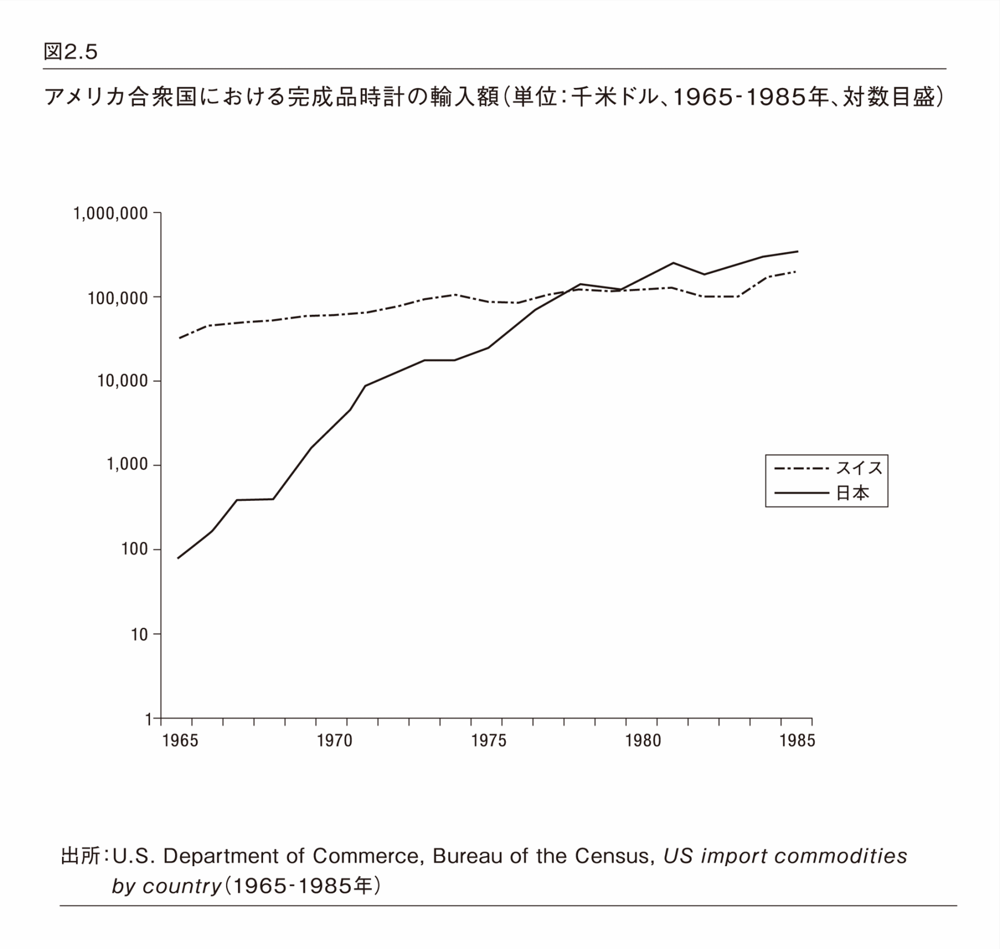
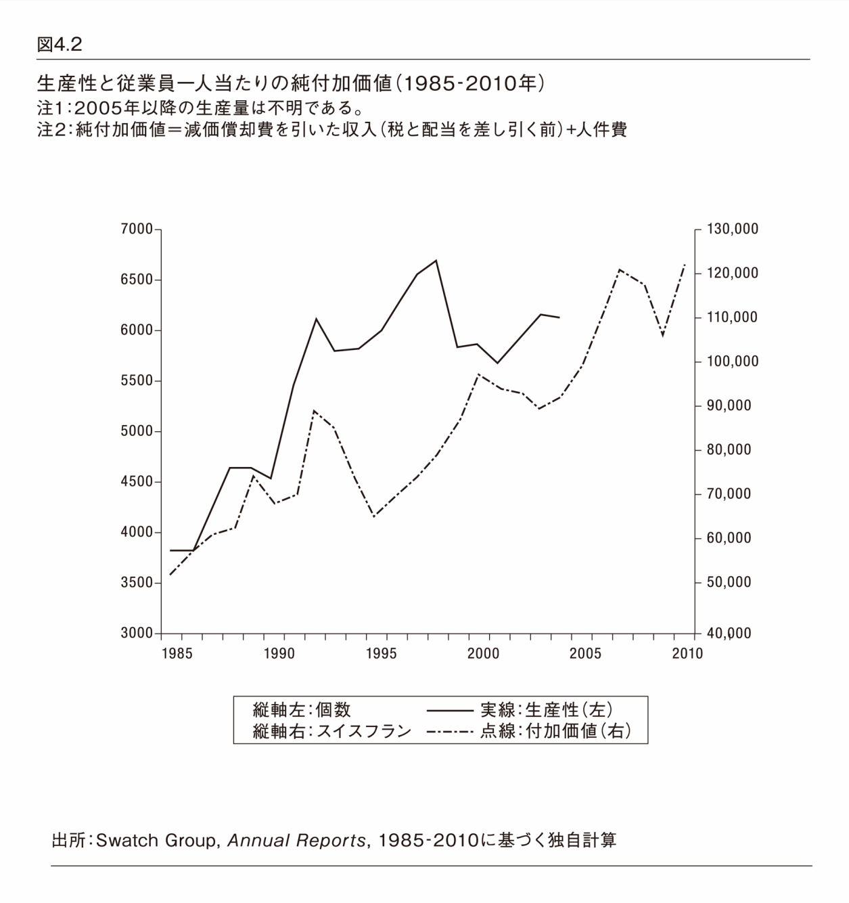

| 「機械式時計」という名のラグジュアリー戦略 | |
| ピエール＝イヴ・ドンゼ | |
| (2014) | |
この本は縦書きでレイアウトされています。また、ご覧になる機種により、表示の差が認められることがあります。
日本語版への序
20 世紀における時計産業史では、グローバルな支配を目指したスイスと日本の戦いが見られた。技術力向上や、新製品開発、販路開拓などのために努力を続けた服部時計店（現セイコーホールディングス）およびシチズン時計（現シチズンホールディングス）が世界最大の時計メーカーとなった。１９８０年代前半のこの成功は日本中で誇らしげに語られた。１９８１年にジャーナリストの勝田健氏が出版した『スイスを食った男たち―時計王国セイコーの１００年―』（経営ビジョン・センター）は当時の状況をよく表している。しかし、いつまでもとは続かなかった。
日本から見ると、１９８５年はいかんせん「歴史の終わり」を意味する。スウォッチの発売（１９８３年）とプラザ合意（１９８５年）による円高を背景に、スイス時計の輸出は１９８６年に再び成長し、日本時計の輸出額を超えた。同時に、日本の学界と一般の人は、時計ビジネスに対する関心を失った。スイス時計産業の復活と日本時計企業の衰退が同時に並行し、その結果、内橋克人氏が『匠の時代』（１９７８‐１９８０年）のシリーズで強調したような、セイコーの優秀な技術者が発明したクオーツ時計という神話は意味を喪失していく。同産業における競争力のシフトを明らかにするには、観点を技術的イノベーションからマーケティング戦略へ転換することが必要となる。オメガや、ロンジン、ブランパンなどのスイス時計企業は、ブランド再建を通してラグジュアリーとなった。ラグジュアリー製品では、付加価値は高精度と技術的イノベーションではなく、文化、伝統と歴史に由来する。これは大きな変化であった。
２００６年から日本に定住する私は、学会と研究会、セミナー、時計ビジネスに関するイベント、一般の人対象の講演会で、時計産業におけるグローバル競争に関してお話しさせていただく多くの機会に恵まれた。観衆が私のプレゼンテーションに示した興味と高い関心、時折見せてくださる好奇心に私は非常に喜んだ。これは欧米のラグジュアリー製品に対する、日本人の以前からの興味の結果であると思われるかもしれない。しかし私は、そこには、より深い根があると思っている。それが復活ということもあり、１９９０年代からのスイスの腕時計産業の、無競争でのグローバルな成功への興味となり、日本の人々の関心を惹くのである。技術革新にふけっている「ものづくり」の国である日本では、文化の資源化・伝統構築のプロセスを理解することは途方もないことのように思われる。
したがって、スウォッチグループ、それからすべてのスイス時計産業が世界市場に返り咲くことを可能にした戦略を明らかにするのが、本書の目的である。さらに、日本の時計会社と多くの他の製造会社がなぜ競争力を失ったのか、スウォッチグループの経験からどのようなインスピレーションを得ることができるのか。これについて日本のビジネスパーソンや経営者、一般の方々に疑問を持っていただくことに、本書が貢献できることを願っている。歴史は、決して終わっていないのだ。
最後に、日本語版のこの序文を終える前に、私の研究に対して関心を寄せてくださった早稲田大学大学院・長沢伸也教授に心からの感謝の意を表したい。この本の翻訳を申し出てくださった教授と彼のチームの全面的なお力添えとご尽力により、日本の読者にお近づきになることができるのは大変な名誉である。
２０１４年10 月 京都にて
ピエール＝イヴ・ドンゼ
序文・謝辞
20 年以上の間、ラグジュアリー産業はどの経済セクターよりも急速な成長を示しており、ほとんどの金融アナリストはこのトレンドが続くと期待している。例えば、コンサルティング会社であるベイン・アンド・カンパニー［Bain & Company］によれば、世界におけるラグジュアリー製品の売上は20 年足らずの間に急増し、１９９５年の７７０億ユーロが２０１２年には２１２０億ユーロに達している [1] 。しかしながら、ラグジュアリー製品（シャンパン、ファッション関連製品、香水、ジュエリー、時計）を製造する企業は、１９８０年以降、同産業やその製品の備える時代を超越した特性を強化するため緻密にコミュニケーション戦略をデザインし、その結果、必ずしも定義するのが容易ではない劇的な変化を経験してきた。歴史、伝統、そして伝説はマーケティングに不可欠の資源であり、ラグジュアリー業界における付加価値であるため、これらの企業や業界の発展を分析するために、型にはまったブランドの言語の奥へ踏み込むことは往々にして困難なのである。
本書では、時計製造を例として取り上げた。近年、力強い成果を上げながら、その研究がさほど進んでいない産業セクターである。もちろん、スイスおよび世界の時計製造企業については、18 世紀から１９６０年代および１９７０年代の著しい変化に至るまで、多くの研究がなされ、この産業セクターの長い歴史において鍵となるポイントに明快な説明をもたらしている [2] 。しかし、１９７５～１９８５年の危機から現在までの、同産業における近年の発展はよく知られてはおらず、逆説的だが、あまり深く研究されてこなかったのである。関心の欠如には、おそらく驚くような理由が２つある。第一は、スイスの学界に固有の特性を反映している。歴史学者は滅多に研究範囲を現在まで拡張せず、経済学者は応用経済的なアプローチに対する関心をいくらか欠いているのである。第二は、メディアの姿勢を映している。時計製造を専門とするジャーナリストの中に、同産業の発展を徹底的に分析してまとめるような者はほとんどおらず、せいぜい主要な時計製造グループのコミュニケーション部門の視点を受け売りする程度なのである。結果として、過去30 年間にわたるスイス時計製造産業の歴史は、革命的な製品（スウォッチ［Swatch］）、華麗な起業家（ニコラス・Ｇ・ハイエック［Nicolas G.Hayek］）、およびスイス・ジュラ地域に特有の由緒ある文化（機械式時計製造）という、伝説になったも同然のイメージに限定されることが多い。
スイス時計メーカーがいかにして１９８０年代後半に世界市場へ返り咲いたのかを究明するには、これらのイメージを越えた観察が必要である。この問題へ取り組むには、いくつかのアプローチが可能である。本書は、スウォッチグループ［Swatch Group］を題材として選択し、橘川武郎氏の研究に触発された応用経営史の分析を提示する。橘川氏は、日本の石油産業に関する著作において、企業の現在の競争力（あるいは競争力のなさ）を理解するためには歴史的観点がいかに有効であるかを示した [3] 。現在まで範囲を広げた歴史的アプローチの提唱者として、橘川氏は自身の観点を以下のとおり定義している。「応用経営史の研究は、経営史の分析を通して業界と企業の成長のダイナミズムを明らかにすることである。そしてこのような研究では、そこで明らかになったことに基づき、関連する業界や企業が現在遭遇する問題への解決策を探るのである」 [4] 。このスイス時計産業の分析においては、たとえ目的が純粋に認識に関するもので、したがって著しく異なっていたとしても、上述した内容から考えれば、このように現在の事象にしっかりと根ざしたアプローチは、適切であり、かつ必要なものである。
本書の主題にスウォッチグループを選んだ理由は、主に２つある。第一は、それが世界有数の時計製造グループであることである。スイスにおいては過去30 年にわたり、時計産業の全従事者の約25 ～30 ％をスウォッチグループが雇用してきた（１９９０年にはスイスの時計産業関連の雇用の26 ・６％、２０００年には28 ・９％）。したがって、スウォッチグループは業界全体に多大な影響力を持っているのである。
第二は、スウォッチグループが、グランジュ［Granges］に本社を置く子会社のＥＴＡ社［ETA SA］を通じ、半完成ムーブメント（エボーシュ）とムーブメント部品の製造を事実上独占している――それは後に見るように、意図的な選択というより過去の名残であったが――ことである。つまり、法的な理由（スイスの独占禁止法は国際的に見て非常に拘束力が強いことはなかったため）よりもむしろ歴史的な理由から、スウォッチグループは傘下の時計製造工場だけでなく、一流の時計工房（マニュファクチュール）を含む主な競合グループにも部品を供給している。ムーブメント関連技術を支配した結果、スウォッチグループは業界のリーダーとされているのである。
現代の時計製造業界を分析的に眺めるのは容易な作業ではない。多数の方法論上の問題のうち最大の難関は、一次資料を入手することである。スウォッチグループを含むほとんどの企業は、保管されている記録へのアクセスを許可しておらず、年次報告書でも限られたデータしか公開していない。投資家のために公開されているデータだとはいえ、こうした資料は２０００年代にコミュニケーションツールとなり、現在では企業がどのように機能しているかを理解するのに役立つような情報は減りつつある。一例として、スウォッチグループは２００５年以降、販売量（時計とムーブメントの数量）とアジアで働く従業員の割合に関する情報を非公開にした。しかしながら、このように情報が制限されているからといって、現代スイス時計産業の分析が不可能になるわけではない。この研究には、主にスウォッチグループの年次報告書と公式なスイス外国貿易統計からの資料が用いられている。テキストが必要以上に冗長で読みづらいものにならないよう、通常これらの資料を情報源とする場合は出典を記載していない。
本書は、もともと２０１２年にアルフィル＝プレス・ユニヴェルシテール・スイス出版［Éditions Alphil-Presses Universitaires Suisses］より『Histoire du Swatch Group』というタイトルの下にフランス語で出版された著作の、英語による増補改訂版である。また本書の基礎となった原稿の草稿は、大阪大学（英語）とスイスのヌーシャテル大学（フランス語）で執筆した研究成果報告書、および「The Comeback of the Swiss Watch Industry on the World Market: A Business History of the Swatch Group （1983--2010）」のタイトルで『Journal of Strategic Management Education』に発表した論文（vol.8, no.2, 2012, pp.1--32）である。第２章の大部分は、トーマス・デイビッド［Thomas David］、ジョン・マシュー［Jon Mathieu］、ジャニック・マリーナ・ショーフェルブール［Janick Marina Schaufelbuehl］およびトビアス・シュトラウマン［Tobias Straumann］の編集による評論集『Crises - Causes, interprétations et conséquences』の一部として２０１２年に発表された、「Global Competition and Technological Innovation: A New Interpretation of the Watch Crisis, 1970s--1980s,」と題する試論（Zurich : Chronos, pp. 275--289）から取っている。本書の上記の草稿を精読し、意見やコメントをくださった多くの方々に感謝する。とりわけニコラ・バベイ［Nicolas Babey］、ジャン＝クロード・ビバー［Jean-Claude Biver］、バスティアン・ビュス［Bastien Buss］、オリヴィエ・クルヴォワジエ［Olivier Crevoisier］、ニコラ・アンセン［Nicolas Hanssens］、ローランス・マルティ［Laurence Marti］、クリステル・ロック［Christelle Roks］、澤井 実［Minoru Sawai］に感謝を申し上げる。そして、時計の輸出に関する膨大な統計データを提供してくださったスイス時計産業協会［Federation of the Swiss Watch Industry］（ＦＨＳ）に謝辞を贈りたい。フランス語版の発行人で、建設的な批評やアドバイスをくれた友人アラン・コルタ［Alain Cortat］と、本書の翻訳をサポートし、世界中の読者に届ける手助けをしてくれたデイビッド・ニール［David Neal］に心からの謝辞を贈る。ただし、本書で表明した見方や間違いについては著者が一切の責任を負う。
ピエール＝イヴ・ドンゼ
監修者による解説
本書の「読みどころ」や「学び」を監修者なりの視点から補足しながら解説しよう。
１．日本企業に蹂躙され、日本の消費者に救われたスイス時計産業
１９６９年はアポロ11 号により人類が初めて月に行った年であった。この記念すべき瞬間に、アームストロング船長とともに月面に降り立った宇宙飛行士バズ・オルドリンは宇宙服の上からオメガの「スピードマスター プロフェッショナル」を着けていた。初めて月面で時を刻んだだけでなく、それ以前の１９６５年よりＮＡＳＡ公認となっていた時計は、アポロ計画で全６回の有人月面着陸でも使用され、唯一無二の「ムーン・ウォッチ」となった。奇しくも同じ年のクリスマスに、世界初のクオーツ時計「セイコー・アストロン」が誕生した。機械式時計に比べて格段に精度の高い日本のクオーツ時計は、１９７０年代から１９８０年代前半、スイスの時計産業に壊滅的な打撃を与えた。これを歴史文献では「クオーツ ショック」と言うが、皆「セイコー ショック」と呼んだ。スイス時計産業に携わる就業者数は半減したとされるが、監修者が各企業にヒアリングしたところでは実感として３分の１になったようである。スイスの時計企業の本社工房はたいてい３階建てのところ、当時は２階と３階の灯りが消えて１階だけだったという証言もあった。
本書で明らかにされるように、１９８０年代前半、スイスの時計産業は機械式時計で復活を図る。機械式時計ならではのムーンフェイズ（満月、新月などの月齢表示）や視認性など、一つひとつ、その魅力を掘り起こしていった。宝石が１個も付いていない、機械式機構だけで数百万円する時計を称賛し、購入したのは日本の消費者であった。
本書の主役はもちろんスイスの時計産業であるが、敵役と助っ人という準主役ないし助演は日本の企業と消費者である。
２．スイス時計産業はスイスの地場・伝統産業
スイスのジュラ地方に時計産業が集積しているのは理由がある。それは宗教改革と宗教戦争、特に16 世紀にフランスで起きたユグノー戦争にまで遡る。フランスのプロテスタントはカトリックと戦ったが、ユグノー虐殺事件などで後退を続け、フランス東部のジュラ地方（フランシュ・コンテ地方。フランスとスイス国境のジュラ山脈の麓に広がる一帯）から国境を越えて、宗教改革指導者カルヴァンの出身地のスイスに逃れる。しかし、平地部には既にスイス人が住んでいるので、多くはスイス側のジュラ地方に定住する。山岳地帯なので、夏場は放牧を行い、１年の半分近い冬場は家に籠って内職で生計を立てる。器用で根気強い人が多く、時計やオルゴールなどの精密機械が中心の家内工業であった。「富山の薬売り」のように行商が毎月、各戸を訪問して出来上がった製品を引き取るとともに部品を卸していた。やがて、建屋を立てて、職人を工房に集めて一貫作業を行う形態の時計製造会社が設立されたのであった。このため、今でもスイスの時計企業は、ジュラ地方、とりわけジュウ渓谷［the Vallée de Joux］沿いにある。監修者が訪問したことがあるブレゲ（スウォッチグループ傘下）やブランパン（同）、オーデマ ピゲ（独立系）は山岳鉄道の終着駅のル・ブラッシュ［Le Brassus］という小村、ジャガー・ルクルト（リシュモン グループ傘下）はその少し手前のジュウ湖［the Lac de Joux］畔のル・サンティエ［Le Sentier］という町、ピアジェ（同）のムーブメント工房はスイスとフランスの国境沿いの林道でしか辿り着けない山深いラ・コート・オ・フェ［La Côte-aux-Fées］という村にあった。まさに「おらが村の会社」であった。
したがって、スイス時計産業は、まさにスイスの地場・伝統産業である。ここで製造される「スイス製 （Swiss Made：スイス連邦法による定義は本文参照）」の時計の95 ％が香港、日本をはじめとする世界へ輸出される。翻って、日本の地場・伝統産業は需要や売上が減少し、世界展開どころか、危機的状況にある。しかし、スイスの地場・伝統産業であるスイス時計産業は存亡の危機を乗り越えて世界に飛躍している。
日本の地場・伝統産業は、スイス時計産業に学ぶべきである。
３．「スイス製」にこだわるスイス、「メイド・イン・ジャパン」を捨てる日本
スイスの地場・伝統産業であるスイス時計産業は、スイスで製造される「スイス製 （Swiss Made：スイス連邦法による定義は本文参照）」の時計の95 ％が香港、日本をはじめとする世界へ輸出されている。翻って、日本のものづくり企業の大半は、価値づくりを忘れ価格を下げるだけの競争に明け暮れている。コストダウンの消耗戦は、企業とブランドを消耗させるだけである。日本でつくると高くなるので、安くつくるため生産工場をアジアに移転する。例えば工場を中国沿岸部に移転したが、人件費が上昇したので内陸部に再移転。内陸部も高くなってきたし日中関係が微妙になったので、ベトナムやミャンマーに再移転。バングラデシュ、スリランカまで行くと、次はアフリカであろうか。移転の連鎖は、失礼ながら時間稼ぎの対症療法ではないか。生産の海外流出や国内の空洞化とともに、高品質の代名詞である「メイド・イン・ジャパン」を自ら失っているのは、大きな間違いである。スイス時計産業のように、日本を基点に日本から世界に発信すべきではないか。
日本のものづくり企業は、スイス時計産業に学ぶべきである。
４．スウォッチの革新性と「肉を切らせて骨を断つ」捨て身の陽動戦略
ややこしいが、スウォッチ［Swatch］は、スウォッチグループ［the Swatch Group］に属するメーカーの一つで、かつその単一ブランドである。名称は「スイス ウォッチ」の略称と理解する人が多いが、新しい時計という意味の「セカンド ウォッチ」の短縮系であると創設者ハイエックは解説している。監修者はむしろ、直訳の「第２の時計」だと考える。時計が必需品であれば１人１個持てば十分であるが、必需品でなくファッションのように第２、第３の時計に着替えるとすれば１人で何個も持つようになる。そこで、ファッションのように春夏と秋冬の年２回のコレクションやクリスマスに新作を多数発表し、しかも１つのモデルは１シーズンのみの販売とした。かくして、日本をはじめ、世界中にスウォッチのコレクターが現れた。
実は、スウォッチは、１９７０年代に時計市場を席巻し、スイス時計産業を窮地に陥れた日本製クオーツ式時計に対抗するために開発された。高精度で市場を席巻した日本製クオーツ式時計に対して、個性的なデザインと簡素な構造による低価格を武器に、戦いを精度による戦いからデザインと価格の戦いに一変させた。スウォッチが戦場を変えて日本製クオーツ時計との戦いを一手に引き受けることにより、かろうじて生き残っていたスイス時計メーカーが、日本メーカーが思いもよらなかった「ラグジュアリー化」で復活して逆転するのである。
まさに、稀代の戦略家ハイエックが考え出して実行した「肉を切らせて骨を断つ」捨て身の陽動戦略といえる。
５．スウォッチとスウォッチグループの「小が大を呑み込む」関係
スウォッチグループの日本法人であるスウォッチ グループ ジャパン株式会社で展開している11 のブランドは、プレステージ＆ラグジュアリーレンジ、ハイレンジ、ミドルレンジ、ベーシックレンジといった４つのカテゴリーに以下の通り分けられている。
・プレステージ＆ラグジュアリーレンジ：ブレゲ［Breguet］、ブランパン［Blancpain］、グラスヒュッテ・オリジナル［Glashütte Original］、ジャケ・ドロー［Jaquet Droz］、オメガ［Omega］
・ハイレンジ：ロンジン［Longines］、ラドー［Rado］
・ミドルレンジ：ティソ［Tissot］、カルバン•クライン ウォッチ［Calvin Klein Watches］、ハミルトン［Hamilton］
・ベーシックレンジ：スウォッチ［Swatch］
したがって、スウォッチ［Swatch］という単一ブランドは最も安価なベーシックレンジであるが、スウォッチグループ［the Swatch Group］はプレステージ＆ラグジュアリーレンジを中心とした時計産業のグループ会社である。特に、オメガはロレックスに次ぐ世界第２位の時計ブランドであるので、実態としてはオメガを中心として時計産業に特化したコングロマリット（複合企業体）であるといえる。それでは、何故、「オメガ グループ」と言わないかというと、ニコラス・Ｇ・ハイエックがスウォッチを梃 子 にしてグループを拡大していったからである。したがって、本来は「ニコラス・Ｇ・ハイエック グループ」である。それが証拠に、銀座中央通りにあり、スウォッチ グループ ジャパン社と各ブランドの店舗が集まっている日本の本拠地は「ニコラス・Ｇ・ハイエック センター」である。本書は、スウォッチグループのビジネス史が語られているが、それは本書の原題でもある。同時に、スイス時計産業のビジネス史でもあり、ニコラス・Ｇ・ハイエックの半生を描いた成功物語ということもできる。
なお、本文にあるように、日本では紹介されていないブランドや、エボーシュメーカーもグループ企業である。さらには、２０１２年にアメリカのジュエリーブランドであるハリー・ウィンストン［Harry Winston］の小売り部門を買収して傘下に加えたことも付言する。
６．ムーブメントを支配して時計産業全体を牛耳る「トロイの木馬」戦略
スウォッチグループの傘下にエボーシュメーカーのＥＴＡ社がある。エボーシュ［ébauche］とは、「下絵、（彫刻の）粗彫り」を意味するフランス語で、時計ではムーブメントの半完成品を指す。時計の心臓部であり、自動車ならエンジンに当たる。オメガ、ロンジン、ティソ、ハミルトン、スウォッチなどのスウォッチグループに提供するとともに、ＩＷＣ、オフィチーネ・パネライなどのリシュモン グループや、タグ・ホイヤーなどのＬＶＭＨグループ、ブライトリング、フランク ミュラーなどにも提供している。「我が社の高級ラインには自社製ムーブメントを搭載」と高らかに謳うのに対して、それ以外にはＥＴＡ社製ムーブメントを組み込んでいるとわざわざ謳う例はほとんどない。各社がカスタマイズして搭載される上に、本文にあるように、各社のムーブメントとして品番が付けられている。また、自動巻き時計の回転錘 などにはＥＴＡの名ではなく各社のロゴやマークが付いているので、一般の人は気づかないであろう。時計マニアの中には、自社製ムーブメントを含めて、螺 子 の１本から自社でつくる「マニュファクチュール」信奉者が多く、彼らには評判が悪い。エタのムーブメントをポンと入れれば出来上がりと皮肉って、「エタポン」なる言葉まである。
しかし、時計専門雑誌では、自社製ムーブメントでは開発コストや自社分のみの生産なので製造コストが嵩んで時計自体が高価格になる上に、定評あるＥＴＡ社製ムーブメントは信頼性が高いことや保守費用も経済的なので、評価する声も多い。そういう利点があるからこそ、グループを超えて、多くのメーカーが採用している。パソコンでいえば、ほとんどのパソコンメーカーがインテル社製のＣＰＵを搭載しているのと似ている。あるいは、自動車でいえば、系列を超えてトヨタも日産もホンダも同じ会社のエンジンを採用しているようなものである。
そういう状況で、２００２年、スウォッチグループがＥＴＡ社製エボーシュの同グループ以外への供給停止を宣言した。各社は従来通りの時計製造が出来なくなるのが確実で、パニックになったのは言うまでもない。当初は２００６年限りだったのがスイス競争委員会の仲裁により２０１０年限りと猶予され、自社製ムーブメントの開発に乗り出すか、または事実上のＥＴＡ社製ムーブメント（スウォッチグループ傘下のセリタ社が製造する特許切れのＥＴＡ社製ムーブメント）を引き続き使うか、いずれかを迫られ両極化が進んだ。それと同時に、時計産業全体がスウォッチグループ、換言すればハイエックに牛耳られていることに愕然とし震撼したのであった。
７．「機械式時計」という名のラグジュアリー戦略
日本の時計メーカーは、機械式時計も一部つくってはいるが、クオーツ時計、ソーラー時計、ソーラー電波時計、ＧＰＳ時計などに注力している。例えばソーラー電波時計の精度は10 万年に１秒である。「時を計る」という時計本来の機能としては完璧である。しかし、価格は１万円から数十万円がせいぜいである。これに対して、スイスの時計メーカーは、機械式手巻き時計や機械式自動巻き時計に注力している。その精度は日差数秒から十数秒と明らかに劣る。しかし、価格は数十万円から数千万円のものまであり非常に高価である。セイコーの最高峰ブランド「グランドセイコー［Grand Seiko］」やシチズンの最上位ブランド「カンパノラ［Campanola］」は、国産ブランドとしては破格の30 万円から70 万円ほどという高価格ながら最近はよく売れていて両社の決算に貢献している。しかし、スイスの一流ブランドでは、その価格帯は入門製品の価格帯またはそれ以下であり、「タイムピース」としての魅力、ブランドとしての魅力に溢れている。
監修者は「グランドセイコー メカニカルハイビートＧＭＴ（ＳＢＧＪ００１６３万円＋税）」を購入してみた。楷書体ともいうべき端正なデザインと毎秒10 振動（毎時３６０００振動）ならではの滑らかな運針、透明な裏蓋 から覗くテンプの高速回転運動には感動した。セイコーのハイビートは１９６８年に生まれ、当時、世界最高レベルの高精度を達成した。同じ３６０００振動のゼニス「エル・プリメロ」ムーブメントはセイコーより１年あとの１９６９年に生まれた。セイコーのハイビートが58 万円～63 万円であるのに対して、「エル・プリメロ」には文字盤に覗き窓が設けられたオープンタイプやトゥールビヨンタイプ（ダイヤモンドセットを除く）も含めて62 万円～７３７万円と、セイコーと同程度のものから10 倍以上高いものまである。実は、「エル・プリメロ」搭載のゼニス「パイロット ダブルマティック（０３・２４００ ４０４６／２１・Ｃ７２１ １４１万円＋税）」も既に購入しており、グランドセイコーにはない24 時間タイムゾーン表示（ワールドタイマー）、ビッグデイト表示にクロノグラフ（ストップウォッチ）機能、アラーム機能まで付いていて「語りどころ満載」であり、お気に入りはこちらである。
監修者は「カンパノラ メカニカルコレクション（ＮＺ００００－５８Ｗ 53 万円＋税）」も買ってみた。スイス時計によく見られるギョーシェやコート・ジュネーブといった紋様ではなく、砂紋や和傘、和紙をモチーフにして鍍金 を重ねた文字盤は和風テイストで凝っているし、シチズンが２０１２年に買収したエボーシュの名門メーカー、スイスのラ・ジュウ・ペレ社製ムーブメントを搭載しているのが最大の魅力である。ただし、「スイス製 」ではなく「メイド・イン・ジャパン」である。しかし、スイスのボーム＆メルシエ「クリフトン１８３０マニュアル（１００６０ １３２万円＋税）」もラ・ジュウ・ペレ社製ムーブメントを搭載している。18 Ｋレッドゴールドのケースということもあって２・５倍も高いが、気になって仕方がない。
もっと高く売れるはずなのに高く売れずにいるのは、時計メーカーだけに限らない。自動車や電気製品など、日本の工業製品全般に言えることである。時計の例が端的に示すように、日本のものづくりの技術力、クリエイション力はすごい。しかし、ビジネス（価値づくり・商品づくり・ブランドづくり）はまだまだと言える。ものづくりの技術力、クリエイション力はすごいのだから、それを生かしたビジネス（価値づくり・商品づくり・ブランドづくり）をしたら良いではないか。日本が誇る電機産業・自動車産業の悩みは、アジアの新興国メーカーの低価格製品による追い上げでジリ貧になっていることであり、既に危機的状況にあるか、そうでなくても５年後、10 年後には必ず直面する問題である。本書で明らかになるように、クオーツショックにより30 数年前に瀕死だったスイス時計産業は「機械式時計」という名のラグジュアリー戦略によって劇的に復活した。これが本書のタイトルであり、30 数年前にスイス時計産業が直面した危機とそれを乗り越えた戦略は、現在および近未来の日本製造業が生きる道を示している。
本書を日本の企業経営者やビジネスパーソンに広くお勧めしたい所以 である。
２０１４年10 月 都の西北にて
監修者 長沢 伸也
１９８０年代初頭、スイスの時計製造産業は、日本の競合メーカーの世界的拡大を阻止することができなかったため、事実上、終 焉 を迎えたものと見なされていた。最初の高品質な機械式時計の、次いでクオーツ時計の大量生産に勢いを得た日本の時計製造産業は、１９６０年代後半に世界市場のスイス支配に対抗する成長政策を打ち出した [1] 。
１９７０年代に日本の時計製造会社が桁外れの発展を遂げた結果（その生産額は１９７０年の３億５０００万ドルから１９８０年には20 億ドルへ急上昇した）、日本は１９８１～１９８５年に何とかスイスを追い抜くことができた（図1.1 参照）。この５年間、日本の年間時計生産額は平均19 億６０００万ドルで、そのうち17 億４０００万ドルが輸出用だったのに対し、スイスの輸出額は16 億９０００万ドルだった（スイス企業の生産額は公表されていないが、スイス国内では販売額が生産額の約５％と市場が小さいため、輸出額に近いと考えられる）。その結果、スイスの時計産業は日本との競合で危機的な状況に追いやられ、輸出が衰退に次いで停滞しただけでなく、雇用が落ち込んだ。しかしながら、１９８０年代末からの動きは完全に異なっていた。スイスの輸出が急成長を続ける一方（１９９０年に49 億ドル、２０００年には61 億ドル、２０１０年には１６２億ドル）、日本の時計生産は停滞の後に急落した（１９９０年に28 億ドル、２０００年に15 億ドル、２０１０年に９億ドル）。
経営学分野に取り組む日本の研究者たちは、日本の時計産業の停滞と衰退に注目してきた。こうした研究では一貫して、この時計産業に働く力学を理解する中心的要因として技術に焦点を当てている。事実、１９９０年代と２０００年代の日本の文献では、製品の多様化と構造転換（いわゆるモジュール化プロセス）を、失われた競争力の回復を期待して採用された戦略として強調しているのである [2] 。このように強調することは、技術革新ばかりに目を向けている日本の時計産業当事者と、認識を完全に同じくしている。新製品の設計と生産コストの削減は、依然として日本の時計製造会社の中心戦略になっているが、これまでのところその世界市場再征服の企ては成功していない。日本では一方で、太陽電池時計（１９９５年）やクオーツ式と機械式の両機構を兼ね備えたスプリングドライブ時計（１９９９年）、電波時計（２００５年）など、実に革新的な製品が次々に生み出されており、それによって、コミュニケーション戦略の相変わらず重要な要素である革新性を訴求している。その一方で、製造コストの削減を図ろうと、多くの生産拠点が国外（主に中国）に移転されている。結果として、日本の時計製造会社が海外で生産する時計の割合は、１９９５年の17 ・８％から２０００年の24 ・２％、２０１０年には45 ・８％へと急激に上昇している [3] 。要するにこの２つの戦略の狙いは、スイスの時計メーカーと再び競合することを期待し、市場に革新的で、安価で、高品質な製品を提供することである。しかし、これらの手段は、日本の時計製造会社の成長や競争力強化に役立たなかった。
スイス時計製造産業の再生を理解する
日本の研究者や実業家が産業の成長や企業競争力の動力として技術革新を重要視するのに対し、欧米の経営学者や歴史家は、驚くべき世界市場への返り咲きを果たしたスイスの時計製造産業を異なる言葉で説明している。ここには二つの主要なアプローチがある。第一の優勢なものは、「人文学派」とも言えるアプローチである。つまり、これは産業集積に焦点を当てる。この見方では、マーシャル型産業集積［the Marshallian district ］の少数の主要要素（産業風土や企業間競争の相補性の関係など）を用いることにより、同産業の高級品 市場への再配置と伝統的なノウハウによる高品質製品の製造を可能にする、土地に刻まれた技術文化の結果として、スイスの時計製造産業の再生を解釈することができる [4] 。例えば、エレーヌ・パスキエ［Hélène Pasquier ］は「時計製造会社は自らを、地域の昔ながらの伝統の保証人と位置付けている」と主張している [5] 。フランス人社会学者ピエール=ポール・ザリオ［Pierre-Paul Zalio ］が言うように「同地域を空想的に記述したもの」 [6] に基づく広範囲に広まったこの手の推論は、時計製造産業自らが作り出した物語に非常に近い。その上このアプローチでは、危機を乗り越える上でスウォッチ［Swatch ］が果たした役割に極めて重要な意味を与えている。この革新的な製品は、スイスの時計製造産業が日本に打ち勝つ助けになっただけでなく、得られた利益を通し、自らを高品質な機械式時計製造へ改めて位置付けたともされているが、その過程が文献で明かされることは決してない。しかしながら、このアプローチには問題がある。第一に、解釈に議論の余地があるマーシャル型産業集積と情報の不十分な分析に基づくモデルを提示していること、第二に、スイスの時計製造産業をグローバルな文脈に位置付けていないことが理由である。
第二のアプローチでは、スイスの時計製造産業の再生を、日本や香港の競合企業との関係の中に同産業部門を再配置することを目指した、新しいマーケティング戦略の結果として説明している。エイミー・Ｋ・グラスメイヤー［Amy K. Glasmeier ］は、スイスの時計製造会社が競争力を回復した理由を、１９８０年代におけるスイス式生産システムのグローバル競争への再適応――グラスメイヤーはこれを「日本式再編成」と呼ぶ [7] が、すなわち限定された数の機械式時計キャリバー（制御部品を除くムーブメント）を大量生産することで、１９５０年代に株式会社服部時計店（後のセイコー［Seiko ］）により採用された戦略である――だと説明する。オリビエ・クルヴォワジエ［Olivier Crevoisier ］らの研究では、生産システムの転換に注目しただけでなく、新しいマーケティング戦略が果たした決定的な役割も強調している。ユーグ・ジャネラ［Hugues Jeannerat ］とオリビエ・クルヴォワジエによれば、スイスの時計製造産業の成功はまさに「非技術的革新」が原因でさえある [8] 。レイラ・ケビール［Leila Kebir ］とクルヴォワジエは、１９９０年代における機械式時計製造の復活が、いかにこのような文化的資産を「歴史的遺産、技術および美学」として用いたことに基づくかをはっきりと示している [9] 。文化的遺産を築くこの過程もまた、民俗学者エルベ・ムンツ［Hervé Munz ］の研究に顕著である [10] 。人文学派とは逆に、重要なのは同地域に刻み込まれた伝統的なノウハウの存在そのものではなく、むしろマーケティング目的でこのイメージを使用し、維持したことである。しかしながら、この地域的な経済研究は主に２０００年以降を対象としており、この新たな戦略を、その起源に光を当てるのに役立ったであろう歴史的プロセスの文脈に位置付けてはいない。
本書は後者のアプローチを採用しているだけでなく、生産システムの編成方法の分析を決定的に重要視している。スイスがどのようにして世界の時計市場を再び支配することができるようになったかを把握するためには、スイスの時計製造会社の伝統的なノウハウと卓越した技術に関する大げさな物語から距離を置く必要がある。技術やノウハウの世界規模の流れは、産業革命以来加速している一般的な現象であり、経済のすべてのセクターに影響を与えている [11] 。今日では、高品質の機械式時計は世界のどこでも製造することができる。セイコーは１９６０年代より非常に正確な高品質の機械式時計を作っており、時計製造分野の最高峰とされるトゥールビヨン［tourbillon ］時計を生産するノウハウを持っている（トゥールビヨンは、垂直姿勢率の誤差を排除した小型の時計機構） [12] 。必要な特許を保持しているにもかかわらず、それを製造しなかったのは、技術的な理由ではなくマーケティング上の理由が原因である。世界のラグジュアリー市場において、時計製造はもともとスイスだったからである。１９９０年代半ば以降、スイスの時計製造のラグジュアリー産業への転換と、この分野における全面的な変化への適応は、その成功のまさに基盤であると思われる。時計輸出の統計を見ると、この遠大な変化が特によくわかる。
スイスの時計輸出における一般的傾向
スイスの外国貿易統計は１９８５～２０１０年のスイスの時計製造産業における全体的な傾向を示している（表1.1 参照）。そこには２つの異なる段階がある。第一段階である１９８５～１９９５年は、輸出の全体的な好転（数量・金額共に）とクオーツ時計生産量の著しい上昇が示すとおり、産業が危機を克服した10 年だった。クオーツ時計は、１９９０年代には時計輸出量の平均89 ・２％を占めるが、金額ではせいぜいその半分にすぎなかった。これらの数字は、このフェーズにおける生産システム再構築の重要性および日本のライバル企業と競合する努力を強調している。
第二段階である１９９５～２０１０年には、スイス時計をラグジュアリー製品に変貌させるマーケティング戦略の導入が見られる。輸出量は急減し、２０００年代後半には３０００万個程度に落ち着いた。一方、輸出額は著しい成長を遂げ、２０１０年には１５３億スイスフランに達している。この急成長は、機械式時計を威信と伝統を示すラグジュアリー製品に転換する戦略を基盤としていた。総輸出額におけるその割合は１９９５年の47 ・３％から２０１０年の71 ・９％へ急増したが、数量ベースでは微増にすぎなかった。２０１０年には、スイス時計の輸出全体の80 ％以上がクオーツ時計だった。しかしながら、１９９５年以来、時計製造産業における成長は、今やラグジュアリー製品として販売されている機械式時計の価格高騰によりもたらされている。とはいえ、マーケティング戦略がこの過程における決定的な要因だったと思われるにしても、生産関連の側面も考慮に入れなければならない。
ラグジュアリー産業のグローバル化
１９８０年代後半にスイスの時計産業が世界市場に意気揚々と返り咲いた事情、およびスウォッチグループ［the Swatch Group ］の目覚ましい成長の事情を理解するためには、ラグジュアリー産業全体の発展に目を向けなくてはならない。時計製造は、１９７０年代以降、ファッション、ワイン、ジュエリーをはじめとする同セクターのあらゆる産業に影響を与えた全面的な変化の作用を受けてきた。ラグジュアリー産業の変貌は、生産の合理化、ブランドのグローバル化、使用の大衆化［democratization ］によって特徴付けられている。
伝統的にラグジュアリー製品は、多くの場合家族経営の小企業によって、少数の裕福な上流階級のために少量生産されるものだった。しかしながら、ラグジュアリー産業に、かつての同族企業を吸収合併することで多国籍企業が誕生したため、製品の性質が大きく変化した。ラグジュアリー製品は大衆消費財となり、高価であるにもかかわらず工業的に生産され、中流・上流階級双方に向けたものとなった。経営学者たちはこうした新しい消費財の出現を説明するために、様々な概念を考え出してきた。例えば、ダニエル・アレール［Danielle Allères ］は「手の届くラグジュアリー［affordable luxury ］」と表現し [13] 、一方で、マイケル・Ｊ・シルバースタイン［Michael J. Silverstein ］とニール・フィスク［Neil Fiske ］は「ニューラグジュアリー［New Luxury ］」という概念を使う [14] 。そのような消費財の生産と販売は、大規模な宣伝によって維持される特権階級 のイメージが大きな利幅を生むため、極めて利益率の高い活動となるのである。これは、伝統的なラグジュアリー――「特権階級 ［exclusive ］」なものに分類され、極めて高価な品を含み、富裕層をターゲットとし、通常は利益率もさほど高くない――とは対照的である。
こうした変貌は経営学者たちの興味を大いに惹きつけ、この分野に特有の新しい研究領域が形成されている。しかし、これらの努力も、スイスの時計製造の転換をその複雑さ全体を含めて説明するには不十分だと思われる。同様に、現代におけるヨーロッパのラグジュアリー産業の発展に関して、経済史学者による研究はあまり進んでいない。経営学や社会科学分野の研究は、一般的に歴史的観点を欠き、ブランドの歴史と自分たちの歴史に隔たりのある点が特徴である。ラグジュアリー産業に焦点を合わせたマーケティングや経営学の研究の多くは、同産業の大企業でコンサルタントとして働く研究者によって出版され、こうした企業のために大学では新たな世代の管理職育成が行われている。広範なこの種の研究は、ブランドのマーケティング戦略の理解を深めるというよりは、ブランドのストーリーに学術的正当性を与えることを目指している。ほんの一例を挙げると、ジョナスとベッティーナ・ホフマン［Jonas and Bettina Hoffmann ］は、時計メーカーのリシャール・ミル［Richard Mille ］の研究をまとめるにあたって、次のように書いている。「情熱はラグジュアリーの革新を進めている者に特有の個性である。それは洞察力の源泉である。稀 有 な経験を得てそれを届けるにあたっての情熱こそが、ラグジュアリー革新を成功させ、ブランドエクイティを長きにわたって持続させるのである」 [15] 。マリー=クロード・シカール［Marie-Claude Sicard ］はこの分野の支配的な傾向を的確に要約している。「驚くべきコンセンサスのおかげで、メディアもアナリストも、与えられたテーマについて書く著者も誰も、社会通念に敢えて挑戦しない。型どおりの言語が幅を利かせているが、その唯一の目的は互いの広告支援を相互に強化することであるようだ」 [16] 。その上、ラグジュアリー産業を専門とする歴史学者たちは、18 世紀から19 世紀に焦点を当てる傾向がある。フランスやイギリスの場合、元来貴族用だったラグジュアリー製品が、都市部の中流階級の出現や生産の機械化を経てどのように繁栄したかが示されている。しかし、こうした研究は１９７０年代以降を扱わない傾向がある [17] 。
しかし、ここ数十年のラグジュアリー産業（特に時計製造）を特徴付ける合理化、グローバル化、大衆化への三大傾向は、本格的な転換だと思われる。これは製品の性質の転換に基づくものであり、ほぼ伝統的な手法で、往々にして同族企業によって製造される高品質製品（１点が数十万フランの値で売られる限定生産品のような「特権階級 のラグジュアリー」）から、グローバルブランドによる大量消費財（オメガ［Omega ］やタグ・ホイヤー［TAG Heuer ］、ロレックス［Rolex ］のような「手の届くラグジュアリー」）への転換を伴う。この大変貌に注目した主にフランスとイタリアの歴史学者たちは、ファッションやジュエリー、食材におけるブームは、１９７０年代以降、新たなグローバルマーケティング戦略（小売網、ブランディング政策、デザイン等）と、かつての同族企業や工房のラグジュアリーグループ（１９８７年にフランス人実業家ベルナール・アルノー［Bernard Arnaul ］によって設立されたＬＶＭＨ（モエ ヘネシー・ルイ ヴィトン［Moët Hennessy Louis Vuitton ］）など）への統合によって引き起こされたと説明している。しかし、こうした研究は創作、消費、マーケティングに焦点を当て、生産性の問題をほぼ完全に脇へ追いやっている。「ラグジュアリーの産業化」という言葉が使われる際、それは第一にラグジュアリー製品の使用が一般化し、ありふれたものになった事実を、往々にして後悔の念を込めて強調するためであり、同産業の生産性の基盤を説明するためではない。コリンヌ・デグット［Corinne Degoutte ］は「生産戦略」の再定義がもたらす課題に触れている数少ない一人であるが、このトピックはデグットの議論において二次的なものにとどまっている [18] 。アンドレア・コッリ［Andrea Colli ］とエリザベッタ・メルロ［Elisabetta Merlo ］は、１９７０年代以降のイタリア・ファッション産業の成功は、独立したデザイナーと革製品または生地の産業地域の中小企業との協力関係が基盤であることを示しているが、この生産システムがどのように進化したかには目を向けていない [19] 。
しかし、ヨーロッパのラグジュアリー産業の競争力が、もっぱらイメージやブランド、コミュニケーション（端的に言えば「ソフト面」）を基盤にしている可能性は極めて低いと思われる。明らかに、「ニューラグジュアリー」の 一般化や急激な拡大は、消費者の嗜 好 に合うだけでなくコスト面でも競争力のある製品を提供できるような生産システムの再構築に付随して起こってきた。生産システムとマーケティング戦略は、現代ラグジュアリー産業における相互補完的な２本の柱なのである。
これは特に、スイスの時計産業とスウォッチグループに当てはまる。スイスが日本に競合する力を回復したのは、まさに生産システムの徹底的な再構築が、時計を「手の届くラグジュアリー」に変えた新しいマーケティング戦略に結びついたことによると思われる。そしてこの二大戦略こそが本書の主題である。本書は時系列およびテーマ別の両方の構成に従い、全10 章から成る。２章では、１９７５～１９８５年の時計製造業の危機を振り返り、スイスの時計産業がその主なライバルである日本との競争で苦境に陥っていた理由を考察する。３章の主題でもある「スウォッチグループの創生」は、危機を乗り越えるため１９８０年代初めに導入された手段である。同社創立に続く生産システムの再構築と同時に、世界市場にはスウォッチという象徴的な新製品が投入された。この章はまた、この有名なプラスチック製時計の企業経営に対する影響にも目を向ける。続く２つの章では、１９９０年代後半までスウォッチグループを率いたニコラス・Ｇ・ハイエック［Nicolas G. Hayek ］が採用した新戦略の２つの要に焦点を当てる。生産システムの合理化とグローバル化（４章）、新たなマーケティング戦略の採用（５章）である。これらの変革が実行に移されるにつれ、スウォッチグループは１９９０年代半ばより、ゆっくりとだが着実にラグジュアリーへの転換を開始しており、この変遷の概略を第６章に示している。この再配置戦略の中心となる２つの要素は、続く２つの章で詳しく分析されている。スウォッチグループの主要ブランドとなり、収益の高い、ニューラグジュアリーの区分に位置付けられたオメガのリブランディング（７章）と、２０００年代にグループ最大の顧客になった中国市場（８章）である。第９章は世界市場における先導的な時計メーカーとしてのグループのポジションを明確にするため、スウォッチグループのスイス内外の主要なライバルを扱う。10 章は結論である。
２０１０年の夏、スイスの報道機関や国際的なメディアは、ニコラス・Ｇ・ハイエック［Nicolas G. Hayek ］に心から追悼の意を表した。２０１０年６月28 日に逝去したハイエックは、スイス時計産業の救世主と称えられた人物である。アメリカのビジネス誌『フォーブス』［Forbes ］は「伝説――スイス時計産業の再生を達成した功績」と称賛し [1] 、一方、『ニューヨーク・タイムズ』［The New York Times ］は、「スウォッチの導入で、スイス時計産業を救った輝かしい人物」についての記事を掲載した [2] 。事実、１９８０年代初めにスイスの大手銀行がハイエックをコンサルタントとして雇ったとき、スイス時計産業はその存続を脅かす経済危機のただ中にあった。40 年近く実質的に安定成長を続けた後（第二次世界大戦中における時計とムーブメントの輸出減少は、参戦国向けの軍需品生産によって十分に埋め合わされていた）、スイス時計産業は１９７５年に景気後退の局面に突入した。スイス外国貿易統計にはこの現象がはっきりと反映されている（図2.1 参照）。時計とムーブメントの輸出量は１９５０年の２４２０万個から、１９６０年には４０９０万個へ急増し、１９７４年には８４４０万個という歴史的な量でピークを記録した後に落ち込み、１９８２～１９８４年の年間平均は３１３０万個だった。雇用人数では、１９７０年には９万人近かったのが、１９８０年には４万７０００人足らずにまで急落している。
実に奇妙なことに、スイス時計産業史におけるこの危機の影響と範囲の大きさにもかかわらず、ビジネス史や経済学の分野において、危機の原因やメカニズム、結果の検討を可能にするような学術的な研究はされなかった。しかし、生産システムの合理化とマーケティングの再検討という、スウォッチグループ［Swatch Group ］の誕生に続いて採用された二大戦略の背景にあった重要な問題を理解するために、我々はスイス時計産業における１９７５～１９８５年の危機の正確な原因を調べなければならない。
歴史学における１９７５～１９８５年の危機
スイス時計産業における１９７５～１９８５年の危機に取り組んだ研究者の大半は、説明的要素として一群の要因（産業集積の欠如、クオーツ革命、強いスイスフラン、石油価格ショックなど）を強調しているが、まるでその同時性によって現象は十分に説明されるとでも言うように、それらがどのように相互作用し、危機へ導いたかは示していない。１９８０年代に出版された２冊は、「時計危機」の問題を取り上げている。この２冊は、この主題を扱った著作を１９９０年代と２０００年代に発表した著者たちに多大な影響を与えている。
最初の著作はジョルジュ・ピオテ［Georges Piotet ］によるもので、ローザンヌ大学で書かれた社会科学の博士論文の成果である。この中でピオテは、組合協同体主義の角度からスイスの時計産業における構造変化を解析した [3] 。「困難の時代」（p. 37 ～70 ）に割かれた第一部では、１９８０年代初めに時計産業が直面した困難が強調される。強調される５つの要因は、産業構造（多数の中小企業）、技術革新（クオーツ時計）、国際競争、通貨の不安定性、および変化する経済環境である。しかし、著者は危機の全体的体系的な解釈は提示せず、「資本、労働組合、および国が解決しようとした主な問題」の記述を繰り返すにとどめている [4] 。
２冊目の著作は、ハーバード大学教授のデビッド・Ｓ・ランデス［David S. Landes ］によって１９８３年に出版された、時計製作術と時間計測の世界史をまとめたものである。著者は「クオーツ革命」と題した１章全体を、スイス時計産業における１９７５～１９８５年の危機に割いている [5] 。ランデスは、第二次世界大戦後の世界市場においてスイスの支配に挑戦した新たな競合相手の問題に取り組んだ。ここではアメリカのタイメックス社［Timex Co. ］と、低価格の機械式時計を量産するその生産システムのケースを取り上げている。この時計は、最終的にはスイス時計メーカーを脅かす存在にはならなかったが、その原因は不明である。結局、著者によれば、危機を引き起こしたのはプロダクト・イノベーション、つまりクオーツ時計だった。ランデスは以下のように述べている。「時間計測技術の劇的な変革により、相変わらず時計に見えるものが生まれたが、それは実際には新しい製品だった」 [6] 。著者は技術史の古典的な見方を採用しつつ、１９６０年代後半にスイス、アメリカ、日本で開発されたいくつかのプロトタイプを示した。しかし、スイスの時計産業はこの新技術に精通したにもかかわらず、クオーツ時計の製造に乗り出さなかった。「唯一足りなかったのは起業家精神である。時計メーカーが興味を示さなかったのだ」 [7] 。ランデスによると、こうしてスイスの時計メーカーが新しい技術を採用できなかったことが、１９７５～１９８５年の危機、倒産、雇用の落ち込みへ繋がったという。
その後の数十年間に出版された、１９７５～１９８５年の危機の問題を扱った著作は、主にピオテとランデスの著作に刺激を受けている [8] 。こうした著作では、スイスの時計産業にこの重要な技術革新を採用する能力が欠けていたことを強調し、これを危機の第一の要因と見なしている。そこへスイスフランの強さが追い打ちをかけたとされるのだが、両者の繋がりは立証されていない。これらの研究の主な問題は、ピオテとランデスの著作と同様、危機を説明するモデルが構築されておらず、その代わり主として同時性を通して関連するいくつかの要素を提示していることである。実際、１９７５～１９８５年の時計危機をめぐる学術的な議論は、もっぱら当事者の行動に対する同時代の人の意見を反映しているため、スイスの集合記憶に共有されるものに近いイメージを伝えている。この点で、地方紙や全国紙を通して見た危機に関するセシル・アギヨーム［Cécile Aguillaume ］の研究は、危機のメカニズムを再構築するというより、当事者による語り口を解釈要因として再現するという見方の典型である [9] 。ランデスもまた、基本的に報道や企業家、エンジニアの証言に依存していた。スイス時計産業がクオーツ革命に対処する力を持たなかったために生じた大きな危機、という伝統的なイメージは、さらに、歴史家たちの取り上げるスウォッチとニコラス・Ｇ・ハイエックをめぐって生まれた伝説とも呼べるものによって強化された [10] 。この語り口によれば、神によって外部から遣わされてきた男が、プラスチック製のクオーツ時計という、保守的なメーカーが製造したがらなかった新製品の助けを借りて業界を再生したのである。たとえ、この話の中に一片の真実があるとしても、生産システムの大改造という、スイス時計産業の競争力回復の本質的な特徴は覆い隠されている。プロダクト・イノベーション以上にプロセス・イノベーションこそが、１９７５～１９８５年の危機の時代におけるスイス時計産業の競争力喪失の中心だったのである。
技術的挑戦：高品質機械式時計の大量生産
実際のところ１９７５～１９８５年の危機は、新技術を獲得し、それを生産システムへ統合するにあたっての、スイス時計産業の構造的不適合によるものだった。しかし、これはもともと新製品（クオーツ時計）の構想と製造に関わる問題ではなく、むしろ大量生産システムの組織化に関わる問題だった。文献では主にイノベーション関連の問題に焦点を当てているが、不思議なことに、著者たちは「プロダクト・イノベーション」と「プロセス・イノベーション」を区別せず――この区別はシュンペーターに遡 る [11] ――前者にのみ焦点を当てている。
このように、モノに対する過度の注目のせいで、歴史家は、１９７５～１９８５年の危機の責任はいわゆるクオーツ革命にあると見なし続けることになった。しかし、日本の競合メーカーとの比較分析を行うと、より複雑なプロセスが明らかになる。まず、セイコー［Seiko ］がクオーツ時計を最初に（１９６９年のクリスマスに）売り出した時計会社だったという事実は、スイスのライバル（ロンジン［Longines ］、オメガ［Omega ］、エボーシュ［Ebauches ］）に対する技術的優位性を反映するものではない。むしろそれは、技術と精度の面において先頭に立つというイメージの確立を正確に狙ったマーケティング戦略の成果だった [12] 。実際に当時、精度はスイスの時計メーカーのコミュニケーション戦略のキーポイントだった。いずれにしても、まもなくスイス企業は先導するセイコーを追い、それぞれ最初のクオーツ時計を発表した（１９７１年にジラール・ペルゴ［Girard-Perregaux ］、１９７２年にロンジン、１９７３年にオメガ） [13] 。結果的に、首位か後発かという問題は、技術習得には関係がなかったのである。一方、スイス企業がクオーツ時計の販売促進を行ったにもかかわらず、この新製品に少しずつシフトしたのは日本の時計会社のみだった。
日本国内の機械式時計とクオーツ時計の両方の生産量を表す図2.2 から、以下の２点が言える。一つ目は、クオーツ時計の生産が１９７０年代後半に増加し始めたことである。１９７５年には２６０万個、つまり全体の８・５％にすぎなかった。さらに、機械式時計は１９７８年まで依然として時計生産量全体の過半数を占めていた。１９７９年になってようやく、クオーツ時計の国内生産量は３３９０万個、全体の57 ・０％に達し、機械式時計を追い抜いたのである。その後の成長は非常に速く、１９８０年には５３８０万個（62 ・４％）、１９８５年には１億４９３０万個（81 ・７％）となっている。二つ目は、日本の時計会社が、クオーツ時計が成長の基盤になった後も機械式時計の生産をやめなかったことである。もちろん、機械式時計の生産は１９５０年代と１９６０年代のような急速な成長を続けてはいなかったが、１９７５年以降にもスイスで見られたような急落は起こっていない。機械式時計は、１９７０年の２３８０万個が１９８０年には２５６０万個へ伸び、ピークの１９８６年には４１８０万個となった。機械式時計の市場はまだ存在しており、日本はスイスからそのシェアを奪っていたのである。結論として、日本でクオーツ時計への真のシフトが起こったのは、スイスで危機が始まってからだったということを認めなければならない。１９７５年に起こったスイスの時計輸出の急落は、クオーツ革命――それが１９８０年代前半の日本の競争優位性を強化したにしても――、そしてスイスの危機と直接結びつけることはできないのである。
むしろ我々は、スイスの危機の発端をプロセス・イノベーションの問題に探す必要がある。実際、機械式時計の生産は１９５０年代と１９６０年代、大量生産システムの採用によって大幅な変化を経験したが、このシステムは、スイスでは一部で実施されたにすぎなかった。１９８０年代半ばまで、スイスの時計産業には二極化の進展が認められる。一方では、高品質な時計が依然として非合理的な生産システムの内で製造されていた。時計カルテルに関する法制度――いわゆる時計規定［Statut horloger ］（１９３４～１９７１年）――に強化・支援され、多くの独立系企業間での産業分散が部品やムーブメントの生産合理化を阻害していた [14] 。これはキャリバーの自社製造を法で義務付けられていた製造企業においてとりわけ顕著だった。１９３６年、こうした企業は48 社を数え、業界で最も知られた名が並んでいた（ロンジン、ナルダン［Nardin ］、オメガ、パテック フィリップ［Patek Philippe ］、ロレックス［Rolex ］、ティソ［Tissot ］、ヴァシュロン・コンスタンタン［Vacheron Constantin ］など） [15] 。合理化の欠如は、多くの独立系企業の存在と企業グループの不在によるもので、その結果、各企業は市場のすべてのセグメントで活躍しようと試み、自社ブランドの下で幅広い製品ラインを展開していた。１９８０年代初め、オメガは１６００を超える異なるモデルを持っていたと言われている [16] 。この極端なケースは業界全体を表すものではないかもしれないが、生産に関するマーケティングの合理化が欠如していた影響を強調している。
他方では、安価でシンプルな時計（ロスコフ時計［roskopf watches ］とも呼ばれるピンレバー時計［pin-lever］）の製造のために大量生産システムが導入されつつあった。こうした時計は19 世紀末以降スイスで製造され [17] 、大量生産方式を導入したおかげで、第二次世界大戦後には世界中で高い伸びを記録した。伝説はアメリカで、もとは軍需物資を製造していたタイメックス社［Timex Inc. ］とともに始まった。同社はノルウェーからの移民、トーマス・オルセン［Thomas Olsen ］とヨアキム・レームクール［Joakim Lehmkuhl ］の２人によって１９４１年に設立された。タイメックスはウォーターベリー・クロック社［Waterbury Clock Company ］を買収し、戦争中は軍需物資を製造したが、その後１９４９年に安価な腕時計の大量生産に移行した [18] 。その結果、タイメックスの時計生産量は１９４９年の１００万個から、１９６０年には８００万個、１９６９年には２２００万個へと伸びた [19] 。同社の時計は低価格時計市場を独占していたが、１９７０年代後半になると安価なクオーツ時計に取って代わられた。世界市場でタイメックスと競合するため、いくつかのスイス企業はピンレバー時計の生産に乗り出した。特にグレンヒェン［Grenchen ］にあるバウムガルトナー・フレール社［Baumgartner Frères SA ］（ＢＦＧ）の場合がそうである [20] 。ＢＦＧは、スイスの主要時計会社の一つとなり、ピンレバー時計の生産のために１９７０年に香港に現地法人を開設した [21] 。またソシエテ・スイス・プール・ランデュストリー・オルロジェール［Société suisse pour l'industrie horlogère： スイス時計製造会社］（ＳＳＩＨ、オメガとティソを中心とするグループ）は、１９７１年、タイメックスと競争するために１９６７年に設立されたエコノミック・スイス・タイム・ホールディング［Economic Swiss Time Holding ］株の過半数を取得した。
このようにスイスの時計会社は、ソシエテ・デ・モントル・ロレックス社［Société des Montres Rolex SA ］を除き、１９６０年代に時計の大量生産技術を習得していたが、それを高品質製品の製造には適用しなかった。生産の能率化を行っていない高品質時計と大量生産される低価格時計の間には決定的なギャップがあり、時には一つの企業内で両方の生産システムが共存していることもあった。ＳＳＩＨはこの二重性を示す好例である。１９７３年、ピンレバー時計は売上数量の69 ・６％を占めていたが、収益の面では18 ・９％を占めるにすぎなかった [22] 。しかし、まさにこれら２つのモデルを融合する、つまり高品質時計を大量生産することによって、日本の時計メーカーはスイスの時計メーカーに対する挑戦者として、世界市場での地位を確立できたのである。
日本との競争
スイスと日本におけるそれぞれ最大の時計会社であるオメガとセイコーを簡単に比較してみると、根本的に異なる生産システムの存在が浮き彫りになる（図2.3 参照）。生産量の面では、セイコーは早くも１９４９年にスイスのライバルを上回り、１９５３年からはオメガの２倍を超えていた。しかしながら、この日本企業が急成長するのは１９５０年代後半であり、その生産量は１９６０年には３７０万個、１９７０年には１４００万個に達した。オメガの場合とは異なり、この伸びはモデル数の増加によるものではなく、むしろ大量生産用に選ばれたごく少数のモデルを発売したことよるものだった。こうして１９４５～１９６７年の間、セイコーのモデルはわずか１２３――その大半が旧モデルに改良を加えたもの――であり、オメガの数百とは対照的である [23] 。さらに、これらは低価格時計ではなかった。セイコーはようやく１９７１年になってから、スイス製およびアメリカ製低価格時計の日本国内市場への流入を確認する目的で、ピンレバー時計の生産工場を開設している [24] 。セイコーの技術者は、むしろ高品質製品を開発した。１９５９年には、戦後では最高級の時計となった最初の自動巻き時計を発表し [25] 、大量生産を開始した。諏訪精工舎（セイコーグループが所有する２つの時計会社の一つ）が生産した自動巻き時計の生産量は、１９６１年の43 万個から１９７０年には４３０万個近くにまで急増している [26] 。さらに、この日本企業はすべての製造拠点に、１９５８年に組み立てラインに組み込んだベルトコンベヤーに象徴される大量生産システムを導入した [27] 。セイコーの機械式時計がヌーシャテル［Neuchatel ］天文台のコンテスト（１９６７年）、およびジュネーブ［Genèva ］天文台のコンテスト（１９６８年）で勝利を収めたことで、日本の時計メーカーが採用した生産システムの成功が示された [28] 。最終的に、この生産の能率化によって、世界規模で組織される極めて合理的なマーケティング戦略（少数のモデル、高密度販売網、マス広告）も可能になった。このようにして日本は、大量生産による高品質時計により、１９６０年代および１９７０年代における世界市場のスイス支配に挑戦することができた。その後１９７０年代末以降、プロダクト・イノベーションはクオーツ時計の形で、この競争優位性を強化した。香港と米国の例にはこの現象が顕著である。
最初の衝突：香港
アジアの商業の中心地である香港は、日本の時計メーカーが１９６０年代前半に世界への拡大を仕掛けた最初の地に数えられる（図2.4 参照）。当時、時計市場はスイスによって支配されており、スイスはまだ日本の競合相手に遭遇していなかった。実際、香港におけるスイスの時計産業の状況は事実上の独占だった。腕時計を含む時計のスイスからの輸入額は、１９６０年には全体の89 ・１％、１９６５年には75 ・８％を占めていた [29] 。しかしスイスの時計メーカーは、日本企業が同市場へ進出するにつれ、徐々にシェアを奪われた。１９６４年にはまだ、スイスからの輸入は日本からの輸入の11 ・８倍を超えていたにもかかわらず、この差は１９６５年には５・７倍、１９６８年には２倍足らずに減少した。ついに１９７５年、スイスからの輸入減少によって日本はライバルを逆転することができた。その後、両国は成長を続けるが、日本はスイスを上回っていた。
当初、日本の急成長はクオーツ時計によるものではなかった。１９７５年の香港の外国貿易統計では時計の種類は区別されていないが、いずれにしても電子時計が日本からの輸入の小さな部分を占めるにすぎないことは明らかだと思われる（電子時計は日本国内の時計生産のわずか８・５％を占めるだけで、非常に高価なものだった） [30] 。完成品の腕時計のみを考慮する場合、１９７５年にはスイスのシェアが２億５９４０万香港ドル（以下ＨＫＤ）だったのに対し、日本のシェアは２億７８４０万ＨＫＤに上った [31] 。１９７０年代後半、日本は電子時計の助けを借りてその地位を強化した。１９８０年に香港が日本から輸入した完成品時計は７億８５５０万ＨＫＤに上り、その64 ・７％が電子時計だったのに対し、スイスのシェアは６億９５６０万ＨＫＤで、電子時計はそのうちわずか３・８％だった [32] 。このように、電子時計が着実に成長を記録した香港のような市場でさえ、日本の成功は機械式時計にたどることができた。機械式時計が商業的な拡大を可能にし、その後、クオーツ時計がこれを強化したのである。状況は世界各地で同様であり、米国も例外ではなかった。
米国市場
米国の時計市場には、日本の時計産業の二段階展開が完璧な形で窺 える。20 世紀後半、米国は世界最大の市場だった。また、スイスの時計産業は、２国間の障害の多い商業関係にもかかわらず、米国市場に大きく依存していた [33] 。１９５０年代には、米国への販路はスイスからの全時計輸出の35 ・５％を占めていた [34] 。このため、日本の競合相手の出現は深刻な脅威をもたらした。実際、その脅威は同市場に限ったことではなく、時計産業全体に関わるものだった。１９６０年代半ばまで、スイスの時計メーカーは同市場を独占しており、１９６５年には米国が輸入する完成品時計の92 ・２％を占めていた。日本は存在しないも同然であり、同年の米国における日本製時計の輸入額はわずか７万４０００ドル、すなわち全体の０・２％だった [35] 。しかし日本の時計メーカーは、ヴァージン諸島に設立された組立工場を通して市場に存在していた。米国の時計メーカーと代理店が所有するこの工場には、日本から調達した時計のムーブメントが供給されていた [36] 。
日本の時計会社は、１９６０年代後半に米国市場へ登場することになった [37] 。日本からの時計の輸入は、遥 かに成長の緩やかだったスイス時計に比べて急激に増加した（図2.5 参照）。金額ベースでは、日本の時計は１９６８年までは１％に満たなかったのに対し、１９７０年には２８０万ドルに上り、全体の４％となった。この高度成長は１９７０～１９７５年の間続き、日本からの時計輸入額は10 倍近くに増加、１９７５年には２６５０万ドルに達し、輸入総額の17 ・６％を占めた。しかし、米国の統計からは正確に測れないにしても、香港においてと同様、機械式時計は依然として輸入の大部分を占めていた。この成長は、日本製時計の価格・品質面での圧倒的な競争力、完璧に計算されたマーケティング戦略（広告、流通網、アフターサービス）、および有利な為替相場（図2.6 参照）によってもたらされた。まもなくスイスの時計メーカーは、こうした競合を前に市場シェアを失った。スイス時計の輸入は、１９７５～１９７６年の景気低迷にもかかわらず絶対量では増加を続けていたが、その流れは日本のものより遥かに小さかった。１９７０～１９７５年の間、スイス時計の輸入額の増加は２倍にも満たず、５９６０万ドルから８８４０万ドルへの上昇にとどまっている。その上、市場シェアは１９７０年の輸入総額における83 ・１％から、１９７５年の58 ・８％へ急落したのである。


日本に有利だったこの傾向の結果、日本は続く10 年間に力強い成長を経験した。１９６５～１９７５年に確立されたマーケティング手法の活用が、クオーツ時計の大規模な販売に繋がった。日本時計の輸入は１９８０年には１億６８２０万ドル、１９８５年には３億７３４０万ドルに達した。市場シェア26 ・５％を記録した１９８０年にはスイスを抜き、１９８５年には36 ・８％にまで伸びた。この間スイスは停滞期に入り、１９７７～１９８３年のアメリカの平均輸入額は１億２７００万ドル、１９８０年には市場シェアが22 ・２％に下がり、さらに１９８３年には15 ・３％という低水準にまで落ち込んだ。スウォッチの発売――アメリカで大ヒットした――は明らかに、１９８４～１９８５年にスイスが復活するきっかけとなった。
金融自由化の衝撃
最後にもう一つ、時計産業史の研究者が時計危機の説明ではほとんど取り上げないが、それでも鍵となる要素がある。通貨的要素である。分析では常にこの問題が強調される（しかも、どの文献でも触れられている）が、危機の全体的な説明に組み込まれてはいなかった。１９７０年代と１９８０年代における、米ドルに対するスイスフランと日本円の為替相場動向を比較分析すると、通貨的要素がスイスの時計メーカーに与えた不利な影響がよく理解できるようになる（図2.6 参照）。
１９７３年に国際通貨制度は、固定通貨制度の終焉と変動相場制の導入により、大きく変化した。競争力に関して言うと、この変化は時計ビジネスにおいて重大な結果をもたらした。スイスフランが急速に値上がりし、世界市場、特にアメリカ市場においてスイス時計のコストが上昇したためである。それもまさに、日本の競合相手が大きく成長しつつある時期だった。１９７０～１９７９年の間、ドルはスイスフランに対してその価値を60 ％下げた。しかし同時期の日本は、１９７１年に１ドル３６０円（１９４９年以来の固定レート）から３０８円に切り下げられているとはいえ、１９７７年まで円・ドル間の一定した為替レートの恩恵を受け続けた。明らかにこの安定性こそが、オイルショックを受けても日本の時計メーカーがひどく苦しまなかった主な理由である。事実、アメリカによる日本時計の輸入は１９７４年の１７９０万ドルから、１９７５年には２６５０万ドル、１９７６年には５２９０万ドルへ伸びている [38] 。その後１９７７年以降、ドルは円に対して値下がりするものの、その落ち込みはスイスフランに対する値下がりほどではなかった。１９８５年まで、両通貨の対ドル相場における差は日本にとって極めて都合がよく、このことによってアメリカ市場における日本の急成長が裏付けられる。最終的には、プラザ合意（１９８５年）に続いて円高ドル安が進み、日本はスイスに対する競争優位性を失った。特に１９８７年以降、円に比べて好転した為替レートを利用するスウォッチとともに、再構築されたスイス時計産業が世界市場の再征服に着手したまさにその時期、流れは明らかになった [39] 。スイス時計産業にとってのアメリカ市場の相対的な規模を考えれば、為替相場の動向がプロダクト・イノベーションと同じくらい重要な要素であることを認めないわけにはいかない。
結論
スイス時計産業の主なライバルである日本との比較分析によって、危機、生産システム、イノベーションおよび為替相場間の複雑なつながりが明らかになる。最終的には、クオーツ革命は危機の発端ではないが、その影響を助長したと主張することが可能だろう。最初は、機械式時計の大量生産システムや合理的なマーケティング戦略の採用が、日本企業、特にセイコーの１９６０～１９７０年代半ばの力強い成長を可能にした。香港と米国の例によって、スイス時計メーカーが当時、この新しいライバルに対して市場シェアを失いつつあったことが示された。非合理的な生産システムとドル・円間の不利な為替レートが、スイスの主要な弱点だった。続く10 年間で、日本の時計産業はクオーツ革命と好都合な貨幣環境によって大きく成長した。クオーツ時計は非常に効果的な組織能力と相まって発展し、日本の時計産業が世界市場で成長を維持することを可能にした。しかしながら、クオーツ時計のブームにもかかわらず、日本は１９８０年代半ばまで機械式時計も手放さなかった。その生産は１９８６年に４１８０万個でピークに達した後、急落している（１９９０年に２３５０万個、１９９５年に１９００万個）。

１９８０年代初め、スイスの時計メーカーが不況から抜け出す対策として採用したのは、ＡＳＵＡＧとＳＳＩＨという、スイス時計の二大グループの合弁だった（１９８３年）。１９７９年の総売上高はそれぞれ13 億スイスフランと８億１５００万スイスフランであり、他の時計メーカーを引き放していた。３位に位置するのがソシエテ・デ・ギャルド=タン［Société des Garde︲Temps ］（ＳＧＴ、ブランドはアヴィア［Avia ］、エルジン［Elgin ］、フルリエ［Fleurier ］、インヴィクタ［Invicta ］、サンドス［Sandoz ］、シルヴァーナ［Silvana ］、タイタス［Titus ］、ウォルサム［Waltham ］）とロレックス［Rolex ］を合わせたもので、当時の総売上高の合計は１億９０００万スイスフランだった [1] 。さらに、１９７９年にはＡＳＵＡＧとＳＳＩＨでスイス時計産業における労働人口のおよそ半分を雇用していた [2] 。しかしながらこの合弁は、他の企業に影響を与えた危機を第一の理由としているため、その影響力は広い視野から眺めなければならない。実際、ＡＳＵＡＧとＳＳＩＨは巨大な業務上およびと財政上の困難に直面し、存続できたのは大手銀行の支援によるところが大きいのである。
ＡＳＵＡＧ――生産システム再構築の必要性
ＡＳＵＡＧ（アルゲマイネ・シュヴァイツァリッシェ・ウーレンインドゥストリー社［Allgemeine Schweizerische Uhrenindustrie AG ］）は、成長の管理と活動の多様化に苦労していた。同社は、輸出や他国での完成品組み立てを制限する目的で、半完成ムーブメントやムーブメント部品の製造を管理するために１９３１年に設立された。「シャブロナージュ」［chablonnage ］（訳注：時計部品の輸出）として知られるこのプロセスは、アメリカのブローバ［Bulova ］や日本のシチズン時計［Citizen Watch ］のようなライバルの拡大をあおった [3] 。ＡＳＵＡＧは持株会社として営業することで、企業の負債を管理し、時計ムーブメント部品（半完成ムーブメント、バネ、部品の詰め合わせなど）の製造を事実上独占していた [4] 。しかし、その主な特徴はスイスの総意を反映していることだった。株式資本１０００万６０００スイスフランのＡＳＵＡＧの株主は、時計製造業者（５００万スイスフラン）、銀行（５００万スイスフラン）、スイス連邦政府（金融支援６００万スイスフランの提供と引き換えに株式６０００スイスフラン）で構成されていた [5] 。さらに、国が７５０万スイスフランの無利子融資を認め、銀行が１５５０万スイスフラン相当へ与信を拡大したことで、融資額は合計２３００万スイスフランに及んだ（これは１９４０年代初めまでに全額返済された）。連邦政府は民間企業への財政支援を、ＡＳＵＡＧは「到底、もっぱら営利を追求する普通の株式会社ではありえない。その任務は、時計業界全体としての利益を守ることなのだ」として正当化した [6] 。取締役会は30 人で構成され、そのうち５人は連邦議会によって任命されていた。さらには、財務省を担当する連邦議員が自動的にＡＳＵＡＧの経営管理委員会のメンバーとなった。これは国が時計産業に関し、同社にどれほど重きを置いていたかを明確に反映している。こうして１９３０年代前半以降、ＡＳＵＡＧはスイス連邦政府公認のもと、主要な交換部品や半完成ムーブメントの製造を独占した。時計製造業者は、そのような部品を自社で製造する少数の企業を除き、ＡＳＵＡＧから購入することを義務付けられたからである。しかしながら、国際競争の激化に直面し、１９６０年代にスイス連邦当局が導入したスイス時計産業の自由化は、ＡＳＵＡＧの伝統的な役割を根本から問い直すものだった。理論的にはすべての企業にとって時計部品の製造が可能になったからである。これを受け、この持株会社は企業活動を海外市場へ広げることにした。時計産業におけるヨーロッパの最大手企業になることを目指し、１９６４年にドイツの半完成ムーブメント製作所であるドゥローヴェ［Durowe ］を買収し、次いで１９６７年には同様の製作所であるフランスのSEFEAを手に入れた [7] 。数年後の１９７１年、ＡＳＵＡＧはジェネラル・ウォッチ社［General Watch Company ］（ＧＷＣ）の設立をもって完成品時計の製造およびマーケティング分野に進出した。ＧＷＣは、当初７つの時計製造業者（サーチナ［Certina ］、エドックス［Edox ］、エテルナ［Eterna ］、ミドー［Mido ］、オリス［Oris ］、ラドー［Rado ］、およびテクノス［Technos ］）で構成されていたグループで、ここへまもなくロンジン［Longines ］とロータリー［Rotary ］も参画した。完成品時計を製造するための工場を取得することにより、ＡＳＵＡＧはムーブメントや時計部品の販売を確保するだけでなく、その収益源を多様化することを望んだ。しかし同時に、独自に半完成ムーブメントを製造し、ＡＳＵＡＧにほとんど依存しない「マニュファクチュール」［manufactures ］を中心にグループを形成する流れが存在した。これはＡＳＵＡＧにとっては市場シェアの低下を意味し、同社が独自の時計製造グループを設立することに繋がったのである。
当初、この戦略は非常に成功した。１９７０～１９７４年にＡＳＵＡＧの売上高は飛躍的な成長を記録し、１９７０年にはわずか７６０スイスフランだったものが、１９７４年には14 億スイスフランに達した（図3.1 参照）。この拡大はＧＷＣによるところが大きい。時計と完成品ムーブメントは、１９７０年には売上全体の５％にすぎなかったのに対し、１９７４年には43 ・９％を占めるまでになったのである。次に来たものは、ＡＳＵＡＧに関する限り本格的な危機とは言えなかった。１９７５～１９８２年はこの持株会社の停滞期であり、平均売上高は12 億スイスフラン（そのうち45 ・５％はＧＷＣブランドの完成時計の売上による）となった。
それにもかかわらず、１９７５年からＡＳＵＡＧは、生産コストの削減と世界市場での競争力強化という二大目標を掲げ、精力的な事業再編に乗り出した。その半完成ムーブメントと時計部品の部門は、世界市場で非常に安価なムーブメントを販売していたアジアの生産者に対して競争力が無かった。さらにＳＳＩＨのようなスイス国内のライバル企業は、自らの生産能力を開発し、ＡＳＵＡＧに対する半完成ムーブメントの注文を次第に減らしていた。したがってＡＳＵＡＧ内では、半完成ムーブメントと時計部品の生産の構造改革を行う必要があった。取締役会は１９７８年、この広範なプロジェクトにエルンスト・トムケ［Ernst Thomke ］を迎えた。化学エンジニアであり医師であると同時に、機械学と経営学の知識も併せ持つトムケは、持株会社であるエボーシュ社［Ebauches SA ］（後にＥＴＡ社［ETA SA ］と改称）のさまざまな子会社の合併や合理化を遂行した人物である。ＡＳＵＡＧ社員の総数は、１９７４年の２万人を頂点に、１９８０年には１万６０００人を下回り、さらに１９８２年には８０００人以下へ急減した。このようなわけで同国有数の時計製造グループは、その生産システムを再編し収益性を改善する決意を示したのである。しかしながら、これらの手段だけでは不十分であり、ＡＳＵＡＧにとって１９８２年は売上が20 ％近く急落した悲惨な年となった。
ＳＳＩＨ――販売数量に焦点を合わせたマーケティング戦略の失敗
もう一方の主役、スイス第２位の時計製造グループであるＳＳＩＨ（ソシエテ・スイス・プール・ランデュストリー・オルロジェール社［Société suisse pour l'industrie horlogère SA ］）は１９６０年代後半、世界市場での発展には不適当なマーケティング戦略のせいで、厳しい財政上および経営上の困難に陥っていた。１９３０年にビール［Biel ］のルイ・ブラント エ フレール‐オメガ・ウォッチ社［SA Louis Brandt & Frère - Omega Watch Co ］とル・ロックル［Le Locle ］のティソ エ フィス社［Ch. Tissot & Fils SA ］との合併により発足したこの持株会社は、設立当時はスイス最大の時計製造グループだった [8] 。非常に早い時期から、ＳＳＩＨは他企業――特に自身では生産しなかった特定のタイプの時計に特化している企業――を買収する方針を成長の基盤としていた。その典型が、ジュウ渓谷［the Vallée de Joux ］のクロノグラフ製造企業レマニア・ウォッチ社［Lémania Watch Co. ］（Ａ・リュグラン社［A. Lugrin & Co. ］）（１９３２年）、ビールのレディース時計メーカーであるマルク・ファーブル社［Marc Favre & Co. SA ］（１９５５年）、ヴィルレ［Villeret ］のレヴィル‐モントル・ブランパン社［Rayville SA-Montres Blancpain ］（１９６３年）であり、ジュラ地方［Jura Arc. ］一帯に点在する多くの小さな時計メーカーだった。
ＳＳＩＨは急成長する中で、１９６０年代半ばにはいわゆる「経済的な」時計の分野に参入した。ロスコフ［roskopf ］時計や「ピンレバー［pin-lever ］」時計とも呼ばれる、大量生産による低品質の機械式時計である。クオーツ時計の登場以前、このタイプの安価な時計は主にアメリカのユナイテッド・ステーツ・タイム社［United States Time Co. Ltd. ］（タイメックス［Timex ］ブランド）およびスイスと香港のいくつかの企業によって生産され、世界中で大人気を博した。１９７０年には、こうした時計がスイスの時計輸出量全体の43 ・９％を占めている [9] 。ＳＳＩＨの経営陣はこのタイプの製品に対する高い需要を考慮し、ＵＢＳ（スイス・ユニオン銀行［Union Bank of Switzerland ］）などスイス有数の金融機関の支援を得て、この分野に大規模な投資をした。なおＵＢＳの会長フィリップ・ド・ウェック［Philippe de Weck ］は１９７３年にＳＳＩＨの取締役会に加わっている。ＳＳＩＨは買収の方針を継続し、１９６５年にランゲンドルフ・ウォッチ社［Langendorf Watch Co. SA ］（ランコ［Lanco ］ブランド）、その後はエートス・ウォッチ社［Aetos Watch SA ］（１９６９年）、続いてエコノミック・スイス・タイム・ホールディング・グループ［Economic Swiss Time Holding group ］（１９７１年）を次々に買収した。これらの買収によりＳＳＩＨグループの販売数量は著しく増加し、１９６５年の３４０万個から１９７０年には４５０万個へ、ピークの１９７３年には１３６０万個（そのうち９５０万個、全体の69 ・９％がピンレバー時計）へと伸びた。売上高も着実に上昇し、１９７４年には７億３３００万スイスフランに達した（図3.2 参照）。
しかし、ブランド価値向上の努力というより、もっぱら販売数量に基づくこの拡大方針には、１９７０年代半ばから陰りが見え始めた。低価格な日本の時計（高品質な機械式時計と電子時計の両方）が世界市場に登場すると、スイスフランの高騰とも重なり、ＳＳＩＨのような企業の競争力は著しく低下した。その結果グループは、販売数量の急落に特徴付けられるように、混乱期へ突入した。１９８０年の販売数量はわずか１９０万個だったが、そのうち47 万個がピンレバー時計であり、依然としてこうした製品が全体の４分の１近くを占めていたことがわかる。一方売上高は、１９８１年には６億スイスフラン足らずにまで落ち込んだ。売上の崩壊を受け、ＳＳＩＨは子会社の再編と大規模な解雇を余儀なくされた。その結果、社員数は１９７４年の７３００人から１９８０年には５１００人、１９８２年には３９００人足らずにまで急減した。最終的に、グループは銀行融資への依存を強めていき、その自己資本比率は１９７０年の74 ・１％から１９７９年には20 ・７％にまで低下した。中期ローンを提供することでグループの生命維持を続けていた提携銀行は、その再編への圧力を強めた。１９８０年には、スイス・ユニオン銀行（ＵＢＳ）、スイス銀行［the Swiss Bank Corporation ］（ＳＢＣ）、およびクレディ・スイス［Crédit Suisse ］が率いる再編委員会が設立された。翌年、元ＵＢＳ取締役、ペーター・グロス［Peter Gross ］が倒産の危機に瀕 していたＳＳＩＨの取締役会会長に就任した。
スウォッチグループの創設と初期の経営（１９８３～１９８６年）
１９８０年代初めにＡＳＵＡＧとＳＳＩＨがとうとう行き詰まると、提携銀行側はコンサルタントのニコラス・Ｇ・ハイエック［Nicolas G. Hayek ］に助けを求めた。ハイエックは１９２８年にベイルートで生まれ、リヨン大学を卒業した後、１９６３年にチューリッヒで事業会社に助言を行うハイエック・エンジニアリング［Hayek Engineering ］というコンサルティング会社を興した [10] 。ハイエックは銀行ヘ向けた１９８２年のリポートで、第一に、生産システムの再構築と新たなマーケティング戦略の採用を目的としてＡＳＵＡＧとＳＳＩＨを合併し、ソシエテ・スイス・ド・ミクロエレクトロニーク・エ・オルロジュリー［Société suisse de microélectronique et horlogerie ］、あるいはＳＭＨ［Swiss Corporation for Microelectronics and Watchmaking Industries Ltd ］とすることを提案した。これは１９８３年に実現し、世界最大の時計製造グループが誕生した。後の１９９８年に名称変更し「スウォッチグループ」［Swatch Group ］となる。
１９８３～１９８６年は合併を実行に移す転換期だった。実際、スウォッチグループの全体構造は、ＡＳＵＡＧとＳＳＩＨが共に持株会社として、複数の企業グループを――時には自身の子会社とともに――所有する組織だったため、非常に扱いにくかった。１９８３年、各子会社は、事業活動のタイプに応じて（完成品時計、ムーブメントと部品、その他）３つの準持株会社にグループ分けされ、さまざまな企業がまずは合理性に基づいて特徴付けられた。この方針は、４名からなる経営管理委員会による指示だった [11] 。同委員会は、ミグロス・チェーン・ストア［Migros chain store ］ＣＥＯであり、いくつかの会社（ＣＦＦ（訳注：フランス不動産銀行）、スイス航空［Swissair ］）で取締役を務めるピエール・アーノルト［Pierre Arnold ］を委員長とし、合併した２社からの事業部長３名で構成された（時計製造にエルンスト・トムケ、その他の技術にアンドール・ヘルティ［Andor Helti ］、財務にカール・Ｍ・マイヤー［Carl M. Meyer ］）。この体制はハイエックの監督の下に運営された。ハイエックは１９８６年まで取締役会の特別顧問を務めた後、スウォッチグループの権力の座に就くことになる。１９８６年、ハイエックは社長、つまりスウォッチグループの最高経営責任者（ＣＥＯ）に就任し、１９８８年には持株会社のレベル（本部事務、経営、法務、財務、不動産、人事）で活躍する８人の新たなメンバーを任命し、同グループを強化した。経営管理委員会のメンバーは、１９８５年にはわずか４名だったのに対し、今や11 名となっていた。委員会はその後、スウォッチグループの合理化に着手することになる。
取締役会の方は、依然として転換の成功を監視したい銀行の役員に支配されていた（表3.1 参照）。１９８５年には８名のメンバーのうち４名が銀行の取締役で、会長職に就くフランソワ・ミリエ［François Milliet ］はＵＢＳを含むいくつかの企業の経営者だった。スウォッチグループのＣＥＯであるアーノルトも、ノルベルト・シェンケル［Norbert Schenkel ］（独立系同族企業であるロベンタ・ヘネックス社［Roventa-Henex SA ］の社長であり、ＡＳＵＡＧの元株主）とポール・リュティ［Paul Lüthi ］（ラドー会長）の２名とともに、取締役会メンバーだった。この取締役会は会社の運営管理には関与しなかった。
１９８５年にハイエックはドイツ語圏スイスの投資家グループ（ハイエック・プール［Hayek Pool ］）と協働し、ＳＭＨ株式の過半数を取得した。その後、ハイエックは取締役会メンバーに任命され、１９８６年にはフランソワ・ミリエに代わり会長になった。以降、２０１０年に亡くなるまで、取締役会会長とＣＥＯの２つの職位を兼任したのである。このようにハイエックが影響力を強めた直後、ノルベルト・シェンケルとポール・リュティはそれぞれ１９８６年と１９８９年に取締役会を去った。銀行役員は取締役会における自分の席を守ったが、ハイエックの新たな戦略の実施を支援するハイエック・プールから一群の投資家（エスター・グレーター［Esther Grether ］、ペーター・Ｅ・バウムベルガー［Peter E. Baumberger ］、シュテファン・シュミットハイニー［Stephan Schmidheiny ］、そしてフランツ・ヴァスマー［Franz Wassmer ］）を新たに迎え入れなければならなかった。この体制の移行は極めて重要なものだった。ハイエックがグループを率いる地位に登場したこと、生産を能率化し新たなマーケティング戦略を導入するというその計画に専心することを示す出来事だったからである。
短期的に見ると、合理化の主な成果は会社を黒字に戻せたことだった。スウォッチグループは１９８３年に赤字を出した後、翌年には再び黒字に転換した。もちろん、利益率は１９８７年まで総売上高の５％未満と頼りなく、１９８０年代の総売上高の伸びはゆっくりとしたものだった（ちなみに、スウォッチグループが総売上高20 億スイスフラン、つまりＡＳＵＡＧ‐ＳＳＩＨが１９７４年に到達したピークの水準を突破したのは、１９８９年になってからのことだった [12] ）。このように１９８０年代後半は、スウォッチグループが世界市場においてその競争力を回復したターニングポイントだと見ることができる（図3.3 参照）。通常、この過程において重要性の鍵を握るのはスウォッチだとされるが、この一般に受け入れられている見方はより細かく検討する必要がある。
スウォッチの相対的な重要性
スイス人の集合記憶、スウォッチグループによって語られる物語、および学術的研究では、スウォッチグループの成功と世界市場でのスイス時計産業の復活を説明する際に、スウォッチという特定のプロダクト・イノベーションの決定的な役割を指摘するのが常である [13] 。日本の競争相手を打ち負かすためにトムケ指揮の下でＥＴＡのエンジニアチームによって開発されたスウォッチは、スイス製のファッション製品であり、プラスチックのクオーツ時計だった [14] 。これは１９８３年に発売され、１９８０年代後半から世界中で人気が高まった。その成功によって、スウォッチグループは他ブランドの買収や再構築への投資が可能になり、結果として業界全体の再生が可能になったと言われる。「スウォッチ伝説」によると、ハイエックによる安いクオーツ時計――伝統的な時計職人はその保守的な考え方ゆえに信用しなかった製品――の発売がスイスの時計産業を救済し、再び日本と競合することを可能にしたのである。
スウォッチグループの多様なブランドと製品に関するデータがないため、スウォッチがグループの運命に及ぼした真の影響を正確に評価したり、競争力を取り戻すきっかけとなった製品を特定したりすることはできない。しかしながら、スイス外国貿易統計とスイス時計協会の年次報告書からは、いくつかの貴重な手がかりが得られる [15] 。実際、そこには「非金属時計」の輸出額と数量が記載されている。これらの時計がスウォッチだけではないとしても、このブランドが同カテゴリーの中で非常に重要な位置を占めているのは、その輸出額がスウォッチ（１９８３年）の発売後に大きく伸びていることから明らかである。１９８０年の１３４０万スイスフランから１９８５年には２億２５９０万スイスフランへ、さらに１９９３年には７億９８７０万スイスフランにまで増加した後、２０００年にかけて急落した。その後、２０００～２００９年は平均２億９７６０万スイスフランで停滞するが、これは１９８０年代後半と同じレベルである（図3.4 参照）。
しかし、これらの数字はスウォッチグループの売上高を正確に反映していないどころか、それには程遠い。第一にここには、全体としては金属時計を生産する傾向が高いため、そのシェアはおそらく非常に小さいとしても、他のブランドの製品が含まれる。第二に、すべてのスウォッチ製品が含まれていない。つまり、スイス市場で販売された時計もスウォッチの金属時計も除外されているのである。それでも、それ以上のデータがないため、スウォッチグループの売上高の一部を示すものとして、非金属時計の輸出額に注目することは有効である。
この比較からは、全体的な傾向と類似するスウォッチグループの内部傾向が強調される。非金属時計の輸出は、１９８０年代後半に停滞し、続いてわずかに減少したにもかかわらず、グループの売上における割合は伸びている（もっとも過半数を占めるには至っていない）。１９８５～１９９０年にはスウォッチグループの売上高のわずか16 ％だったが、その後上昇して１９９０～１９９５年の平均は22 ・８％となり、１９９３年には28 ・８％でピークを記録している。
しかし、１９９０年代後半に起きたかに見えた衰退は名ばかりだった。影響を受けたのは非金属時計のみで、スウォッチは偶然にも１９９４年に新しいコレクション、アイロニー［Irony ］を発表していた。これは金属時計で構成されるコレクションで、その平均販売価格はプラスチック時計のスウォッチよりもわずかに高かった。スウォッチ時計のためのインターネットサイト、「スウォッチファインダー［Swatch Finder ］」によると、金属時計モデルのシェアは１９９０年代後半から大きく伸び、２０００年代半ばにおよそ３分の１で横ばいになった。こうした時計は、１９９５年には新しいモデルの10 ・５％を占め、２０００年には25 ・１％、２００５年には38 ・２％、２０１０年には32 ・２％となっている（www.swatch.com ２０１２年３月閲覧）。このように、スウォッチの金属時計の発売によって、プラスチック時計の大幅な売上減少はある程度相殺された。しかし、スウォッチ時計の総売上は、最初の10 年間と同じレベルでは続かなかった。いくつかの金融機関がその投資家基盤のために行った評価によると、スウォッチ全体の売上（プラスチック時計と金属時計）は２００６年に６億４０００万スイスフラン（ヘルベア社［Helvea SA ］）、２０１０年に７億１０００万スイスフラン（フォントーベル［Vontobel ］）となっている。つまり、１９９０年代半ば以降のスウォッチグループの成長は、そのポートフォリオにおける他ブランドによってもたらされていることが明らかである。
ということは、スウォッチが大きな利益幅を生み出し、同社が再構築に必要な資金の一部をそこから得たとしても、それは財務上の影響力という点で、よりマーケティングの対象としての重要性の方が大きかった。スウォッチグループの経営者は初めて、時計に何ができるかを示した。時計はストーリーテリングの主題となり、大きな世界的イベントになったのである。スウォッチはすぐに、コロラド州のフリースタイル・スキーのワールドカップ（１９８４年）やカリフォルニア州のインパクト・ツアー（ＢＭＸやスケートボード）（１９８８年）など、若者のためのエクストリーム・スポーツのイベントに対するスポンサー活動に進出した。こうしたスポーツ・イベントに対するスポンサーとしての関与は、１９９６年のアトランタ・オリンピックでその頂点に達し、このときハイエックは開会式で聖火を運んでいる。スウォッチは、アーティストに特別なスウォッチの創作を依頼するということもしており、例えばキキ・ピカソ［Kiki Picasso ］（１９８５年）、キース・ヘリング［Keith Haring ］（１９８６年）、およびミンモ・パラディーノ［Mimmo Paladino ］（１９８９年）がデザインしたモデルがある。
しかし、スウォッチの最も重要なイノベーションは、それがグローバルブランドとして販売されたということだった。つまりこの製品は、地域市場に合わせたものではなく、世界中でまったく同じように販売されたのである。１９８０年代まで、スイスの時計ブランドは世界中で非常に多くの異なるアプローチを取ってきた。多くの時計メーカーがムーブメントを単体で輸出し（１９８０年の時計輸出総数の44 ％） [16] 、そのムーブメントは香港またはそれが売られる主要な市場で組み立てられていた。この戦略により、スイスで高かった生産コストを削減し、現地の嗜好に合った商品を消費者に提供する手段が得られた。ブランドに付随するデザイン、機能、価格、コミュニケーション、イメージは国ごとに大幅に異なり、この時期には「グローバルブランド」とは言い難いほどだった。したがって、スウォッチはこの分野に真の転換をもたらしたのである。
この斬新なマーケティング戦略は、他の産業部門（特に消費財を扱う多国籍企業など）から来た新しいタイプのマネジャーたちによって実行に移された。こうした流れにより、これらの新たな実践の内面化と普及が促進された。中でも特に取り上げるべきはマックス・イングリュース［Max Imgrüth ］である。ニューヨークのファッション工科大学［New York's Fashion Institute of Technology ］を卒業したイングリュースは、繊維産業界でキャリアをスタートさせた後オメガに加わり、１９７０年代末にはマーケティング部門において製品開発を担っていた。アメリカ市場でスウォッチを発売するための職責の一つとして、１９８２年にはダラス［Dallas ］とソルトレイクシティ［Salt Lake City ］、サンディエゴ［San Diego ］で最初のテスト市場を監督した。その後、スウォッチの拡大期における主要市場の一つとなるアメリカにおいて、ＳＭＨのＣＥＯとなった。思い浮かぶもう一人の名前はジャック・イルニジェール［Jacques Irniger ］である。イルニジェールはコルゲート［Colgate ］やネスレ［Nestlé ］など消費財の多国籍製造企業数社でマーケティングの責任者を務めた後、スウォッチの発売に手を貸すため１９８３年に迎え入れられた [17] 。最後は、その３年後にスウォッチに引き抜かれたフランコ・ボシシオ［Franco Bosisio ］である。ミラノのボッコーニ大学［Bocconi University ］を卒業したボシシオは、プロクター・アンド・ギャンブル［Procter & Gamble ］でブランドマネジャーとして働いた後、カルティエ・イタリーのマーケティング取締役になった。スウォッチグループ全体のイタリア市場の責任者となり、またイタリアにおけるスウォッチブランドのマーケティング部長となった後は、イタリアが同社の主要市場の一つだったため、１９８０年代後半のスウォッチグループの拡大において主導的な役割を果たした。
この新世代のマネジャーたちは、新たなマーケティング概念を持ち込み、これがブランドイメージの一新に役立った。ファッション産業から拝借した主なイノベーションは、単一ブランドの販売店である旗艦店［flagship stores ］――「顧客がブランドの世界を楽しむ場」――という概念である [18] 。こうした旗艦店は世界中で同じデザインと雰囲気を備え、一般にパリのシャンゼリゼ［Champs-Élysées ］、ニューヨークの五番街、そして東京の銀座のような世界主要都市の中心的なショッピング街に位置している。スウォッチグループの場合、これらの旗艦店はスウォッチブランドでまず導入され、１９９６年にニューヨークで最初のメガストアをオープンした。翌年、スウォッチグループは全世界で約60 店のスウォッチストアをオープンし、一挙に店舗数を２倍にした。モリソン［Morrison ］とブーケ［Bouquet ］によると、１９９８年にニューヨーク・タイムズスクエアのスウォッチタイムショップでは10 万個近い時計を販売した。つまり、一日の平均販売数が２７０個を超えていたということである [19] 。ついに２０００年、スウォッチはブランドに結びついた反順応主義と時計製造業としての世界的な成功を生かし、世界的なラグジュアリー宝飾ブランドに囲まれるパリの一等地、ヴァンドーム広場［Place Vendôme ］に旗艦店をオープンした。
このとおり、スウォッチはマーケティング戦略の面で大きな影響力があった。１９８３～１９９０年にこのブランドが経験したことは、その後、同社の他ブランドでも採用された。しかし、スウォッチグループが回復した競争力はマーケティングとは無関係だった。これは何よりもまず、製品の収益性を押し上げる生産システムの抜本的な変革に基づいていたのである。
スイスの時計産業が１９８５～１９９８年に進めた生産手段の合理化は、その再編規模を考えると、明らかに業界の新しい現象だった。実際、ＡＳＵＡＧとＳＳＩＨの合併は、緩やかに統合された時計メーカーのコングロマリットの形成につながり、時計、ムーブメントおよび時計部品の生産の再編が、初期のスウォッチグループ［Swatch Group ］にとって大きな課題を提起していた。
もちろんこれまで見てきたように、１９６０年代後半以降、多くの持株会社が設立され、いくつかの時計製造業者がまとめられてきた。クロノス・ホールディング［Chronos Holding ］（１９６６年）、ソシエテ・デ・ガルド＝タン［Société des Garde-Temps ］（１９６８年）、サフィール［Saphir ］（１９６９年）、そしてソシエテ・アノニム・デ・ファブリカン・スイス・ドルロジュリー［the Société Anonyme des Fabricants Suisses d'Horlogerie ］（ＳＡＦＳＨ、１９７０年）がその例である。しかし、この初期段階の集中は、主に補完的なブランド間における流通システムの能率化を目的としていた [1] 。生産設備の集中など、本当の意味での構造改革は伴わなかったのである。同様に、ビール［Biel ］のオメガ［Omega ］とル・ロックル［Le Locle ］のティソ［Tissot ］の両大戦間における合併など、１９８５年以前に多くの企業によって実施された能率化対策と、それが産業組織全体に与えた影響は極めて限定的だった [2] 。その結果、ニコラス・Ｇ・ハイエック［Nicolas G. Hayek ］が導入した合理化は、スイス時計産業が工場の閉鎖と労働者の再配置を示唆する生産構造の大規模な集中を本気で選んだ最初だったという意味で、斬新なステップと映った。ハイエック・エンジニアリング［Hayek Engineering ］の25 年近くに及ぶ他業界の企業に対するコンサルティング経験、特に生産手段の合理化が極めて重要な課題だったドイツの鉄鋼や金属加工業界（ＡＥＧ、クルップ［Krupp ］、メルセデス［Mercedes ］、フォルクスワーゲン［Volkswagen ］）での経験は、間違いなく、時計製造業界が類似した構造改革モデルを採用するにあたって決定的な役割を果たした [3] 。
さらに、生産手段の合理化は、世界各地における生産拠点設立の成功に特徴付けられる生産システムのグローバル化と密接な関係にあった。ハイエックが考え出したこの新しい産業方針は、まず時計製造部門長だったエルンスト・トムケ［Ernst Thomke ］によって、その後１９９１年以降はアントン・バリー［Anton Bally ］によって採用された。
スイスにおける生産合理化
最初のステップの一つは、ＥＴＡ社における時計のムーブメントと部品の生産を集約することだった。この方針自体は新しいものではなかったが、トムケが１９７８年にエボーシュ社［Ebauches SA ］――ＥＴＡ社の旧名――の社長に選ばれた後に実施した、子会社を合併するという戦略の継続とその集大成を示すものだった。この方針の目的は常に同じだった。つまり、生産の集約は生産の合理化（モデル数の削減、部品の互換性）と自動化に繋がると考えられていた。しかし、グループ全体にこの方針を適用したことで、主要な時計工場に大きな混乱をもたらした。こうした工場はムーブメントの自社製造を中止し、マーケティングに注力することを余儀なくされた。
このように、合理化はグループ全体の機能的分断をもたらし、ある企業はムーブメントの製造を、他の企業は時計販売を担うことになった。この役割の変化で、グループの最も権威ある時計製造業者（オメガとロンジン［Longines ］）が影響を受けた。これまで社内でムーブメントを製造し、その後それを市場で販売していたのが、今度はＥＴＡ社からムーブメントを調達することが義務付けられたのである。これに応じて、合理化によりスウォッチグループ各社間で従業員が再配置されることになった。例えばオメガでは、１９８５年に決定された半完成ムーブメント工場の閉鎖で、全従業員５４５人の34 ・９％に当たる１９０人が翌年ＥＴＡ社へ移った。ＥＴＡ社への生産の段階的な移転に伴い、ロンジンでも同様のプロセスが見られた。生産活動の監督（１９８４年）、半完成ムーブメントの生産（１９８６年）、そして最後にムーブメントの組み立てと格納（１９８８年）が移転している。ラドー［Rado ］も同様に、１９８７年に社内でのムーブメントの組み立てを停止し、ソロトゥルン州［Solothurn ］にあるデレンディンゲン［Derendingen ］の子会社を閉鎖した [4] 。
この合理化戦略の第二の要点は、設備の近代化と拡大だった。この期間に作成された年次報告書では、公表した貸借対照表で「土地、建物、機械、設備」を単一の見出しの下にまとめているため、負の投資、減価償却費、または固定資産の性質の詳細が明らかにされておらず、これでは大まかすぎて設備の近代化に向けた取り組みを明確に描写することはできない。しかし、１９９０年に公表された年次報告書には、１９８６年以来、スウォッチグループが新たな生産設備に10 億スイスフラン以上を投資したと記載されている。これはＳＳＩＨとＡＳＵＡＧが合併前の15 年間（１９６８～１９８３年）にそれぞれ行った投資総額を超える額である。１９９７年以降、年次報告書で提供される詳細情報が増え始め、固定資産に含まれる「工場と機械」を区別することが可能となった。その額は１９９７年に４億９０００万スイスフラン、１９９８年に６億８００万スイスフランであり、資産に占めるシェアは比較的高かった（13 ・５％と14 ・６％）。固定資産全体が占めるシェアは安定していた（１９８５～１９９２年には平均して資産の31 ・１％を占め、その後やや低下して１９９８年には24 ・３％となる）。しかし、そのシェアはグループの自己資本率ほど高くなったことはない（自己資本率は１９８５年の32 ・１％から１９９２年に60 ・２％に急上昇し、１９９８年には71 ・５％に達した）。結果的に、生産機械の近代化と拡大は、銀行への依存度を低下させることを目的とした財務戦略の一環と見ることができる。１９９０～１９９５年の間の累積利益は19 億スイスフラン（税引後純利益）に上り、それによりスウォッチグループは引当金を２倍以上に増やした他（１９９０年の11 億スイスフランに対し１９９５年には23 億スイスフラン）、銀行や金融市場に依存することなく発展（設備の近代化、事業買収）を検討することが可能になった。
生産設備の拡大と近代化はまた、主にスウォッチグループの下請企業の買収という形をも取った。以下で説明するアジアとアメリカの組立工場を除くと、時計ケースメーカーのジョルジュ・リュダン社［Georges Ruedin SA ］（１９８９年）、および竜 頭 メーカーのメコ社［Méco SA ］（１９９０年）というスイスの２企業の買収を挙げなくてはならない。フランスでは、スウォッチグループは部品メーカー２社、レジス・マニエ社［Régis Mainier SA ］（１９８７年）とマーク・ヴュイユミエ工場［the Marc Vuilleumier workshop ］（１９９０年）を買収し（この２社は続いて１９９１年にファブリーク・ド・フルニチュール・ド・ボネタージュ社［Fabrique de fournitures de Bonnétage SA ］に合併された）、さらにフレザール・コンポザン社［Frésard Composants SA ］を買収した。ドイツでは、スウォッチグループはムーブメント・部品メーカーであるプフォルツハイマー・ウーレンヴェルケＰＯＲＴＡ社［Pforzheimer Uhrenwerke PORTA GmbH ］（１９９０年）を買収し、同社はその後まもなくＥＴＡウーレンヴェルケ［ETA Uhrenwerke ］と改称された（１９９３年）。このように、欧州での生産会社の買収は部品の調達上の垂直統合戦略の一環であり、これによりスウォッチグループは、部品調達に対する支配力を強化できるようになった。
生産システムのグローバル化
生産の国際分業は、１９８０年代と１９９０年代のスウォッチグループが採用した生産能率化戦略の第二の主眼と見られる。これは厳密に言えば、スイスの時計産業にとって新たな戦略ではなかった。１９６０年代の時計規定［Statut horloger ］の自由化は、外国直接投資の道を開き、主な時計製造グループは１９７０年代に東南アジアをはじめとする海外に生産拠点を開設した。例えば１９７９年にさかのぼると、ＡＳＵＡＧは、ブラジルのＢＥＴＡ社［BETA SA ］という時計のムーブメントを組み立て直し、時計を組み立てる企業の株式を取得していた。ＳＳＩＨの方は、香港を拠点とするエコノミック・スイス・タイム［Economic Swiss Time ］という、ピンレバー時計の生産に特化した会社を所有していた。このように、スウォッチグループが当初から採用していた生産の国際分業戦略は、ある程度は既存の遺産に基づくものではあったが、合理化と発展の規模は拡大されていた。
合理化に向けた動きが始まった当初より、アジアの生産拠点開設は経営上の最優先事項だった。１９８５年、ＥＴＡ社は中国に工場を開設したが、中国の官僚組織との運営上の摩擦が原因で翌年にはタイに移動した。バンコクに拠点を置いたＥＴＡ（タイ）株式会社［ETA （Thailand ）Co. Ltd ］は、時計部品の生産（主にはスイスの工場向け）とアジア市場に向けた電子部品の組み立てに特化した。１９８９年に同社は時計ケースの製造にも事業を拡大し、同時に１９８０年代前半にバンコクで設立されスイスが過半数を所有する企業、リーダー［Leader ］を買収した [5] 。ＥＴＡのタイでの急速な発展は、マレーシアに支社マイクロメカニクス社［Micromechanics Sdn Bhd ］（１９９１年）を開設したことによっても特徴付けられる。１９９８年には、タイの時計ムーブメント、時計部品、そして掛け時計・置き時計の輸出は合計１億３７４０万米ドルにまで拡大した。その内訳は、スイス向けに４５８０万米ドル、香港向けに７２２０万米ドルだった [6] 。アジアにおける拡大は継続され、中国での生産拠点として深 ［Shenzhen ］経済特区に珠海ＳＭＨ時計製造社［Zhuhai SMH Watchmaking Ltd. ］が設立された（１９９６年）。
中国における子会社設立の当初の目的は、部品――大半がスイスで組み立てる時計のための――と、香港を拠点とする各社を通してアメリカ市場をはじめとする世界市場で販売するためのクオーツムーブメントの生産だった。加えて、スウォッチグループは中国での工場開設を生かし、ランコ［Lanco ］という下級モデルの時計ブランドの発売を試みた。ニコラス・Ｇ・ハイエックが１９９７年にジュネーブの『ジュルナル・ド・ジュネーブ』紙［Journal de Genève ］のインタビューで説明したように、ランコ ブランドは、安価な時計のシリーズを提供するものだった。同シリーズの価格は数十フランで、世界市場、特にアメリカ市場向けにグループの中国工場で生産されていた。なお当時のアメリカ市場では輸入時計の80 ％近くが20 ～25 ドルという価格帯にあった [7] 。
この決定はまた、深 飛亜達ホールディングス［Shenzhen Fiyta Holdings ］の発展の所産でもあった [8] 。１９８７年に設立された同社は、中国空軍に所属する産業グループ（中国航空技術輸出入会社［China AviationTechnology Import and Export Company ］）の時計製造部門が分離独立したもので、当時、深 地区に８つの工場を持っていた。これらは、スイスから輸入された製造機械と設備を備え、日本とスイスから輸入されたクオーツムーブメントを使用し、スイスの特に有名なモデル（オメガ、ロンジン、ラドー、タグ・ホイヤー［TAG Heuer ］）に似たデザインの高品質時計を製造していた [9] 。しかし、スウォッチグループは中国の安価時計の市場を国内の競合に明け渡すつもりはなく、その意思がハイエックをして中国に拠点を確立させ、同地でランコを発売させたのである。
しかし、中国の大衆に向けたランコの考案は副次的なものであり、それだけではスウォッチグループが中国への投資を決定した理由にはならない。１９９０年代にアメリカ、ヨーロッパ、そして日本の企業が中国での生産ユニットを開設した主な理由は、世界市場向けの製品のために現地の安価な労働力を活用するためであり、中国国内市場に進出することではなかった。時計製造も例外ではなく、中国は世界の時計工場にもなった。
スウォッチグループが中国における子会社設立を決心したもう一つの出来事に、１９９４年にシチズン時計［Citizen Watch Co. ］がムーブメント１００万個の生産能力（当初）をもって進出したことがあったのは間違いない [10] 。１９９０年代、この日本の時計メーカーは完成品時計の製造から、アナログクオーツの生産にシフトする戦略を採用していた。その結果、同社の時計および時計ムーブメントの生産量は飛躍的に増加し、１９８５年の６５８０万個から１９９０年には１億４６２０万個、そして２０００年には３億１７６０万個にまで伸びた [11] 。製品の内訳は不明だが、この急速な生産の拡大はムーブメント生産へ特化するという戦略をよく物語っている。日本と中国を含む海外の工場における電子ムーブメントの大量生産によって、シチズンは非常に低価格なムーブメントを提供し、この分野での世界市場の制覇を目指した。まだラグジュアリー部門に移行しておらず、１９９０年には全時計輸出の90 ％をクオーツ時計が占めるという状態だったスイスにとって、これは深刻な脅威となった。スイスの時計輸出に占めるムーブメント割合が依然として高かっただけに（１９９０年には輸出量の28 ・３％）なおさらである。そのため珠海ＳＭＨ時計製造社は、スウォッチグループがクオーツムーブメントに関して世界市場での競争力を保つのに役立った。
さらに、中国の子会社である珠海ＳＭＨ時計製造社は、ＥＴＡ社のスイス工場に交換部品を供給していたが、その正確な性質は不明である。「スイスメイド」法は、時計ムーブメントの製造に部品全体の価値の50 ％まで海外産の部品を使用することを認めた [12] 。しかし、中国とスイスの貿易統計は完全に異なるデータを発表しており、国際分業の正確な全体像をつかむのは非常に難しい [13] 。スイス側の統計によると、１９９６～２００５年の間、スイスは年間平均２８０万米ドル相当の時計部品と組み立て済みのムーブメントを中国から輸入し、それは取引額としては無視できる程度だった。しかし、中国の貿易統計はまったく異なる数字を引用し、同時期に、中国は年間平均３１１０万米ドルの部品とムーブメントをスイスに輸出したと報告した。しかし、中国側の統計によると２００６年にスイスへの輸出が急落しており（５１０万米ドル）、その年にまさしくスウォッチグループが中国から撤退し、アジアにおける部品生産拠点をタイに移したことを考えると、中国側の統計がおそらく真実に近い。供給されたものの大部分がクオーツムーブメント部品だったため、スイス税関には「電子部品」として申告された可能性もある。例えば、子会社である珠海ＳＭＨ時計製造社はＥＴＡ社のスイス工場に安い交換部品を供給し、スイス時計がコスト競争力を得るのに役立っていたと報告されている。
北京で毎年発行される経済年鑑、『中国市場年鑑』［China Markets Yearbook ］を参照すると、深 のスウォッチグループの工場が持つ相対的な重要性を評価することができる。この資料によると、同社の売上高は順調に伸び、２００１年の３９００万米ドルが２００５年には６２００万米ドルになっている。こうした数字は、中国貿易統計の記録と同様に、スイスとの部品貿易について妥当な説明を提供している。もっともスウォッチグループにとって同社は、その総売上がグループの連結売上高の１％程度という小さな子会社だった。しかし、その財務上の重要性が低いにもかかわらず、深 工場の戦略的重要性は非常に大きかった。そのおかげで、同グループは低価格電子ムーブメントの市場で存在感を示し、競合他社の同セグメントでの拡大、およびその後の高級市場への移動を防ぐことができたのである。２００５年、スウォッチグループは中国の10 大時計メーカーの中でもトップに位置していた（表4.1 参照）。珠海ＳＭＨ時計製造社は、競合他社と比べても遥かに大きな売上を誇っていたが、競合相手の大半は華僑（香港、マカオ）または国家が所有する企業だった。時計とムーブメントの生産に特化していた華裔竜海［Longhai Huayi ］と天津［Tianjin ］の２社は、中国国内市場を対象とした低価格品を扱っており、したがってスウォッチグループとは競合しなかったのである。明らかに、スウォッチグループの主な競合相手は日本のシチズン社だった。この資料によると、シチズン社は第10 位にすぎないとしても、遥かに大きな市場シェアを持っていた。このシチズン社の外観上の弱さは、同グループの北京本社しか登録されていないことが原因であり、実際には中国国内に広大な生産ネットワークを持ち、年に数億個のムーブメントを生産することができた。
スウォッチグループはスイス国外の第２のムーブメント組み立て拠点を、アメリカ大陸の２つの子会社を中心に組織していた。１社は１９６１年にアメリカの投資家によってヴァージン諸島に開設された組立工場、ユニタイム社［Unitime Co. Ltd ］である [14] 。同社はアメリカの時計メーカーグループのハリス［Harris ］に属していたが、１９７３年に持株会社ジェネラル・ウォッチ社［General Watch Co. ］（同社自体ＡＳＵＡＧの支配下にある）のメンバーであるミドー・シェレン社［Mido G. Schaeren & Cie SA ］によって、アメリカ市場における事業拡大を目的として買収された [15] 。もう１社のアメリカの組立工場もまた、合併前の名残だった。ＳＭＨ社はブラジルでアマゾン開発を行っていたのである。同社がスウォッチグループの年次報告に事業会社として現れるのは１９９０年になってからだが、同社は明らかにＢＥＴＡ社を引き継ぐ存在であり、ＡＳＵＡＧはその一部株式を所有していた。
スウォッチグループの雇用傾向は、この生産システムのグローバル化を明確に反映している。スイスに居住する従業員の割合は、１９８３～１９８５年の間は80 ％だったが、１９９０年に71 ％に、さらに１９９８年に54 ％に落ち、その後２０１０年までこの水準を保っている。この国際化は、主に極東の工場の発展によるものだった。アジアに居住するスウォッチグループの従業員数は、１９９２年に21 ％、１９９８年には33 ％となった。これらの数字はスウォッチグループのアジア工場の労働者だけでなく、販売会社の従業員とアフターサービスネットワークを含む。しかし、アジアでの販売会社が本格的に伸び始めるのは２０００年以降だという事実を考慮すると、１９９０年代後半おいて、スウォッチグループの全従業員の４分の１以上がアジア人労働者だったと言っても過言ではない。１９９４年にはＥＴＡ（タイ）社だけでグループの全従業員の約18 ％に当たる３０００人を雇用している。
このように、スウォッチグループは創業後の10 年で、生産システムを再構築し、それを国際的に、それもアジアを中心に展開した。しかし、そのシステムがどう機能したかを理解するために必要なデータはまとまっていない。ＥＴＡは、海外子会社に関する情報を提供しないばかりか、その存在を隠 蔽 してきたほどである。同社のインターネットサイトでは、様々な生産拠点を示すインタラクティブマップ上で、スイス国内の製造拠点のみを表示している [16] 。そのため、スウォッチグループの年次報告書には各地の子会社の活動に関する詳細データが欠けているという理由から、同社の部品の供給路や外注ネットワークの構造を特定することは不可能である。しかし、スイスの外国貿易統計は、時計産業におけるグローバル・バリューチェーンのいくつかの重要な要素に光を当てるために有益な手段である。
１９９５年の時計産業におけるグローバル・バリューチェーン
１９９５年には、スイスにおけるムーブメントの主な生産者はスウォッチグループ（１億個を超えるムーブメント、クオーツおよび機械部品）、ＩＳＡスイス社［ISA Swiss SA ］（約４５００万個のムーブメント、クオーツ）、およびロンダ社［Ronda SA ］（約１０００万個のムーブメント、クオーツ）だった。さらに機械式ムーブメントの小さな製造業者がいくつか、主にラグジュアリーセグメントにあった [17] 。このようにスウォッチグループは、クオーツムーブメント市場の３分の２と、機械式ムーブメントの90 ％を超えるシェアを握っていた。１９９５年には、他の２社もアジアに生産拠点を持っていた。ＩＳＡは香港と中国に子会社（ＩＳＡ極東）を [18] 、ロンダは１９７０年から販売子会社を香港に、１９７２年から生産拠点をタイに持った [19] 。当時、これらの３社が位置する市場は異なっていた。「スイスメイド」のムーブメントをスイス時計の組み立て会社に販売する市場と、アジアで生産したムーブメントを「スイスメイド」のラベルなしに世界市場に供給する市場である。
グローバル・トレード・アトラス［Global Trade Atlas ］データベースを使用すると、世界主要国間の時計部品貿易に関する情報を閲覧し、関連する世界的な流れを視覚化することができる（図4.1 参照）。様々な国が発行するデータには差異があるため、ここで使用される値はＡ国からＢ国への輸出額（Ａ国からのデータ）と、Ｂ国のＡ国からの輸入（Ｂ国からのデータ）の平均値としている。時計ムーブメント部品の世界的な流れを見ると、１９９０年代半ばには、主な時計製造国が相互依存関係にあったことから、すでに大幅にグローバル化していた生産システムの存在が明らかになる。以下の３つの特徴を強調しておくことができよう。
第一に、スイスのムーブメント部品に関する外国への依存度は低く、１９９６年の輸出（２億５６７０万ドル）は輸入（１億７１３０万ドル）を大幅に上回っている。輸入は主に、スウォッチグループとロンダの子会社があるタイと、中国製部品をスイスへ再輸出する香港からだった。部品の輸出に関しては、大部分がタイに向けたものだったが、香港と中国にも輸出されていた。
第二に、香港は、アジアにおける時計部品とムーブメント貿易に関する限り、真のハブだった。世界市場向けの安価なクオーツ時計の組み立てにおいて中心的な役割を果たしていたのである。こうして１９９７年には、主に日本と中国から提供されていた部品を除き、香港は日本（７億５９７０万ドル）、中国（１億８７４０万ドル）およびタイ（８１５０万ドル）から大量のムーブメントの供給を受けていた他、ケースも中国（５２８０万ドル）と日本（２１５０万ドル）から供給を受けていた。香港で組み立てられた時計は、主に米国へ輸出された。１９９７年に、そうした時計の全出荷額は38 億米ドルに上り、そのうち29 ・４％がアメリカ市場へ、９・７％は第２位の販路である日本市場へ向かっていた。
第三に、中国はまだ世界の時計産業の主要生産拠点となっていなかった。同国は部品に加えてムーブメントを、主に日本（４億６６０万米ドル）、香港（１億２４２０万米ドル）から輸入していた。これらは中国製または上記２カ国から供給されたケースと共に組み立てられた後、輸出された。１９９５年の輸出額は10 億ドルに上り、輸出先は香港（31 ・２％、おそらくその後再輸出された）、日本（28 ・８％）、アメリカ（21 ・６％）である。当時、各国は中国をそれぞれ独自の目的に活用していた。香港の時計貿易業者はアメリカ市場向けの安価なクオーツ時計を供給するために組立工場と生産工場を所有し、日本企業は同地の国内市場向けに生産の一部を移転した。その結果、香港経由した日中間の部品の流れが観察できる。スイスについては、スウォッチグループが１９９６年に深 に拠点を開設するまでは、中国の生産ネットワークへの統合の度合いは低かった。
つまりスウォッチグループだけでなく、ライバルのロンダとＩＳＡがアジアで生産を担う子会社を開設したとき、その主な目的は自らのニーズに合わせてグローバルな生産ネットワークを構築することではなかった。もちろん、タイはスイスの時計産業のために安価な部品を製造する重要な中心地だった。しかし、同業界は明らかに、グローバルな組織の中に根付いた生産システムを持つ日本や香港ほど、グローバル化されていなかった。時計部品の貿易統計は、日本から香港へ、そして日本の主要時計メーカーの組み立て拠点が置かれた中国へ、という商業的な流れを強調している。
時計ムーブメントに照準を合わせた生産
スウォッチグループの年次報告書には、この合理化・グローバル化された生産システムの枠組みの中で、どのようなタイプの製品を製造したのかという情報がほとんどない。製品別の情報は、１９８６～１９８７年と１９９２～１９９８年に出版された生産統計を除いて、事実上存在しない。これらのデータを分析すると、合理化が製品開発に及ぼした影響が明らかになる。
１９８６～１９８７年におけるスウォッチグループの生産
スウォッチグループの１９８６年と１９８７年の年次報告書に掲載されたデータは、スウォッチグループが基本的にムーブメントを生産していたことを示している（表4.2 参照）。その年間生産量は、完成品時計が１５００万個なのに対し、３０００万個を超えていた。さらに、この大半がクオーツムーブメントだった（生産量の98 ・４％、生産額の95 ・３％）。ムーブメントの割合が高いことは、１９８３年に合併してスウォッチグループを形成した２社のうちの１社、ＡＳＵＡＧが、実のところ１９３０年代からスイス時計産業全体のための部品や半完成ムーブメントの生産をコントロールしていた合同企業 だという事実によって説明できる。
結果として、スウォッチグループは、事実上スイスの全時計企業のためにムーブメントを供給するという歴史的役割を担い続けた。こうして、スイスで販売されるムーブメントの割合は全体の36 ・９％と32 ・８％になり、その数は１０００万個を超えた。これはかなりの量であり、スウォッチグループによる同業界の支配を反映している。もしこうしたムーブメントの約90 ％――つまりスウォッチグループによる輸出のおよその割合――がその後買い手によって完成品時計として輸出されることを認めるなら、スウォッチグループのムーブメントを備える時計は、独立系メーカーが１９８６年に輸出したスイス製の時計全体の70 ・４％、１９８７年には72 ・５％を占めるということである [20] 。つまり、スイスの時計産業全体は、１９８０年代半ばに成長を取り戻したとき、部品とムーブメントの供給をスウォッチグループに大きく依存していた。
当然ながら、ムーブメントの平均価格（10 ・６スイスフラン、１９８６年）は時計価格（83 ・１スイスフラン、１９８６年）よりもかなり低い。それでもムーブメントの売上高はスウォッチグループにとって重要だった。１９８６年のムーブメントの売上が３億２６００万スイスフラン、つまり総売上の19 ・７％にすぎなかったとしても、それは同年の非金属時計（スウォッチ［Swatch ］）の輸出額とほぼ同じだった。１９８５年以降、スイスの時計産業は新たな成長を経験し、１９８２～１９８４年には年間２０００万個未満だった完成品時計の数量が、１９８５年には２１１０万個に、１９９０年代には平均３４９０万個に拡大したが、それは間違いなく主要なムーブメント製造業者に利益をもたらした。しかし１９８８年、スウォッチグループは年次報告書にムーブメントの数量と割合に関する情報を提供するのをやめた。以降、同社のコミュニケーション戦略は、スウォッチの世界的な成功を重要な収益源として強調し、何よりもまずムーブメントの製造業者であるという事実を隠し始めた。それにもかかわらず、１９９７年の「ムーブメントおよび部品」部門の売上は12 億スイスフランと、総売上の32 ・２％を占めている。つまり、明らかにこの部門は10 年間にわたって堅実に成長してきたのである。
最後に、スウォッチグループはスイス企業だけにムーブメントを販売したのではない、ということを指摘しなくてはならない。それどころか、１９８６～１９８７年のこの製品の主な顧客は、アジアとアメリカを中心とする外国企業だった。こうしたムーブメントの性質を知ることはできないが、スウォッチグループの海外工場で作られた製品が含まれていたことは明らかである。
完成品時計について唯一公表されているデータは、１９８６年と１９８７年に関するものである。２点コメントしておこう。第一に、国内市場は数量にして約10 ％を占めるため、多くの場合に考えられるよりも重要だと思われる。第二に、数字は、スウォッチグループがヨーロッパと米国という伝統的で大きな市場に大きく依存することを強調している。スウォッチグループは90 ％の完成品時計をヨーロッパとアメリカに輸出しており、それはスイス時計産業全体の同市場への依存度（輸出の83 ・４％）よりも高い [21] 。ヨーロッパ市場においてスイス時計産業は、流通網に対する強固な管理とスイスブランドのアメリカ・アジアブランドに対する競争優位性によって、依然として競争力を持っているが、アメリカはスウォッチグループにとって問題となった。１９８６年と１９８７年のアメリカ市場での売上は数量にして40 ％を超えたが、同市場への大きな依存は、他に（特にアジアで）急成長する市場がないことを反映している。極東市場のシェアは、１９８６年には売上数のわずか３・１％、１９８７年でも４・６％を占めるにすぎなかった。スイスの時計産業全体にとって香港、日本、シンガポールという三大販路が占める割合は、１９８６年には合計しても完成品時計の輸入の５・７％にすぎなかった。
１９８７年以降、完成品時計のデータは発表されていない。しかし１９８６年と１９９２年については時計製造部門の地域別売上データが存在し（表4.3 参照）、この時期におけるスウォッチグループの市場について全体的な傾向を判断することができる。第一に、ヨーロッパ市場の好転があった。それは、スイスの他の時計メーカーに対するムーブメントや半完成ムーブメントの売上が拡大しただけでなく、数量はほぼ一定ながら金額が急激に上昇したことに反映される通りであり、ヨーロッパにおいて最終製品の売上が大幅に増加したことを示している。次に、アメリカからアジアへという大きな転換があった。アメリカ市場での売上は数量（30 ％から８％へ）と金額（29 ％から13 ％へ）の両面で急降下した。それがムーブメントと完成品時計の両方における売上の落ち込みを反映しているのは間違いない。アメリカ市場において、スイスの時計メーカーは香港から輸入された低価格のクオーツ時計と対戦することになった。この傾向は、シチズン社が中国拠点を開設（１９９４年）したことに伴い、スウォッチグループの競合各社が最低価格の高品質ムーブメントを調達できるようになったことで強化された。アジアではムーブメントの消費が急増し、これがＥＴＡ（タイ）の成長に反映された。売上額の割合は変化しなかったが売上数量は倍増し、結果として当時のアジアはスウォッチグループの総生産量の半分を占めていた。
数量の拡大による事業発展（１９９２～１９９８年）
１９９２～１９９８年の売上統計を見ると、１９９０年代における製品タイプの変化が理解できる（表4.4 参照）。主な特徴は平均単価の下落で、１９９２年の28 スイスフランから１９９８年には22 スイスフランになった。この下落は明らかに、ムーブメントのシェアの上昇を特徴とする生産の構造的な傾向を示している。ムーブメントは完成品時計より遥かに安いからである。加えて、当時のアジアは時計ムーブメントの主要な消費地だったため、そのアジアが販路としての重要性を高めたことは、どちらかといえばこの仮説の裏付けとなる。実際、香港の時計メーカーは１９９０年代に、世界中のファッション業界の顧客や時計製造以外の部門に向けたクオーツ時計のライセンス生産にシフトしていた。隣接する中国に生産活動を移転したことで、香港のメーカーはグローバル・バリューチェーンの一部に組み込まれ、中国の安価な労働力と世界市場の仲介役となった。スイスや日本の企業からムーブメントを調達し、それを中国製の時計ケースに収めた後、米国を中心とする世界中の顧客に完成品時計を輸出したのである [22] 。
明らかに、スウォッチグループは１９９０年代、香港の時計メーカーにクオーツムーブメントを供給するために市場に参入した。同社の販売量（完成品時計とムーブメント）に占めるアジアの割合は、１９９２～１９９８年の間に49 ％から68 ％へという急上昇を記録している。さらに、アジアで販売される製品の平均単価が１９９２年の15 ・90 スイスフランから１９９８年の７・20 スイスフランに下落したことは、同地域におけるムーブメントの大量購入傾向の確証となる。ここには、グループがアジアに持つ工場で主に生産された部品も含まれる。実際、ＥＴＡ（タイ）社は１９９０年代に目を見張る急成長を遂げた。
スイスも含め、ヨーロッパはその中心的役割を維持したが、多少の変化もあった。アジアにおけるムーブメントの売上増加は、ヨーロッパの相対的な重要性（１９９２年には65 ％、１９９８年には57 ％）には大きく影響しなかったため、ヨーロッパは引き続き総売上の大部分を占めていた。ヨーロッパの相対的な販売量減少については、販売数量が総じて大きく伸びていたことで説明できる。絶対数で言えば、ヨーロッパでの販売数は年平均３４１０万個を維持し、減少していたというよりは停滞していたのである。１９８６～１９８７年の間、ヨーロッパ市場では約２０００万個しか販売されておらず、その半分以上がスイスの他の時計メーカー用のムーブメントだった。結果として、１９８６／８７年～１９９０年代のヨーロッパ市場の成長は、一方では完成品時計の売上によって、他方では重要な販路である競合相手のスイス企業との取引によっても説明できる。実際に、スイス時計の総輸出量は、１９８７年の２７６０万個が１９８８～１９９１年には年間平均３０６０万個になり、１９９２～１９９６年には再び年間平均３８２０万個に増加した後、１９９７～１９９８年に３３００万個以下に減少した。このように、１９９６年までは総じて拡大傾向で推移し、スウォッチグループは業界における主要供給者だった。このことは、ヨーロッパで販売される製品の平均単価が１９９２年（43 スイスフラン）と１９９３年（38 スイスフラン）の間で下落していることからもわかる。さらに、平均単価の新たな上昇（１９９７年には46 スイスフラン、１９９８年には45 スイスフラン）に反映されるように、１９９７年の輸出量の下落は、おそらくスウォッチグループの受注数の減少に繋がっている。最後の点として、１９９７年以降、スウォッチグループは総売上高の構成について、より詳細な情報を公表するようになった。同社は競合スイス企業に対するムーブメントの売上が戦略的な重要性を担うことを認めている。１９９７年には、完成品時計が総売上高の59 ・３％を占める一方、「ムーブメントと部品」部門は32 ・２％となっている。
新しい技術への多様化の試み
スウォッチグループの時計製造以外の事業への関与は、グループの設立以来のことであり、クオーツ時計のムーブメント用に行った電子部品の生産に端を発している。スウォッチグループは設立時、ＡＳＵＡＧに属する数社を継承し、時計製造に使用する電子部品の研究開発（Ｒ＆Ｄ）および生産に携わった。主な企業はＥＭマイクロエレクトロニック＝マリン社［EM Microelectronic--Marin SA ］（チップ）、オシロクオーツ社［Oscilloquarts SA ］（水晶振動子）、レナータ社［Renata SA ］（蓄電池）、ラサーグ社［Lasag SA ］（工業用レーザー）、アスラブ社［Asulab SA ］（Ｒ＆Ｄ）だった。エレクトロニクス分野でのこのような技術を支配したことで、スウォッチグループは新しい分野への展開を検討するようになった。
しかし、ニコラス・Ｇ・ハイエックがハイテクノロジーを重要視した理由は、時計製造の最先端の地位を保持しようというその決意である。１９９３年以降、こうした会社はスウォッチグループの拡大理事会において、ＥＭマイクロエレクトロニック＝マリン社の取締役であるモウガヘド・ダルウィッシュ［Mougahed Darwish ］という人物を代表とし、とりわけ外部の提携者との連携を通じて行う継続的な投資の対象となっている。例えば、レーザーの研究開発ではスイス連邦工科大学ローザンヌ校［Swiss Federal Institute of Technology Lausanne ］およびフランスの工業団体であるトムソン＝ＣＦＳ［Thomson-CFS ］（１９８６年）と、スイスでのチップ生産ではオランダの多国籍企業フィリップス［Philips ］（１９８７年）と、それぞれ合意書に署名した。これと並行して、スウォッチグループは非戦略的な部門を売却することで傘下のハイテク会社を合理化した。例えば、ラサーグ社は１９９２年に、眼科用レーザー部門を手放している（その後、同社はアメリカの多国籍企業であるロフィン＝シナール・テクノロジー社［Rofin-Sinar Technologies Inc ］に２０１０年に買収された）。
１９９０年代は事実上、自動車と電気通信という２つのハイテク分野への展開によって特徴付けられる。自動車分野では、スウォッチグループは環境に配慮した車の製造に力を入れた。スウォッチグループは１９９０年にビール工科大学［Biel School of Engineering ］と協力関係を結んだ後、１９９１年にフォルクスワーゲン［Volkswagen ］と提携して製造工程を立ち上げたが、両者の意見の違いにより１９９３年に提携を解消した。ハイエックはその後１９９４年にスマート［Smart ］プロジェクトをもってメルセデス＝ベンツ［Mercedes-Benz ］に接近した。１９９６年には２つの合弁事業が立ち上げられる。資本金３億スイスフラン（49 ％がスウォッチグループ）でスイスに設立されたマイクロ・コンパクトＣＡ社［Micro Compact CA SA ］がＲ＆Ｄを受け持ち、資本金１億フランスフラン（37 ％がスウォッチグループ）でフランスに設立されたＭＣＣマイクロ・カー社［MCC Micro Car SA ］が生産を受け持つことになった。この連携から「スマート」が誕生し、１９９７年の11 月に発売されたが、技術的な理由からハイブリッドモーターは装備されていなかった。第二の部門である電気通信を支えたのは、子会社のスウォッチ・テレコム社［Swatch Telecom SA ］（１９９６年）である。同社は、おしゃれで安価な商品というスウォッチにインスピレーションを得たマーケティング戦略を用い、電話を発売した。
しかしながら、多様化に取り組んだとはいえ、スウォッチグループはあくまでも本質的には時計会社だった。１９８５／１９８６年と１９９７／１９９８年を比較すると、「技術」部門は緩やかな成長しか示していない。１９８５／１９８６年には年に２億７９００万スイスフラン、１９９７／１９９８年には年に３億４７００万スイスフランだった。総売上高に占める割合では、同部門は15 ・１％から９・２％へと減退しているほどである。
１９９０年代の終わりに、スウォッチグループは時計とは関係のない技術への投資を引き上げ、コアコンピタンスに集中することを決定した。１９９９年にニコラス・ハイエックが「時計づくりの幅を広げたい」という願望を改めて明言した [23] 事実とは裏腹に、技術部門の成長は特筆すべきものでなかった。売上は１９９８年の３億９３００万スイスフランから、２００７年の６億３０００万スイスフランでピークに達した後、２００９年に３億８０００万スイスフランに下降したにしても、部門の相対的なシェアは停滞していた（１９９８～２００９年には総売上の９・８％）。１９９０年代に実施された、時計製造以外への展開はその大部分が放棄された。
主な投資引き上げの対象となったのは自動車産業で、スマート・プロジェクトからは撤退することになった。１９９７年と１９９８年で、スウォッチグループは徐々にマイクロ・コンパクト・カー社［Micro Compact-Car SA ］から手を引き、保有株をダイムラー＝ベンツ［Daimler-Benz ］に売却した。同様に、ドイツのＳＩＤソキマット・イデンティフィカツィオン＝コンポーネンテン社［SID Sokymat Identifikations-Komponenten GmbH ］は自動車用の滑止システムを生産しており、そのチップの単独供給元はＥＭマリン社だったが、スウォッチグループに買収された（２００３年）数年後、オランダのスマートラック社［Smartrac NV ］に引き継がれた（２００８年）。２００９年、マイクロコンポーネンツ社［Microcomponents SA ］はシンガポールに本拠を置くグループ、ジュケン・テクノロジー［Juken Technology ］へ売却され、この会社は２０１０年に中国・珠海の工場の機能の一部も引き継いでいる [24] 。この傾向は電気通信の分野でも見受けられ、２００５年にスウォッチ・テレコムが事業を畳んだ際に放棄された。
最後に、スウォッチグループのいくつかの部品メーカーがコアコンピタンスに集中する戦略を実行に移し、時計製造に関係のない部門から撤収した。例えば、ニヴァロックス・ファー社［Nivarox-FAR ］は２０００年に計測機器部門（計器や測量機器）をＴＥＳＡ・ブラウン・アンド・シャープ社［Brown & Sharpe TESA SA ］に売却した。それに加え、２００５年にオメガ・エレクトロニクス社［Omega Electronics AG ］が解体された際、時計事業に関係する２部門がグループ内の他の２社、スイス・タイミング［Swiss Timing ］（スポーツ計時）とＥＭマイクロエレクトリック＝マリン（無線周波同期）に引き継がれる一方で、搭乗者情報管理部門がＰＥＬパッセンジャー・エレクトロニクス社［PEL Passenger Electronics SA ］へ売却された。さらには、ミッシェル社［Michel SA ］の時計部門がスウォッチグループの他の２社（ＥＴＡ社とメコ社［Meco SA ］）へ売却された後、同社は自動車業界の部品を製造するフェルトン・ホールディングス［Ferton Holding SA ］へ売却された（２００８年）。
しかしながら、これらの投資引き上げと並行して、スウォッチグループは時計事業に関連するハイテク分野を強化した。チップ製造会社のＥＭマイクロエレクトロニックは米国に子会社のＥＭデザイン社［EM Design Inc. ］を設立し（１９９７年）、以前はチェコ国営のＲ＆Ｄセンターのマイクロエレクトロニクス部門だったアシツェントルム社［Asicentrum ］を買収した（２００１年）。さらに、スウォッチグループはドイツとチェコ共和国の２企業を買収し、スポーツ時計部門を発展させた（２００６年）。この分野はスウォッチグループが子会社のスイス・タイミングを通じて積極的な事業活動を行っていた分野であり、マーケティングとコミュニケーションの点で時計取引に不可欠なものだった。スウォッチグループは、オリンピックなど、中でも世界的な影響力のあるスポーツ・イベントでの計測をめぐり、競合相手である日本のセイコー［Seiko ］と競っている。技術的な業務はスイス・タイミングが担うとしても、スウォッチグループはイベントとスポーツに応じ、想起されるイメージに最もふさわしいブランド名を使っている（オリンピックにはオメガとスウォッチ、体操と乗馬にはロンジン、テニスはラドー、バスケットボール、自転車、アイスホッケーにはティソなど）。
スウォッチグループは、１９９０年代において、コアコンピタンスに改めて集中した唯一の企業ではなかった。むしろこれは、１９８０年代後半以降に世界中のあらゆる業界の多くの多国籍企業に影響を与えた現象を反映したものだった。１９９０年に『ハーバードビジネスレビュー』［Harvard Business Review ］で発表された有名な記事で、プラハラッド［Prahalad ］とハメル［Hamel ］は次のように述べている。「経営者はコア製品の製造において主導権を握る必要があり、そして多角化の経済性の活用を目的としたブランド構築プログラムによって世界のシェアを握らなければならない。......我々は能力構築へのこだわりが１９９０年代における世界的な勝者の特徴になるだろうと信じている」 [25] 。時計業界においても、クオーツ革命は、時計製造会社をエレクロニクスに結びついた新技術の習得と、新事業の展開によるその新しいノウハウの活用へと導いた。しかし、スイスの時計産業は、スウォッチグループのような少数の大企業への再編成と集中を経た後ですら、強力なアメリカと日本の多国籍企業が支配する非常に競争が激しいエレクトロニクス業界において、すぐに能力の限界に直面した [26] 。スポーツ用クロノメーターなど一部の専門的な製品や少数のニッチ市場を除き、スイスの時計メーカーにはこの新しい環境で競争するための規模も財務的影響力もなかった。
以上の理由により、時計製造というコアビジネスに再集中したメーカーはスウォッチグループだけではなかった。同様の傾向は他の時計メーカーでも、初期段階として、また様々なスケールで見られた。こうしたメーカーは業界で主導権を握る手段を持たなかったことから、早くも１９８０年代にエレクトロニクス技術を放棄した。この代表例の一つは間違いなく、１９８５年にタグ・ホイヤーとなるホイヤー・レオニダス社［Heuer-Léonidas SA ］である [27] 。この家族経営の会社は、クロノグラフとスポーツカウンターの生産を専門としていたが、１９７０年代にスポーツカウンターを中心としたエレクトロニクス機器へ進出することにした。アメリカの子会社であるホイヤー・タイム＆エレクトロニクス社［Heuer Time & Electronics Co. ］を中心に設立されたエレクトロニクス部門は、１９７０年に再編されて大きく成長し、その成長ぶりは１９７６年に経営者をして、その目的が「伝統的な時計製造部門のスケールを縮小することだ」と宣言させるほどだった [28] 。ホイヤー・グループの連結売上高におけるエレクトロニクス部門の割合は、１９７０年の３・４％から、１９７７年には34 ・２％へと急上昇した。１９８０年には、腕時計部門の売上がわずか17 ・４％になったのに対し、スポーツカウンターの売上は70 ・８％に達した。しかし、香港や台湾で生産された非常に安価なデジタルクロノグラフやスポーツカウンターの到来によって、ホイヤー・レオニダス社は競争力を失った。そして電子計測機器への多角化の試みは失敗に終わった。その結果、この小さな家族経営の会社は、拡大最盛期の１９７３年には世界各地の子会社を含めると総数３３８人の従業員を抱えていたが、倒産の危機に立たされた。１９８２年、同社はヌーヴェル・レマニア社［Nouvelle Lémania SA ］（かつてのリュグラン社［Lugrin SA ］。３章を参照）――複雑なムーブメント製造会社で、１９３２年にＳＳＩＨに買収されていた――に買収された。この買収の直後、同社はラグジュアリー時計のメーカーであるピアジェ［Piaget ］を擁する投資家グループに買収された（１９８１年）。１９８５年、ホイヤー・レオニダス社はテクニーク・ダヴァンギャルド社［Technique d'Avant-Garde SA ］（ＴＡＧ）――ルクセンブルクに本拠を置く多国籍企業で、海上・航空ナビゲーションおよびＦ１レースの技術を専門とする（マクラーレン・グループ［the McLaren stable ］・グループに株式を所有していた）――に売却された [29] 。１９８０年代のホイヤーの所有権の変遷には、ブランドマネジメントと製品開発における戦略の変化が伴った。タグ・ホイヤー社とそのブランドは時計製造とスポーツ用腕時計に集中し、かつて失敗したエレクトロニクス分野への多角化は放棄した。
しかし、１９８０年代と１９９０年代にスイスの時計企業に見られた、エレクトロニクス分野への多角化という戦略の放棄は、時計業界全体の特徴ではなかった。日本で起こった現象は、まさにその逆だった。業界を支配するセイコーとシチズンの各時計製造グループは、１９８０年代にエレクトロニクス業界への進出を開始した。この傾向は、その時計の競争力が低下したために加速し、それは現在にまで続いている。セイコーホールディングス・グループの場合、１９５０年代以降に同社を大きな成功に導いた２つの時計製造工場は再編成され、基本的には非時計製造部門に再配置された。第二精工舎はセイコー電子工業株式会社に改称した（１９８３年）後、２００４年にはセイコーインスツル株式会社（ＳＩＩ）と改称、電子機器と部品の製造に移行しつつも、時計や製造機械の生産は継続している。諏訪精工舎に関しては、自社の子会社であるエプソンと合併してエプソンの名称を継承し（１９８５年）、電子式プリンターと部品に特化した [30] 。こうした変化によって、同グループにおける時計部門のシェアは、１９８０年にはまだ90 ％近かったものが、２０００年には48 ％に急落し、２０１０年には33 ％となった [31] 。この日本の例は、時計メーカーにとってエレクトロニクス部門への技術的進出は実現可能な選択肢だったことを示している。問題は変化を支える組織的な能力があったかどうかで、当時のスイスの時計メーカーにはこれが欠けていた。
結果：生産性の向上
スウォッチグループに関する限り、合理化、コアコンピタンスへの再集中、グローバル化という方針は２つの大きな影響をもたらした。第一は、生産量拡大への道を開いたことである。スイスの時計メーカーは依然として売上増加が最優先だと考えていたため、これは１９９０年代半ばまで、相変わらず中心となる戦略的目標と見なされていた。スウォッチグループが生産する時計とムーブメントの量は急増し、１９８５年の４４３０万個から１９９２年には８６９０万個、１９９８年には１億１１８０万個まで伸びた。この成長ははっきりと２段階に区別される。１９８５～１９９２年の急上昇（年平均８・３％の成長）と、その後の１９９２～１９９８年の緩やかな上昇（５・３％）で、ペースが異なるのは生産性が変化したからである。第二は、生産費用の抑制が可能になったために、世界市場における競争力を回復したことである。
生産性の動向と、従業員一人当たりの平均付加価値を比較すると、同社の成長には２つの異なる段階のあることがわかる（図4.2 参照）。第一段階として、生産合理化の大部分が行われた１９８５～１９９２年の期間には、生産性と従業員一人当たりの付加価値の両方が急上昇した。従業員一人当たりの平均生産量は、１９８５年の３８４３個から１９９２年の６０７５個へと着実に増加している。同時期に、従業員による付加価値は１９８５年の５万３４４４スイスフランから１９９２年の８万９４８５スイスフランに増加した。このように、スウォッチグループの再編成により、従業員が生産する製品の数は増え、会社にもたらす利益は増加したのである。

第二段階として、スウォッチグループは１９９０年代半ばに新たな段階に入るが、この時期の成長はもはや生産性の向上により引き起こされるものではなくなっていた。従業員一人あたりの生産量は比較的安定し、１９９２～２００４年の間、平均６０３４個程度で推移した。２００５年にスウォッチグループは生産量の数値を公表することをやめたが、それ以来、生産量の増加を示すものはない。製造施設をスイスに集中させ、生産システムをグローバル化した後、同社は最高の生産性を達成した。しかし、明らかにグループのアジアの工場の並外れた成長に起因する、１９９２～１９９５年の衰退と停滞の時期を経て、従業員一人当たりの平均付加価値は着実に増加し、１９９５年の６万６４４４スイスフランが２０１０年には12 万１８４０スイスフランとなった。従業員一人当たりの付加価値が実質２倍になった要因は、主にスウォッチグループのラグジュアリーブランドの買収と、グループのブランド（ロンジンとオメガ）の成長である。この15 年間における成長の追求は、生産手段の合理化とフォードの論理ではなく、新しいマーケティング方針（図4.2 を参照）に基づいていた。
再構築がもたらした財務上の影響
生産手段と流通システムの再構築がもたらした主な財務上の成果は、同社が徐々に自立の度合いを高め、もはや銀行からの借り入れに依存する必要がなくなったことだった。スウォッチグループは収益性の高い企業となり、利益の多くを企業発展のために再投資した。減価償却、引当金、税を引いた後の純利益は増加し続け、１９８５年に総売上の３・３％だったものが、１９９５年には10 ・７％に増加した。この健全な財務状況により、今までにない高配当が可能になった（１９８６年に５％、１９９０年に12 ％、１９９２年に18 ％）。このようにして、１９８５年にニコラス・Ｇ・ハイエックを支援した投資家たちの忠誠は報われた。
とはいえ、増える一方の収益の陰で、自己資金調達方針という同社経営における中心要素を見失ってはならない。生産手段の近代化と企業の成長は、かつてなく低下した銀行への依存度と密接な関係にあった。収益の大半は引当金へと再投資された。支払済み資本を除いたスウォッチグループの自己資本は、１９８５年のわずか１億９０００万スイスフランや１９９０年の７億５０００万スイスフランに対し、１９９５年には実に20 億スイスフランに達した。貸借対照表の割合として測ると、株主資本は１９９５年まで上昇傾向にあった。１９８５年にはわずか32 ・１％だったが、１９８９年には50 ％を超え、１９９５年には70 ・１％を記録した。この財務の強化によって、スウォッチグループは銀行からの借り入れに依存せずに成長することを可能にした。１９８５年には少数株主にすぎなかったニコラス・ハイエックにとって、この戦略は中期的に見た財務的自立への道だった。銀行からの自立に関して言えば、ＡＳＵＡＧとＳＳＩＨからの投資の引き上げは１９７０年代からの目標だった。スウォッチグループ支配の進展は、はっきりとこの解放の過程を反映しており、取締役会からは大部分の銀行役員が次々に離れていった。１９９３年にロルフ・ビーラー［Rolf Beeler ］（ＢＰＳ）とポール・リッシュ［Paul Risch ］（ＢＣＢ）、続いて１９９７年にヴァルター・Ｇ・フレーナー［Walter G. Frehner ］（ＳＢＳ）がメンバーから外れたのである。１９９８年以降、取締役会にはＵＢＳ総裁であるペーター・グロス［Peter Gross ］ただ一人しかいない。
さらに、スウォッチグループの財務方針は、グループ支配にもう一つの影響を及ぼしている。ハイエック・プール［Hayek Pool ］から何人かの投資家が手を引いたのだが、こうした投資家たちは配当が増えることを望んでいたようである。これはシュテファン・シュミットハイニー［Stephen Schmidheiny ］の場合に特に当てはまる。シュミットハイニーは投資会社アノヴァ・ホールディング［Anova Holding ］の社長であり、多くの会社（ＵＢＳ、ネスレ［Nestlé ］、ＡＢＢ、ランディス・ギア［Landis & Gyr ］）の役員を務め、１９８６年からスウォッチグループの取締役会のメンバーだった人物である。彼は１９９３年に投資会社ワット・ホールディングス［Wat Holding ］――ニコラス・ハイエックと共同で所有し、ハイエック・プールの大口株主だった会社である――から手を引き、１９９４年にスウォッチグループの取締役会を離れた。他の投資家の中にも、ハイエック・プールのメンバーを拘束する契約が切れた際に同様の行動を取った者がいた（１９９７年）。
生産システムの再構築とグローバル化は、それだけではスイス時計産業が１９８０年代後半に世界市場へ凱 旋 するために十分ではなかった。生産は多面的な方針の一側面にすぎなかったのである。こうした方針は、スウォッチグループ［Swatch Group ］が世界をリードする時計製造企業になることを可能にする役割を担う、マーケティング戦略も重視していた。この新しいマーケティング戦略は２段階に分けて実施された。第一段階の１９８５～１９９５年には、流通システムの再構築に重きが置かれた。グループを能率化しようという全体的な方針の一環としての動きである。第二段階の１９９０年代半ばには、スウォッチグループはブランド再構築の方針を導入した。
流通の合理化
１９８０年代後半からの生産設備の再構築には、徹底した流通システムの合理化が伴った。この合理化は、いくつかの代理店を維持しつつ、主要市場でグループの全ブランドを引き受ける販売会社を設立したことを特徴とする。結果として、垂直統合は完成しなかったが、各市場に固有の条件に応じて形を変えた。
スウォッチグループが設立されたとき、各時計メーカーはその製品流通を担う子会社ネットワークをそれぞれ持っていたため、１９８０年代半ばのスウォッチグループは、国によっては複数の販売会社を持っていた。例えば１９８５年には、米国に８つの販売子会社（サーチナ［Certina ］、コレクターズ・クラシック・エディション・ソサエティ［Collector's Classic Edition Society ］、ＥＴＡ、ハミルトン・クロック［Hamilton Clock ］、オメガ［Omega ］、ラドー［Rado ］、スウォッチ［Swatch ］、ユニタイム［Unitime ］）、ドイツに５つ（サーチナ、エンドゥラ［Endura ］、ロンジン［Longines ］、オメガ、ラドー）、香港に２つ（エンドゥラ、ロンジン）があった。
１９８０年代後半に採用された合理化の原則により、各国にグループの全ブランドを担当する販売会社を１社のみ設立することになった。これは、とりわけ固定資産の削減と物流の単純化を通し、規模の経済性を生むことを目的とした能率化手段だった。販売会社数の動向（１９８５年に20 社、１９９１年に19 社、１９９８年に22 社）は、この合理化をそれほど反映していない。なぜなら合理化は子会社ネットワークの地理的拡大と密接な関係にあるからである。一方で、スウォッチグループはいくつかの子会社を閉鎖した。１９９１年には、米国に残る流通会社は１社のみとなった。ドイツでも同様だった。同じくスウォッチグループは、スイスでの販売を担当するロンジン社（１９９３年）、英国のオメガ・エレクトロニクス［Omega Electronics Ltd. ］（１９９４年）、香港のＳＭＨトレーディング極東［SMH Trading Far East ］（１９９４年）、ＳＭＨベネズエラ［SMH Venezuela ］（１９９４年）を解体した。他方で、他国では多くの流通子会社を開設した。すなわちブラジル（１９８６年）、アイルランド（１９８６年）、マレーシア（１９８８年）、オランダ（１９８６年、その後１９８７年に閉鎖）、シンガポール（１９８６年）、オーストリア（１９９３年）、英領ヴァージン諸島（１９９３年）、カナダ（１９９３年）、ポルトガル（１９９３年）、韓国（１９９４年）、そして再度オランダ（１９９７年）で開設している。
流通ネットワークを再配置した理由の一つは、物流の合理化だった。時計と部品の在庫はグループにとって大きな財務的負担だったからである。１９８５年にはこれらが貸借対照表の33 ・６％を占めていた。10 年後、その割合は25 ％まで下落した。しかし、再構築はグローバルマーケティング戦略の採用を促すことも目的としていた。実際、ブランドの再配置には、全世界で統一されたコミュニケーション方針の新たな認知と普及を図るため、各市場を直接支配する必要があった。しかし１９８０年代まで、一般に現地の代理店は、イメージや広告、さらには時計のデザインや価格設定に至るまで、かなりの自由裁量を有していた。この製品イメージをコントロールする――そしてある程度標準化する――必要が、１９９０年代と２０００年代に地理的拡大方針を追求した主な理由だった。伝統的なマーケティングを基準に分析すると、この戦略は、かなり高度な標準化に特徴付けられように、ラグジュアリー商品の消費のグローバル化を反映したものと見なされるだろう [1] 。しかし、ハンセンス［Hanssens ］が指摘するように、時計製造業は、グローバル化された製品はごく一部にすぎず、依然として製品を地域文化に根差した消費パターンに合わせている――そのような産業であるかのような印象を与える [2] 。
最後の点として、１９９０年代の終わりから、スウォッチグループは流通活動に徐々に力を入れるようになった。これは、以前まで宝石商と独立系小売業者に限定されていた小売を吸収するために始められた。この新しい活動で、グループはブランドイメージに対する管理を強化することができただけでなく、吸収できる売上と利益の割合が大きくなった。
ブランド方針
当初、集中化は様々なブランドのマーケティング戦略に大きな影響を与えたわけではなかった。それは主に物流（管理、財務、アフターサービス、ＩＴ）に関するものだったからだ。１９８３年の合併に際して獲得した、低価格市場向けの収益性の低い数ブランド（アトランティック・ウォッチ［Atlantic Watch ］、ボーム［Baume ］、ダービー・ウォッチ［Derby Watch ］、レコード・ウォッチ［Record Watch ］など）を手放すという経営判断があったにしても、１９８０年代後半のスウォッチグループは全体としてブランド方針というものを持っていなかった。この合理化は、ブランド間の位置付けを改善し、相補性を高めるために、ブランドの数を制限する目的で設計された。
同様に、この期間に新設されたただ２つのブランド――子供用時計のフリック・フラック［Flik Flak ］（１９８７年）とファッション時計のピエール・バルマン［Pierre Balmain ］（１９８７年）――は、グループのブランドポートフォリオを多様化させたいという思いを反映してはいなかった。むしろ、これは産業論理とでも呼ぶべき、まったく異なる理屈にならっていた。これらの２つのブランドは、危機および日本との激しい競争を乗り越えようという努力の一環として、グループのムーブメント工場であるＥＴＡ社から直接やってきたものだった。
一方で、ブランド間のイメージを差別化しようという声は上がらなかった。オメガとロンジンは19 世紀末から続くライバル関係にあり、多くの製品ラインは同様の価値（精度、着け心地、ファッション、エレガンス）を具現化していた。また、中位ブランド（サーチナ、ミドー［Mido ］、ティソ［Tissot ］）間にはある一定の矛盾があり、それらを差別化することは困難だった。たとえティソが石のケースに入った「ロックウォッチ［Rock Watch ］」（１９８５年）、木のケースに入った「ウッドウォッチ［Wood Watch ］」（１９８８年）、アナログとデジタルの２つの表示を持つ「ツータイマーウォッチ［Two Timer watch ］」（１９８６年）のような新製品を発売するために選ばれたとしても、である。こうしたブランド群の中からイメージの点で際立っていたブランドは２つしかなかった。現代的なデザインに依存したラドーと、アメリカのルーツを育んだ（アメリカン・トラディション［American Tradition ］ライン）――１９７１年にＳＳＩＨに買収されていた――ハミルトンである。このブランド間に差がないことが、間違いなく、各社内でブランド方針の改革から始める必要があると考えられた理由だった。目標はブランド数の思い切った削減による合理化だった。例えば、オメガは１９８０年代初めに１６００近いモデルを持っていたが、１９８５年には大幅に減少して８５０になり、１９８６年には２８４まで削減された [3] 。１９８７年10 月には、経営陣が年内にさらに１００のモデルを削減すると宣言している。エルンスト・トムケ［Ernst Thomke ］の支配下で実施されたこの作業の目的は、強烈な個性を持つ限定された数のモデルにブランドを集中させ、ブランドに付随するラグジュアリー感を強調することにあった。したがって、金メッキのモデルは廃止し、稀 少 な材料（金、銀、プラチナ）か新素材のモデルのみを維持した [4] 。提供する製品を再編成した結果、オメガは１９８６年に、その数年間で初めての黒字に戻った。
しかし、この新しいマーケティング戦略は個別のブランドだけに導入されたのではなかった。１９９０年にニコラス・Ｇ・ハイエック［Nicolas G.Hayek ］は、グループ規模のブランドマネジメントを導入するために、スウォッチグループの運営管理を再編成した。このブランドマネジメントは、ブランドの差別化と市場のセグメンテーションを特徴とし、グループ内の異なるブランドの担当者間のより緊密な連携を必要とする戦略だった。それに伴い、１９８０年代に合併とグループの能率化を監督する任務を負っていたグループ経営管理理事会は再編成され、ブランド間の連携とグローバル戦略の導入のためのプラットフォームとなった。２つの重要な変化がこの時点で発生した。エルンスト・トムケが近い位置にいたビジネスパートナー数人を伴って去った。拡大グループ経営理事会が約15 人で設立され、それが真のマーケティングプラットフォームとなった（１９９０年）。ハイエックと対立したトムケが離脱したことは、合理化主導の経営からマーケティング志向の経営へというパラダイムシフトを示すものだった。１９８９～１９９１年に上級管理職を去った者のほとんどは、かつての持株会社内の経営陣だった。例えば、財務管理の責任者だったミュラー［Müller ］（１９８９年）や、人事部長だったマリゴールド［Marigold ］（１９９０年）、副経理部長だったヴァルター［Walther ］（１９９０年）、そしてコミュニケーション担当だったゴーティエー［Gautier ］（１９９１年）が挙げられる。この後、これらのポジションはグループ経営理事会のメンバーには加わらなかった。明らかに、スウォッチグループの方針を実施する役割を担う管理職は、管理面から戦略面にシフトした理事会に加わることはもはやなかった。
つまり、トムケの後を継いで製造部門（ＥＴＡ）を運営したアントン・バリー［Anton Bally ］に加え、１９９０年には８人が拡大グループ経営理事会のメンバーに指名されたが、その半数はブランドの幹部だった。ヴァルター・フォン・ケーネル［Walter von Kaenel ］（ロンジン）、ハンス・クルト［Hans Kurth ］（オメガ）、ペーター・ペーターセン［Peter Petersen ］（スウォッチ）、ローラント・ストロイレ［Roland Streule ］（ラドー）である。また、技術経営の責任者（ウィリ・サラテ［Willi Salathé ］）と、完成品時計製造業の責任者（ポール・ワイヤース［Paul Wyers ］）もそれぞれ指名された。最後に、それぞれマーケティングと流通を担当する部長２人が拡大理事会に参加した。１人目は流通会社であるＳＭＨフランスで１９８８年の設立当初からＣＥＯを務めるレイモンド・ザイトゥーン［Raymond Zeitoun ］だった。この人物はフランスの時計製造市場での経験が長かった。まず１９８０年代前半、マトラ［Matra ］の経営のためにセイコーに採用された後、１９８４年には自分の会社、イントール社［Inthor SA ］を設立してフランスでティソとラドーを流通させていた――それが彼をスウォッチグループに近づけた――からである [5] 。２人目の新メンバーは、マーケティングとコミュニケーションのバックグラウンドを持つフランコ・ボシシオ［Franco Bosisio ］である。ボシシオはイタリア市場と、イタリアにおけるスウォッチブランドの責任者であり、彼の採用はスイス時計産業に大きな影響を与えた。このマーケティング権限の集中化によって、グローバル戦略を採用し、その様々な市場への導入を監督することが可能になった。
それからの数年間で行われた、理事会と拡大経営理事会のメンバーの氏名によって、そのマーケティングプラットフォームとしての役割が確かなものになった。スウォッチグループの各ブランドは今、かつて見られたように競争し合うのではなく、異なる補完的な層をターゲットにすることができる。この市場セグメンテーション戦略の実施に関する限り、ブランパン［Blancpain ］の買収は重要な分岐点だった。
１９９２年のブランパン社買収：決定的な一歩
１９９２年にブランパン社を買収した際、スウォッチグループは同社の歴史と伝統の遺産も獲得した。このブランドは、レヴィル社［Rayville SA ］――モントル・ブランパン［Montres Blancpain ］というベルン・ジュラ地方［Bernese Jure ］のヴィルレ［Villeret ］を本拠地とする家族経営の小さな会社に由来し、ＳＳＩＨが企業買収を通して生産能力を向上させる戦略の一環として、１９６１年に買収していた。これによりオメガは、第二次大戦以降にブランパン社が専門としていた小型キャリバーの高級時計の部品を調達できるようになった [6] 。ところが、ＳＳＩＨは次第にこのブランドへの関心を失い、１９８３年にわずか１万８０００スイスフランで、高級時計製造会社オーデマ ピゲ［Audemars Piguet ］の元経営者であるジャン=クロード・ビバー［Jean-Claude Biver ］と、稀少な独立系高級ムーブメント製造会社であるフレデリック・ピゲ社［Frédéric Piguet SA ］（当時の年間生産量は約５万個）の取締役であるジャック・ピゲ［Jacques Piguet ］に売却した [7] 。
スイスの報道機関から「懐古主義的な販売員」 [8] と呼ばれていたビバーは、時計業界全体と正反対の戦略を採用した。クオーツには目を向けず、伝統と匠 の技に基づくブランドイメージを作り上げることで、ブランドが高級市場へ向かう基礎を築いたのである。そして会社をジュウ渓谷［Vallée de Joux ］にあるル・ブラッシュ［Le Brassus ］という村に移転した。ここは歴史的に、極めて複雑な仕組みを持つ時計生産の中心地である。卓越した時計作りを代表し、オーデマ ピゲやジャガー・ルクルト［Jaegar-Le Coultre ］のような会社が19 世紀の設立以来置かれている地域に移転することで、ブランパンはその正統性を確かなものにした。これは、株主であるジャック・ピゲが所有するムーブメント製造会社からのムーブメントを調達することからもわかる。さらに、ブランパンは１７３５年を創立の年として「世界最古の時計ブランド」を称し、伝統と豪華さを象徴する複雑な機能（ムーンフェイズ、トゥールビヨン、官能的な外観など）を備えた時計を中心に販売し、急速に成功を収めた。
そのわずか６年後、ブランパンの売上は急増した（１９８５年の８９０万スイスフランに対し、１９９１年には５６００万スイスフラン）。しかし、この額もスウォッチグループ全体の時計製造の売上（20 億スイスフラン、１９９１年）と比べると、依然としてささやかな額だった。スウォッチグループがブランパンとフレデリック・ピゲを買収した目的は、急速に市場占有率を上げるというよりは、マーケティング分野における新しいノウハウと複雑な部品の生産を手に入れることだった。事実、この買収はジャン＝クロード・ビバー（１９９２年にまず拡大グループ経営管理理事会メンバーになり、１９９３年に上位グループ経営管理理事に就任）とその組織が持つ、定評のあるマーケティング能力を吸収し、グループ全体に共有する好機となった。これに加え、ビバーはまもなくオメガブランドの復興を担当することとなり、そのために１９９３年に国際マーケティング部門代表に任じられ、１９９７年には取締役会に加えられている。また、ブランパンを買収することで、スウォッチグループは高級品を取り扱う体制を整える必須条件である、構造が複雑で高品質なムーブメントの生産部門を確保することもできた。
ブランドポジショニングごとの差別化に向けて
１９９０年代半ば、スウォッチグループは傘下のブランド群を差別化し、市場での位置付けを改める方針を採用した。ブランドの相互補完性を向上し、市場の全セグメントでの競争力を高めようとしてのことである。同社は特に、オメガ、ロンジン、ラドーのような「手の届くラグジュアリー」セグメントの差別化に注力した。目指すところは、各ブランドのイメージを強化して、おのおのが異なりつつも補完的な、異なる購買層を対象とした製品を作り出すことだった。オメガは世界市場でロレックス、カルティエと競合する高級品として選ばれ、スウォッチグループの主力ブランドとなった。
ロンジンについては、オメガより低い価格帯に位置付けられ、優雅さと古典的様式を表すものとしてデザインを刷新した。これは、ラドー（ハイテクと現代的なデザイン）やグラスヒュッテ・オリジナル［Glasshütte Original ］（技巧的伝統と古典的様式）など、同じクラスの製品群に含まれる他の製品と正面からは競合しないものだった。例えば、１９９０年代からロンジンはそのブランドイメージである古典的優雅さと一致するスポンサー活動（乗馬、体操、スキー、テニス）に再度焦点を当て、Ｆ１レースのようなあまり優雅とは言えない分野からは手を引いた（１９９２年）。同様に、１９９２年に２冊の本を出版し、歴史的なルーツを強化した。１冊は会社の歴史をたどったもので、もう１冊は１８７６年に当時ロンジンの技術責任者だったジャック・デイヴィッド［Jacque David ］によって起草された、アメリカの時計工場に関する報告書の再刊だった。時計職人の伝統的なノウハウを強調するブランパンとは異なり、ロンジンは、時計生産の近代化と工業化において先駆的役割を担ってきた製造業の歴史的伝統の一部であり、この方が「手の届くラグジュアリー」品との親和性が高い [9] 。
ラドーはロンジンと似た道を通って発展しており、オメガを優先するために投資が行われていない点を特徴とする。同社は１９１７年に創立され、１９５４年にラドーというブランドを採用した。このブランドは瞬く間に、極東と中東で、スイスを代表する時計ブランドの一つと認められるようになった。１９８０年には、上海で広告宣伝をする唯一のスイス時計製造会社ですらあった [10] 。１９８２年には年間約１００万個の時計生産量に対し、売上約２億スイスフランを得たが、その96 ％は極東で販売されたものである。ダイヤスター［DiaStar ］（１９６２年）以来、ハイテク素材（硬質金属、セラミック、ランタン）が使われているモデルがラドーの特徴の一つだった。その結果、スウォッチグループが設立されたとき、ラドーは時計製造会社の中で主戦力となっていた。同社のＣＥＯであるポール・リュティ［Paul Lüthi ］はブランドの代表者としては唯一、グループの取締役会に所属しているほどだった（１９８４～１９８９年）。トムケが個人的に注力して行われた１９８７年の再編成のおかげもあり、ラドーは間違いなくグループの主要ブランドの一つであり続けている。しかし、スウォッチグループが取った新しい戦略では、ラドーは未来的な設計を特徴としたグローバルブランドに変化した。この差別化に伴い、特に極東においてオメガに高級品としての地位を与えるため、ラドーは中流の区分に改めて位置付けられた。こうして、２０１０年代に中国の都市部に住む新しい世代の人々は、年配の人々に比べて、ラドーよりもオメガに親しみを感じるのである [11] 。
このブランド差別化のプロセスにおいて、よく知られた芸能人をブランド・アンバサダーとして利用することは、一般大衆へ宣伝する上で不可欠な要素だった [12] 。他のラグジュアリー部門でも見られるように、ハリウッドスターは消費者から、ブランドロゴを示す存在へと立場を変えてしまった。今日では、俳優、トップモデル、アスリートたちは時計を身につけることで報酬を受け取っている。しかしながら、カプフェレ［Kapferer ］とバスティアン［Bastien ］が強調するように、「有名人にお金を払って広告に出てもらうことと、その人格を、ブランドを推薦する使用者として利用することの間に線引きすることを忘れてはならない。後者の場合、人は日々の生活の中で製品を使用することで並外れた個性を表現する」 [13] 。このように、ハリウッドスターはスポンサーの時計を身につけてポーズを決めるモデルではなく、むしろ、「ベッドに行くときはシャネル５番しか身につけない」といったマリリン・モンローのように、製品の利用を強力に推薦する人たちなのだ [14] 。さらに、ラグジュアリーの真のアンバサダーと呼べる人は、そのブランドの文化的活動や慈善活動に熱心だ。そのような人たちは宣伝する価値そのもの以上の利益を映し出している。
まさにこのことを背景として、スウォッチグループはアメリカ人のスーパーモデル、シンディ・クロフォード［Cindy Crawford ］と映画スターであるジェームズ・ボンド［James Bond ］をオメガの広告塔として雇ったのを皮切りに、ブランド・アンバサダーに力を入れ始めた（１９９５年）。広告キャンペーンで熱心に強調されていたように、シンディ・クロフォードは自身が使用するオメガの時計の設計に積極的に関わるようになり、オメガは新しい「コンステレーション（星座）［Constellation ］」コレクションを「シンディのチョイス」という触れ込みで宣伝した。同様に、こうした見方をするとジェームズ・ボンドの役柄は理想的なアンバサダーと思われた。というのも、彼が世界中を冒険する中でオメガ・シーマスター［Omega Seamaster ］がいかに優れているかを示してくれたからだ。
スウォッチグループの低価格帯と中間帯の間に位置付けられた他のブランドでは、ブランド・アンバサダーという新しい役割と、広告媒体のより伝統的な役割が絡み合っていた。それでも、有名人を利用することはブランドの新しいイメージを人々に植え付け、差別化を図るのに役立った。この点で、アンバサダーを使うことで顧客との関係を個人的なものとし、消費者と密接なつながりを再構築することができた。それゆえ、各ブランドは対象とする消費者に最もふさわしいアンバサダーを選んだ。例えば、ロンジンは優雅さ・古典的様式を目指していたため、２００９年の広告用に選ばれた中には元テニスチャンピオンのアンドレ・アガシ［Andre Agassi ］とステファニー・グラフ［Stefanie Graf ］、ボリウッド女優で１９９４年のミスワールドに選ばれているアイシュワリャ・ライ・バックチャン［Aishwarya Rai Bachchan ］、中国の男子体操選手チームなどがいる。ティソについては、若者向けでスポーツ関連のブランドと位置付けられたため、２０１０年にはＮＢＡバスケットスターのトニー・パーカー［Tony Parker ］、オートバイレーサーのトーマス・リュティ［Thomas Lüthi ］、アイスホッケー選手のスティーヴン・スタンコス［Steven Stamkos ］を選んでいる。
１９９０年代初めに採用されたマーケティング戦略は、続く数年間にわたって続行され展開された。この戦略の主旨は、最高級のカテゴリーに再配置し、ブランド間の差別化を強化し、流通に大規模な投資を行うことだった。つまり、１９８０年代における同社の成長はグループ内での合理化に向けた努力によるものだったが、90 年代には成長の原動力としてのマーケティングの役割が大きくなったのである。生産システムは、ムーブメントの製造から完成品の製造へのシフトを含め、この視点からさらに見直された。１９９０年代半ばから実践された新しいマーケティング戦略は、４つの主旨に基づく。
第一の主旨：高級ラグジュアリーへの再配置
スウォッチグループ［Swatch group ］の再配置戦略は、１９８０年代のラグジュアリー産業に起こった全体的な大変化の一部を成すものであり、「高級ラグジュアリー［exclusive luxury ］」と「手の届くラグジュアリー［affordable Luxury ］」あるいは「新しいラグジュアリー［New Luxury ］」 [1] との差別化を強化するものだった。前者が、少数の社会的上流階層に向けられた、極めて高価で高品質な製品――ラグジュアリーの従来の意味――を指すのに対し、後者はラグジュアリーとして販売されながらも、幅広い顧客層にとって金額的に「手の届く」ものを意味する。こうした製品の区別によって、異なるセグメントを対象とし、ラグジュアリーの排他性と一般化に基づく並列戦略を進めることが可能になった。
例えばリシュモン［Richemont ］（１９８８年）やモエ ヘネシー・ルイ ヴィトン［Moët Hennessy Louis Vuitton ］（ＬＶＭＨ、１９９９年）の登場など、高級時計業界はこの枠組みにうまく当てはまった。スウォッチグループは極めて早い時期に自らを最高級に位置付けようとした。例えば１９８４年にはオメガ［Omega ］で、創業者の名を冠した「ルイ・ブラント［Louis Brandt ］」というコレクションを発表している。これは極めて複雑な機械式時計を主体とするコレクションで、そのいくつかのムーブメントはスウォッチグループが後の１９９２年にブランパン［Blancpain ］と共に買収するフレデリック・ピゲ社［Frédéric Piguet SA ］が供給していた。しかも同コレクションは、独立を保っていた同族経営のオーデマ ピゲ［Audemars Piguet ］が、１９６９年から利用してきたオメガの小売販売網を撤退しつつあった時期に発表された。それゆえにオメガは、オメガとしての最高級品の提供を傘下の小売業者から受ける必要に迫られた。オーデマ ピゲはオメガの製品を補完する最高級製品だったのである [2] 。しかしながら、市場に新しいラグジュアリーのサブブランドを投入するのは難事業かつ莫 大 なコストがかかり、この試みは失敗に終わった。ルイ・ブラントのブランドは１９９０年代前半にオメガのコレクションから徐々に姿を消した。
スウォッチグループが自らを最高級市場に位置付けるために採用した他の戦略として、既存企業の買収があった。ニコラス・Ｇ・ハイエック［Nicolas G.Hayek ］はさまざまな有名企業（エベル［Ebel ］、ＩＷＣ、ジャガー・ルクルト［Jaeger-LeCoultre ］、Ａ・ランゲ＆ゾーネ［A.Lange & Söhne ］）に関心を持っていたと言われるが、これらを買収するとすれば、銀行から莫大な融資を受けるか、株主を増やす必要があっただろう。これは財界からの独立を保ちたいというハイエックの意向に反するものだった [3] 。最終的には、ビバー［Biver ］のブランパンでの成功に範を取り、スウォッチグループは知名度の低いブランドを買収し、それを改造するという手法で、１９９０年代に最高級の位置付けを獲得した。スウォッチグループは、レオン・アト［Léon Hatot ］（１９９９年）、ブレゲ［Breguet ］（１９９９年）、ジャケ・ドロー［Jaquet Droz ］（２０００年）、そしてグラスヒュッテ・ウーレンベトリーベ［Glashütte Uhrenbetriebe ］（２０００年）といった４つのブランドを１９９９～２０００年の間に買収した。この４つに共通するのは、いずれも長い伝統と一流品としての名声を誇る企業ながら、世界的な成長戦略を持つ産業グループに組み込まれていないことだった。
最初に買収したレオン・アトは、１９０５年に同名の時計職人（１８８３～１９５３年）が創立した宝飾会社である。両大戦間にアールデコ製品によって名声を確立した後、電気時計の生産に移行し、創立者の死後はこの分野に特化した [4] 。忘れられていたに等しいレオン・アトが名声を大いに取り戻したのは、第二次世界大戦勃発の際にスイス銀行に預けられていた宝石が１９８９年にオークションにかけられたときだった。その後、同ブランドはスウォッチグループによって１９９９年に買収された。
同年、スウォッチグループは４つの会社から構成されるグループ・オルロジェール・ブレゲ［Groupe horloger Breguet ］を買収した。４つの会社とは、時計生産のモントル・ブレゲ社［Montres Breguet SA ］、小売業のブレゲ社［Breguet SA ］、ムーブメント製造のヌーヴェル・レマニア社［Nouvelle Lémania SA ］、そして部品製造のヴァルダー社［Valdar SA ］である。この誉れ高い名は、スイス出身でパリに拠点を置いた時計職人、アブラアム=ルイ・ブレゲ［Abraham-Louis Breguet ］（１７４７～１８２３年）によるもので、この人物の死後、同社は時計製造から手を広げた [5] 。その後、同社は複数の投資会社に利用され、その一つ、パリの宝飾メーカーであるショーメ［Chaumet ］（１９７０年）はブレゲをスイスに移している（１９７６年）。しかし、１９８７年にショーメが倒産した後、引き継いだバーレーンの投資ファンドであるインヴェストコープ［Investcorp ］によって再編され、１９９９年にスウォッチグループに買収された。このことはスウォッチグループにとってまさに一石二鳥だった。最高級時計のムーブメントと部品生産の会社（ヌーヴェル・レマニアとヴァルダー）と、名声の確立した高級ラグジュアリーブランドを手に入れることができたのである。
スウォッチグループが２０００年に買収したジャケ・ドローも同じような経緯を辿った。名高いスイスの時計職人、ピエール・ジャケ＝ドロー［Pierre Jaquet-Droz ］（１７２１～１７９１年）の名に由来するこのブランドは、様々な製造会社に利用された後、ケイマン諸島に本拠を置く金融会社、キューポラ・ベンチャー・パートナーズ社［Cupola Venture Partners Ltd ］に買収され、その後スウォッチグループに売却された [6] 。２０００年以降、同ブランドは機械式時計の限定品を生産している。
この一連の動きを締めくくったのが、２０００年のグラスヒュッテ・ウーレンベトリーベの買収だった。同社は19 世紀半ばにドイツで創業された時計メーカーの複合企業で、１９４５年以降は東ドイツ政府の支配下にあった。１９９４年に民営化された後、同グループは２人のドイツ人実業家に買収され、グラスヒュッテ・オリジナル［Glasshütte Original ］ブランドとして古典的な最高級時計を作っていたが、最終的には２０００年にスウォッチグループの傘下に入ることとなった。
この４社の買収には共通した戦略が用いられていた。スウォッチグループは、小売りネットワークが乏しく、特徴的なグラフィカル・ラインを持っていないという、マーケティング面に弱点を抱えた一流ブランドに狙いを定めたのである。スウォッチグループは各ブランドを象徴するデザインを定め（レオン・アトにはアールデコにインスピレーションを得たジュエリー、アブラアム=ルイ・ブレゲは時計を想起させるグラフィカルなラインを製作、ジャケ・ドローには18 世紀の腕時計や置時計・掛時計にインスピレーションを受けたモダンなデザイン、そしてグラスヒュッテ・オリジナルには古典主義様式とグランドコンプリケーション）、これらを自社が持つ世界的規模の小売りネットワークに組み込み、グローバル・ブランドへと成長させた。さらに、これら４つの時計メーカーをスウォッチグループに統合したことで、生産の合理化が促進された。２０００年代を通じ、最高級のムーブメント製造がグループ内で再編成され、集中管理されるようになったからである。
最後に、高級ラグジュアリーウォッチのデザインおよびマーケティングに関して得たスキルを生かし、２００７年にはアメリカのティファニー［Tiffany & Co. ］との間でそのラグジュアリーな宝石商の名を冠した時計生産を契約した。しかし、スイス提携者の目にはティファニーが時計生産に十分重きを置いていないと見えたため、２０１１年には早くも契約解消となった。スウォッチグループは宝飾市場における地位の強化という目標を捨ててはいなかったが、たやすい仕事ではなかった。しかしブレゲやオメガなどグループの時計ブランドによるジュエリーコレクションは期待したほどの結果を出さなかった。さらに２０００年代初めに宝飾セグメントに改めて位置付けられたレオン・アトの時計は失敗に終わった。２００８～２００９年の世界金融危機のあおりを受け、こうした時計はグループ傘下の主なラグジュアリーブランドを一つにまとめたトゥールビヨン［Tourbillion ］ショップの大半から徐々にその姿を消していった。競争力のあるジュエリーウォッチの立ち上げは極めて難しい事業である。ピアジェ［Piaget ］は同市場で名声を確立し得た数少ない例だが、それは１９６０年代の話だった [7] 。ティファニーで手痛い経験をした後でスウォッチグループに残された唯一の手段は、宝飾部門でトップレベルのブランドを買収し、その時計製造部門を支配することだった。ジュエリーウォッチ市場は大きな成長の可能性を秘めているにもかかわらず、ティファニーとの合弁事業では時計の開発と販売においての数々の課題が生じた。以来、スウォッチグループにとっては、宝飾企業を買収する方が戦略としては適当だと思われた。この新しいセグメントを構築する方法を、独自に支配することが可能になるからである。だが、ＬＶＭＨが２０１１年にブルガリ［Bulgari ］を買収すると、スウォッチグループに残された買収候補は限られていた。結果的にこのスイスの多国籍企業は２０１３年、１９８９年より小規模な時計製造部門（ハリー・ウィンストン・タイムピーシーズ［Harry Winston Timepieces ］）を有していたアメリカの宝石商ハリー・ウィンストン［Harry Winston ］を買収した。
第二の主旨：ブランドの位置付けの改善
高級ラグジュアリー部門への参入の背景には、オメガを筆頭とする手の届くラグジュアリー・ブランドを成長させる狙いがあった。もちろん、いくつかの高級ラグジュアリー・ブランドは、２００６年にブレゲが推定で23 ％、ブランパンが20 ％と高い利益率を達成していた。しかしながら、これらが売上に占める割合はわずかにすぎない。ヘルヴェア［Helvea ］によると、こうしたブランドが２００６年のグループ全体の売上高に占める割合は12 ・６％にすぎなかった（表6.1 参照）。それでもこうしたブランドには、グローバルに組織されたグループに組み込まれたおかげで、大きな成長の可能性があった。
主な利益は間接的なものだった。グループ内の他ブランドに好意的なイメージがもたらされ、それらの再配置が容易になったのである。大きな収益を上げたブランドは、手の届くラグジュアリーのセグメントに属するブランドで、その筆頭であるオメガの売上は２００６年には時計の総売上の３分の１を超えている（33 ・９％）が、ロンジン［Longines ］（９・７％）、ラドー［Rado ］（９・３％）もまた無視できない存在である。こうしたブランドの重要性は、時計産業においてラグジュアリーを一般化させようという挑戦を反映する。２００１年に設立され、２０１０年には合計17 店舗、そして２０１３年には21 店舗にまで成長したラグジュアリー販売店のトゥールビヨン・ブティック［Tourbillion Boutique ］が形成するグローバルネットワークは、高級ラグジュアリーと手の届くラグジュアリーとの関係をよく物語っている。これらのショップには、あらゆる種類の高級ラグジュアリー・ブランドが揃 うばかりでなく、オメガやスウォッチも同じように並べられ、イメージ向上の恩恵を被っている。その上、他のブランドよりも大きな陳列スペースがオメガに割り当てられている。消費者は最高級時計を夢見るものの、結局は手の届く価格帯で売られているオメガを買って帰るよう設計されているのである。
中価格セグメントについては、売上は他より少なかったが、継続された。ティソ［Tissot ］は、２００６年にはグループ３番目のブランドにさえなっている。加えてスウォッチグループは、１９９７年からアメリカのアパレルデザイナー、カルバン・クライン［Calvin Klein ］に卸す安価なファッションウォッチの生産にも乗り出した。スウォッチグループの狙いは、子会社のＥＴＡに新たな販路を確保することから、１９８７年のピエール・バルマン［Pierre Balman ］の時計発売をもって、成長著しいファッションウォッチ部門における中心的存在としての地位を確立することへ変わった。ここには、グループがこれまで握れていなかった市場セグメントへ向けて戦略を多様化することが含まれていた。スウォッチグループ（95 ％）と、アメリカのアパレルデザイナー、カルバン・クライン（５％）は１９９７年にスイスのビール［Biel ］にｃｋウォッチ社［ck Watch Co. ］という合弁事業を立ち上げた。アーレット・エルザ・エムシュ［Arlette-Elsa Emch ］率いるこの新事業は、まず２つのラインの時計を発表した。「カルバン・クライン」という最高級ラインと、若者に向けた低価格帯の「cK 」というラインで、後者の方が成功を収めた。最初のコレクションは１９９７年11 月にジュネーブ近現代美術館で発表され、ニューヨーク出身のカルバン・クライン自らの「ピュア＆ミニマリズム」の美学を全面に打ち出したものとなった。この事業はスウォッチグループにとってファッションウォッチ市場への足掛かりとなった。ブランド立ち上げに際して開催された記者会見で、ニコラス・Ｇ・ハイエックは「時計は中価格帯の製品で、デザイン面でかなりこだわったものになるだろう」と述べている [8] 。この成功を受け、ｃＫウォッチは数年後の２００４年にジュエリー・ラインといくつかのメンズモデルを発表した。
ｃＫの立ち上げと同年の１９９７年、スウォッチグループは中国市場においてランコ［Lanco ］ブランドの再生を試みた。試みは失敗に終わったが、中価格帯セグメントに対するグループの関心を物語っている。注目すべきは、スウォッチグループのポートフォリオには常に中価格帯ブランドが含まれていることである。これは、スイスの他の時計メーカーのグループには見られない現象である。中価格帯セグメントは、日本のメーカー（セイコー［Seiko ］、シチズン［Citizen ］、カシオ［Casio ］）も再び関心を向けた分野で競争が激しい。特にこのタイプの商品には、生産コストの優れた管理能力が欠かせず、スウォッチグループがこの分野で競争力を発揮する理由のかなりの部分がこの点によって説明される。すべての市場区分で競争力を維持するというグループの決意が、他のスイスの時計メーカーとは異なり、グループ内の中価格帯ブランドにおける新商品や新技術の開発を成功させた。一例として、ティソは２０００年からタッチスクリーン式の電子時計（Ｔ‐タッチ［T-Touch ］）を販売しており、２０１３年にスウォッチは、１本のネジで回転する新しいタイプの自動巻き時計（システム51 ［System 51 ］）を完全に自動化された工程で製造することを発表している。
しかしスウォッチグループは、傘下のスイス企業を通じて低価格・中価格帯のみを代表しているのではない。自社のグローバルな生産システムを駆使し、市場全体での存在感を維持する多国籍企業である。例えば２００５年には、当時活況だったライセンス生産事業に手を広げ、プライベート・レーベルに特化した子会社のエテルナ［Eterna ］を通じて、ファッションやスポーツ業界と提携した。この事業では、グループが所有するアジアの生産拠点を活用し、低価格のファッションウォッチの需要に応えることになった [9] 。２００６年以降にグループと協力関係を結んだお馴染みの名前としては、スペインのファッション小売業マンゴ［Mango ］や、アメリカのシューズ専門店ティンバーランド［Timberland ］、スポーツウェアとシューズを専門とする日本のアシックス［ASICS ］などがある。
第三の主旨：流通ネットワークの強化
１９９０年代末から、ラグジュアリーウォッチ業界では流通網の垂直統合が優先事項となっていた。目的は２つ、製品の流通と販売の厳格な管理を維持することと、それを通じて収益を吸収することである。販売店を最大限に増やすのではなく、流通の質を改善する、という考え方である。それに伴い、２００５～２００６年にオメガのドイツ、イギリス、日本の市場における販売店数は20 ～25 ％削減され、流通ネットワークが再構成された [10] 。ラグジュアリー特有の高級なイメージを強化するために、流通は効果的なツールである。この垂直統合は旗艦店の開設も含め、スウォッチグループの最高級ブランドに焦点を絞っていた。
完成品時計の流通と販売が重要視されていたことは、スウォッチグループ内における数十の新たな子会社の設立からも見て取れる。１９９８年に23 社だった子会社は、２００９年までには約３倍の65 社まで増えた（表6.2 参照）。それらを地理別、機能別に詳しく見ていくと、次の３点が浮かび上がる。１点目として、スイスがこの成長の促進において果たした中心的な役割は注目に値する。１９９８年にスウォッチグループが保有していた時計の流通・販売専門会社はコラムナ社［Columna SA ］１社のみだった。コラムナ社は１９４３年に創立された宝飾店チェーンで、後にロンジンに買収されている。言うまでもなくスウォッチグループの各時計メーカーは自社製品を直接国内市場に卸していたが、注目すべきは、グループがそれ以前には小売業に参入していなかった点である。この時期にスイスに新たに設立された９社は、主にブランパン、ブレゲ、ジャケ・ドロー、レオン・アト（いずれも２００４年までに独自の流通会社を設立）などのラグジュアリーウォッチの流通を主な専門とした。グループはさらに、ルツェルン［Lucerne ］のタイム・フラッシング社［Time Flashing SA ］（２０００年）と、ティチーノ［Ticino ］のディスティコ社［Distico SA ］（２００４年）を買収し、２００７年にスウォッチ・リテール社［Swatch Retail SA ］を設立した。最後に、スイスからの時計のグローバルな流通を管理するため、２つの会社が設立された。スウォッチグループ・ディストリビューション［Swatch Group Distribution ］（２０００年）とスウォッチグループ・ファーイースト・ディストリビューション［Swatch Group Far East Distribution ］（２００９年）である。
２点目は、新興成長市場が脚光を浴びるようになったことだ。１９９０年代後半まで、グループは主に西ヨーロッパを中心とする従来の市場に焦点を絞っていた。しかし２０００年以降は、いわゆる新興国に対応するために流通会社を設立していった。インド（２００１年）、メキシコ（２００１年）、ロシア（２００２年）、タイ（２００２年）、ポーランド（２００４年）、台湾（２００４年）、アラブ首長国連邦（２００６年）、南アフリカ（２００９年）である。グループはまた、特にタイ（２００２年、ウォッチラパーニ社［Wachirapani Co.Ltd. ］、後の２０１０年頃に売却）とアラブ首長国連邦（２００８年、リヴォリ・インベストメント社［Rivoli Investments LLC ］）で小売会社にも関心を示した。そしてサウジアラビアにおいては、１９９３年以来国内のスウォッチ・ショップ百店舗を管理してきたアルゾウマン・ゼネラル・トレーディング社［Alzouman General Trading Co.Ltd. ］という流通会社の株式の３分の１を取得した（２０１０年）。
こうした背景の中でも、中国は別格だった。１９９８年にグループが所有していたのはスウォッチグループ香港［Swatch Group Hong Kong ］とランコ・ウォッチ［Lanco Watch ］（同じく香港に拠点を置いていた会社だが１９９９年に閉鎖）の２社のみだったのが、２００９年には10 社に増えた。グループの新たな中国企業の業種は多岐にわたり、流通会社（２０００年に上海に設立されたスウォッチグループ・チャイナ［Swatch Group China ］、２００３年に上海に設立されたＳＭＨスイス・ウォッチ・トレーディング［SMH Swiss Watch Trading ］）と小売店（２００４年に上海に設立されたＳＭＨレ・ブティック社［SMH Les Boutiques SA ］、２００５年設立の上海瑞金商貿有限公司［Shanghai Rui Jing Retail ］、２００７年設立の上海瑞亨琪鐘商業有限公司［Shanghai Ruihengqi Watch Commerce ］、２００７年設立の上海王睿商貿有限公司［Shanghai Rui Wan Retaill ］、２００７年にマカオに設立された斯沃琪集團（澳門）有限公司［O Grupo Swatch Ltd., Macao ］）などを含む。流通会社網の充実が、２００５年以降の中国市場におけるグループ成功の主な理由である（８章参照）。
最後の３点目は、流通以外の業態にも特化した貿易会社の設立である。小売販売は、この新たなマーケティング戦略の要だと思われる。それは特に、多くの市場（中国、フランス、ドイツ、イギリス、イタリア、スイス、アメリカ）にル・ブティック［Les Boutigues ］という小売店をオープンしたグループのラグジュアリーブランドに当てはまる。２０００年以降、グループの主要ブランドは独自の旗艦店網を持ち、こうした店舗は販売拠点としてのみでなく、ブランドＰＲの場や、世界的なスターや大使などが集まるイベント会場としても使われている。さらに、巨大な小売網を管理する企業との関係も強化されており、こうした企業のいくつかと合弁事業を起こしている（中国、タイ、アラブ首長国連邦）。アメリカでは１９９９年にラスベガスを拠点とするボルサック［Borsack ］の流通網を買い取り、２００６年にはアメリカ市場で長年にわたりラグジュアリーウォッチを販売してきた有力企業、トゥルノー［Tourneau ］（米国内に37 店舗）と、最高級ショッピングモールに時計販売店をオープンする契約を締結した。
同様に、テック・エアポート・ホールディング社［Tech-Airport Holding SA ］（２００４年）という空港での時計販売に特化した会社を設立することで、スウォッチグループは小売業界での存在感を強化した。この会社は、グループの複数のブランドを扱う店（アワー・パッション［Hour Passion ］）、オメガ・ショップ［Omega Shops ］、スウォッチ・ストア［Swatch Stores ］など様々なタイプの販売店を管理している。２０１３年現在、テック・エアポートはヨーロッパの18 空港（フランス、ドイツ、アイルランド、イタリア、スイス、イギリス）とアジア（中国、マレーシア、シンガポール）の空港に店舗を構えている。
第四の主旨：生産システムとマーケティングの連動
生産システムはグループの成長方針と一致しており、最高級市場への再配置に合わせて進化してきた。主な特徴は、仕上げ部品製造業者の垂直統合と海外のクオーツムーブメント製造の再編だった。
全体的に言って、生産システムが安定したのは１９９０年代末である。１９８８年以降、生産活動は縮小したにもかかわらず、スウォッチグループの海外従業員の割合は安定しており（１９９８年54 ％、２００５年51 ％、２００９年54 ％）、生産性の方は１９９９～２００４年には一人当たり平均５９０３点で落ち着いている（４章、図4.2 参照）。２００５年以降は生産数が発表されていないため生産傾向は追えないが、一つ確かなのは、１９８０年代と１９９０年代の大々的な生産システムの再編が終わったことである。グループの成長をけん引するのがもはや合理化ではないことは、貸借対照表に見られる変化からはっきりと窺える。資産に関しては、１９９７年から数字が公表されている「資産、施設、設備」の項目にグループの投資方針がいくらか示されている。２０００年には、この項目は固定資産の63 ・３％、資産全体の14 ・８％を占めていた。続く10 年間、貸借対照表に計上された設備の価値は大きく変動していないものの（２０００～２００９年の平均は６億３７３０万スイスフラン）、シェアは固定資産の30 ・１％、資産全体の９％に下がっている。これはグループが製造施設への投資を中止したということではない。設備の年間減価償却費は、２００１～２００９年には平均１億３９９０万スイスフラン（連結総収益の３％）である。この相対的な低下の要因は、グループが製造施設外、すなわち販売網へと投資の方針を切り替えたことによる。
生産システムが安定したように見えてもなお、抜本的な改革は続いた。ケースや文字盤、針、ストラップなどの仕上げ部品製造業者の垂直統合である。この戦略は最高級市場へ再配置するための取り組みという視点から考慮されなければならない。さらに他の時計メーカーにとっても同様だったが、デザイン分野のスキルを内部に持つことは難題だった。１９９０年代後半まで、スウォッチグループは独立系サプライヤーに大きく依存していた。部品生産を担う主な海外子会社は、１９７４年にＳＳＩＨが買い戻した時計ケース製造業者、イタリアのラスコル社［Lascor SpA ］である。ラスコルはグループにとって、高品質なケースの中心的な主要サプライヤーになった。スイス外国貿易統計によると、２０００年には、イタリアは時計ケースの筆頭サプライヤーであり、全供給量の44 ・６％を占める９００万点を取り扱っていた。しかし中国の参入とともにその数は激減した（２００５年にイタリアから輸入されたケースは３２０万点で全体の18 ・６％） [11] 。スウォッチグループは、時計ケース（ファーブル・ペレ社［Favre & Perret SA ］、１９９９年）、針（ユニヴェルソ社［Universo SA ］、２０００年）、文字盤（ルバッテル＆ウェイエルマン社［Rubattel & Weyermann SA ］、２００２年、ならびにＭＯＭル・プレレ社［MOM Le Prélet SA ］、２００６年）、文字盤ポインター（インデクサー社［Indexor SA ］、２００７年）、時計油（メビウス・エ・フィス社［Moebius & Fils ］、２００８年）などスイスに拠点を置く部品製造会社を次から次へと買収し、そのネットワークを拡大していった。海外では、２００６年にプフォルツハイム［Pforzheim ］のドイチェ・ツィッフェルブラット・マヌファクトゥール社［Deutsche Zifferblatt Manufaktur GmbH ］を買収した他、スイスの時計ケース製造業者テルビヴァル社［Terbival SA ］の株も少数ではあるが所有している。
しかし、グループの買収方針は仕上げ部品製造業者に留まらない。２０００年代末、最高級部門における生産量増加の手段を確保するため、スウォッチグループは同部門の時計製造施設を統合した。その結果ヌーヴェル・レマニアは２００２年に拡大され、２００３年にはブレゲ・ブランドのみへ部品を供給するため、スウォッチグループ外の取引先への納入を停止した。２００４年には社名もマニュファクチュール・ド・オート・オルロジュリー・ブレゲ［Manufacture de Haute Horlogerie Breguet ］に変更された。ブランパン社は、ヴィーカ［Vica ］の買収を２００８年に発表した。ヴィーカは、１９８０年代にブランパンのためにトゥールビヨン・モデルなどの極めて複雑な時計を開発した天才時計師ヴィンセント・カラブレーゼ［Vincent Calabrese ］によって設立された企業である [12] 。その２年後の２０１０年、ブランパン社は取引先だったフレデリック・ピゲ社を買収し、ヴァルダー社がフランソワ・ゴレ社［François Golay SA ］に吸収合併されるなど、最高級ムーブメント生産業界には構造改革が起こった。この２系統の買収により、ブランパンでは製造の垂直化を通して生産能力を増強し、最高級部品の生産を効率化することが可能になった。スウォッチグループもまた、グループ内の垂直統合を強化するため、ムーブメントの組み立てを専門とするジュラ地方［Jura ］のノヴィ社［Novi SA ］とティチーノのタンザレッラ社［Tanzarella SA ］の２社を２０１０年に買収した。
このように様々な合併と買収を経て、スウォッチグループはジュウ渓谷［Vallée de Joux ］の中心ル・ブラッシュ［Le Brassus ］の村にある統合された２つの製造会社を手にした。グループのラグジュアリーウォッチ製造会社に関し、総売上高や従業員数などの情報は一切公表されていない。さらに、アジアの生産網との繋がりを確認することもできない。しかしながら、ジュウ渓谷に拠点を確立し、地位を固めたことによって、スウォッチグループはスイスの名高いラグジュアリーウォッチ製造クラスターの仲間入りを果たしたのである。実際に、小さなル・シュニ地域［le Chenit ］（２０００年の人口４２９４人） [13] はスウォッチグループだけでなく、オーデマ ピゲやジャガー・ルクルト［Jaeger-LeCoultre ］といった製造会社や、名門時計メーカー（パテック フィリップ［Patek Phillippe ］、ダニエル・ロート＆ジェラルド・ジェンタ・オート・オルロジュリー社［Daniel Roth and Gérald Genta Haute Horlogerie SA ］、デュボア・デプラ社［Dubois Dépraz SA ］、ヴァシュロン・コンスタンタン［Vacheron Constantin ］など）の生産小会社、特定の部品生産に特化した数々の下請け業者などの拠点でもある。この工業地域に活力があるのは、技術文化の継承のためだけでなく、この牧歌的な地域、そして製造に必要な安価な労働力が入手できるフランスとの国境に近い立地を活用するためでもある。
スイス時計業界がラグジュアリーへ再配置されたことで、このクラスターにおける雇用も増加した。ル・シュニにおける工業従事者は２００１年に２７９０人だったものが２００８年には３４４８人へと増加している [14] 。この人数すべてが時計業界に従事すると仮定すると、それぞれスイス時計業界の総労働人口の７・４％（２００１年）と６・５％（２００８年）に相当する [15] 。同地の工房や企業は、プロダクト・イノベーションとスイス時計製造の牧歌的なイメージづくりにおいて重要な役割を担っているが、その重要性を過大評価してはならない。
生産のグローバル化へ向けた不断の努力
１９９５年以降の生産システムにおける第二の特徴は、２００６年までムーブメントと外装部品をアジアで生産していたことである。データは断片的であり２００４年以降は存在しないに等しいが、この特徴を裏付ける兆候がいくつかある。まず、グループの時計とムーブメントの生産量が１９９９年の１億３５０万個から２００４年の１億２７１０万個に増加し、５年間での増加率が22 ・８％となっている。それに対し、同期間におけるスイスの輸出量は（金額は急上昇しているものの）、１９９９年の３６７０万個から２００４年には３０７０万個まで着々と減少している。こうした輸出すべてがスウォッチグループの製品（そのまま販売される完成品時計や他企業へ供給されるムーブメント）だと仮定しても、２００４年にはスイス国外で製造されたものが１億個あるという計算になる。中国の珠海ＳＭＨ時計製造社［Zhuhai SMH Watchmaking Ltd. ］による２００４年のクオーツムーブメントの生産量は約８０００～９０００万個と報告されている [16] 。中国の外国貿易統計によると、２０００～２００４年のスイスへのムーブメントの年間輸出額は平均３７９０万米ドルで、中国の時計ムーブメント製造産業においてスイス（28 ・７％）は、日本（７・５％）を大きく引き離し、香港（58 ・８％）に次ぐ第二の市場となった。しかしスイスとのこの取引量は、スウォッチグループが中国での製造規模を縮小すると発表した２００５年（１１３０万ドル）以降、著しく減少した（２００６～２００９年には年２００万ドル足らず）。
次は、同じ時期にスウォッチグループが、アジア以外の生産・組立拠点を段階的に閉鎖したことである。年次報告書によると、タイや中国における生産拠点が拡大される中、ヴァージン諸島（２００３年）とブラジル（２００５年）での生産が中止されている。中国の珠海ＳＭＨ時計製造社の工場は、２００４年にはスウォッチグループ全従業員の８・７％に匹敵する１８００人を雇用している。ただこの動きは単なるアジアへのシフトではなく、製造施設の本格的なグローバル化の一環だった。２０００年代前半にアメリカが販路として重要性を増したことも（１９９９年はスウォッチグループ売上の７％だったが２００４年には18 ％まで増加）、中国やタイで製造されたクオーツムーブメントの出荷が増加したことを示唆しているのは間違いない。
ところが２００５年、スウォッチグループは詳細を伏せたまま、アジアの生産ユニットを閉鎖すると発表した。閉鎖の対象が、深の珠海ＳＭＨ時計製造社を意味することは明らかだった。中国外国貿易統計によると、２００６年以降のスイスに対する部品やムーブメントの輸出は急落している。一方『中国市場年鑑』は珠海ＳＭＨ時計製造社を引き続き国内の時計製造会社として掲載しているが、売上高は急落しており、さらには華僑所有の企業だとも記載している。さらに、１９９５年から深でマイクロテクノロジー分野の事業を展開する、シンガポール拠点の多国籍企業ジュンケン・テクノロジー社［Junken Technology Ltd. ］が、各種設備の生産用に珠海ＳＭＨ時計製造社を買収したことを２０１０年度の年次報告書で報告している。
以上のような変化にもかかわらず、中国はいまだにスウォッチグループおよびスイス時計業界全体にとって外装部品（ケース、ストラップ、文字盤）の主要サプライヤーであり続けている。ただし、これらの取引関係は子会社を通したものではなく、買い手と下請け会社間の単なる商取引である。２０００年以降、中国国内の時計下請け業界は、香港の実業家たちによる投資もあって目覚ましい成長を遂げた [17] 。２００５年に香港の実業家たちが所有していた中国の時計製造企業、特にハイテク企業は約20 ％に上る [18] 。これらの企業は、スイスを含む全世界の時計メーカーに製品を供給している。
こうした取引を取り上げる前に、外国貿易統計をいま一度確認する必要がある。貿易の全体量については１９９５～２０１０年の間、特に注目すべき動きはない。スイスへの直輸出は大きな変動を見せており、平均すると約５０００万ドルである。香港からの輸出のかなりの部分は中国からの間接輸出と見なさなくてはならないとしても、この額はタイや香港からスイスへの輸出額を下回る。
中国からスイスへの時計輸出の主な特徴は、２００４年の大きな転換も含めてビジネスの構図に関わっている（図6.1 参照）。１９９５～２００３年の間、中国は原則的に組み立て済み、あるいは組み立て前のムーブメントとケースを供給していた。２００４年にはケースとストラップが力強い成長を遂げ、１９９５～２００３年には平均９１０万ドルだったものが、１６８０万ドルに達した。２００４年にはまだ好調だったムーブメントの輸出が２００５年以降は激減したのに対し、外装部品（ケースとストラップ）は大幅に増加し、ピークの２００７年には５０２０万ドルを記録した。２０００年代半ばから中国が外装部品に特化し始めたことも、それ以降、香港からスイスへの外装部品の輸出が増加したことの説明になる。

次に、香港が２０００年代後半、全体的に急成長を見せている（図6.2 参照）。香港はスイス時計業界にとって特別な役割を果たしているサプライヤーである。スイスへの部品サプライヤーとしてはタイと同規模だが、香港は外装部品の販売を専門にしていた。ケースとストラップは、１９９７～２０１０年の香港とスイスとの時計取引において平均82 ・１％を占めた。スイスの時計業界がラグジュアリーへと移行する中で、時計のデザイン性と外観が重視されるようになったにもかかわらず、多くの時計メーカーは「スイス製」の法的規定から外れるケースとストラップに関しその生産コスト削減を狙ったため、必然的にスイス国内における外装部品の生産量は減少した。スイスの時計メーカーにこれらの部品を供給する香港企業は当然、低賃金を利用するため中国本土に生産拠点を構えている。このため、香港が中国から輸入する時計ケースは、２００５年には１億１７３０万米ドル、２０１０年には２億５６９０万米ドルに達した。

時計ケースに関する限り、スイスが部品供給をますます中国へ依存していることは明らかである。先に時計ケース製造会社の垂直統合と買収の動きに言及したが、これはスウォッチグループ以外の時計製造グループにも見られる動きである [19] 。しかしこうした小企業による生産は、中国からの輸入が大部分を占めるケース全体のごく一部にすぎない。１９９０年には、外国製ケースを使ったスイス時計は20 ・８％だったが、２０００～２０１０年には平均60 ％へと急増し、そうしたケースの大部分の調達先は香港と中国に再度集中するようになった [20] 。２０１０年、スイスが輸入した時計ケースのうち、香港と中国からの供給が占める割合は数量にして82 ・４％に及んだ。１９９０年の42 ・３％、２０００年の42 ・８％と比較すると差は歴然としている。こうした中国回帰の傾向は、ストラップについても見られる。ストラップは、今ではスイス国内ではほとんど製造されておらず、１９９６～２０１２年の間は年に約２８６０万個が輸入されている。この間、中国と香港で製造されたストラップのシェアは41 ・８％から77 ％に急増しており、主にフランスがそれを輸入した [21] 。
中国が外装部品関連の事業に特化すると同時に、タイでは改めてムーブメントとムーブメント部品関連の事業に対する集中が起こった。タイには、クオーツムーブメントを製造するロンダ社［Ronda SA ］が１９８９年以来拠点を置いていた。１９９０年代末から、タイのスイスに対する部品とムーブメントの輸出は着実に伸びている（１９９８年には４６１０万米ドル、２０１０年には１億３５９０万米ドル）。このように、外装部品に特化した中国／香港と、ムーブメントに特化したタイは、強固な相互補完の関係にある。
タイの外国貿易統計を見ても、２０００年代半ばにやはり大きな変化が認められる（図6.3 参照）。２００３年に、スイスへの時計輸出が全体として成長に転じたのである。１９９８～２００２年の輸出は安定していたが、その後著しい成長を遂げ、２００８年にはピークの２億４０９０万ドルに達した。世界金融危機の影響で２００９年に観察される減少は、見たところ一時的なものにすぎない。２０１０年には再び成長が見られるからである。さらに、この取引の構造改革に言及しておかなければならない。技術的に単純なケースやストラップなどの部品の量が着実に増加する一方で、ムーブメント部品については大きな変化が生じた。まず、こうした部品の重要度が高まり、取引の中心を占める存在になった（１９９８年には全体の39 ・２％、２０１０年には56 ・８％）。次に、組み立て前のムーブメント（１９９８年には39 ％、２００３～２００９年には存在せず、２０１０年には６・７％）が組み立て済みのムーブメント（１９９８年には１・６％、２００８年には18 ・２％、２０１０年には７％）に取って代わられた。この変化は、同国でムーブメントのデザインと製造に関する技術的なノウハウが向上した証しとも言える。
スイスで第２位のクオーツムーブメント製造会社であるロンダは、１９９０年に新たな子会社を設立し、１９９９年には新施設に移転、そして２００９年には３つ目の生産拠点を開設するなど、タイ国内での存在感を増していった [22] 。もっとも２０１１年には、２６００人の従業員を抱えるＥＴＡの子会社が、相変わらずタイで最大の時計製造企業だった（表6.3 参照）。その規模は、タイが国を挙げて支援する外装部品専門の企業（コスモグループ［Cosmo Group ］）や日本の時計製造グループ（カシオ）の現地子会社を遥かに引き離している。加えて、他にも中堅企業が４社あったが、そのほとんどが外国企業の所有だった。
アジアの中心的役割
スウォッチグループのラグジュアリーへの移行において、アジアは中心的だが、しかし矛盾した役割を果たしている。一方で、スイス、とりわけジュウ渓谷で最高級時計メーカーのクラスターが急激に拡大しているにもかかわらず、香港、中国、タイからのムーブメント部品や外装部品の供給が増加している。これはグループが、製造コストが競争力の中心的な要因となる低価格・中価格セグメントを放棄していないことが原因である。もう一方で、スウォッチグループの売上高にアジアが占める割合は増加しており、１９９９年には28 ％、２００４年には35 ％、２０１０年は51 ％となっている（図6.4 参照）。しかしこの着実な伸びの第一の要因は、グループの中国とタイの工場で製造された安価な電子ムーブメントの売上ではない。後ほど中国を一例として示す通り、原因は明らかに、この地域におけるラグジュアリーウォッチの売上が急上昇したことにある。ヨーロッパとアメリカ市場の緩やかながら確実な衰退と、２０００年以降に見られるアジア市場の興隆は、スウォッチグループによるラグジュアリーへの移行に起因する転換を反映している。続く２つの章で取り上げるオメガと中国市場のケーススタディでは、アジアとの関係における争点をさらに掘り下げることができるだろう。
オメガ［Omega ］はスウォッチグループ［Swatch Group ］が１９９０年代半ばから経験した変化を最もよく物語る例である。２０００年代後半、グループの時計売上の約３分の１を占めていたこのブランドの成功は、スウォッチグループの新たな戦略を象徴している。オメガは、「手の届くラグジュアリー」の主要ブランドに選ばれた。この市場区分は、収益性が最も高く、主要な時計製造グループがしのぎを削る場である。オメガのライバルはもはやセイコー［Seiko ］など日本の時計メーカーではなく、むしろロレックス［Rolex ］、カルティエ［Cartier ］、タグ・ホイヤー［TAG Heuer ］といったスイスの他の「手の届くラグジュアリー［affordable luxury ］」ブランドだった。そこで頭に浮かぶ疑問は、オメガは１９９０年代に、正確にはどのようにしてラグジュアリーブランドとなり得たのだろうか、ということである。
新マネジャーの就任
オメガはスイスで最古かつ一流の時計メーカーに数えられる。１８４８年、ルイ・ブラント＆フレール［Louis Brandt & Frère ］の名でラ・ショー=ド=フォン［La Chaux-de-Fonds ］に設立され、１８７９年にはビール［Biel ］に移転した。同社はこの地で、アメリカ型の機械生産システムをいち早く取り入れたこともあり、急成長を遂げた [1] 。１８９０年には６００人の従業員を抱え、１９１４年にはその数を１０００人近くまで増やした同社は、スイスの主要時計メーカーとしての地位を確立した。１９３０年、オメガはティソ［Tissot ］と合併してソシエテ・スイス・プール・ランデュストリー・オルロジェール社［the Société Suisse pour l'industrie horlogère SA ］（スイス時計工業会社［Swiss Watch Industry Corporation LTD ］）、すなわちＳＳＩＨという持株会社を形成した。この会社では依然としてブラントとティソの一族が所有権と経営を握っていた。ＳＳＩＨは、他の時計製造企業の買収とブランドのポートフォリオ拡大によって力強い成長を遂げ、スイス有数の製造企業であり続けた。結果として、売上は１９６５年の２億４６００万スイスフランから１９７４年には７億３３００万スイスフランにまで増え、同じ期間に時計販売数は３４０万個から１２５０万個に急増した [2] 。
しかし、一定の成功を反映する数字にもかかわらず、この時期に採用されたブランド管理の戦略は、結果的にはオメガに打撃を与えることになった。１９７０年、コンサルティング会社のマッキンゼー［McKinsey ］からの提案を受け、ＳＳＩＨの取締役会は単独の総括経営者方式［one-man general management system ］を導入する決断をし、ピエール・ワルツ［Pierre Waltz ］を登用した。１９６７年からフィリップ モリス ヨーロッパ［Phillip Morris Europe ］の取締役を務めるなど、60 年代前半からタバコ産業において名を馳 せた人物である [3] 。新しい経営者が実施した成長戦略は、オメガのような知名度のあるブランドの価値向上を基盤とするものではなかった。むしろ、安価な時計生産への大規模投資を中心に、生産設備と生産量を拡大し続けることに焦点を定めていた。安価な時計生産に適した戦略だった。その後、１９７５～１９８２年の時計危機によってＳＳＩＨは大打撃を受け、１９８３年にスウォッチグループが創立された際には、オメガをスイスの一流時計ブランドとして再配置するため、すべてを築き直さなければならなかった。そして１９８０年代、オメガ・コレクションはトムケ［Thomke ］指揮の下、再編された。
１９９０年代にオメガを「手の届くラグジュアリー」へ再配置する取り組みが始まり、このときにスウォッチグループは、オメガを同グループの旗艦ブランドとして世界の市場へ送り込むことを決定した。この方針は、１９９３年にオメガの国際マーケティング部長に任命されたブランパン［Blancpain ］の取締役、ジャン=クロード・ビバー［Jean-Claude Biver ］が編成した新たな幹部チームによって実行された。当時オメガを率いていたのは資本家のハンス・クルト［Hans Kurth ］で、ビバーの新しいチームはオメガの再配置という事業を託されたのである。ビバーはオメガの再生に手を貸してもらうため、若手の幹部を数名起用した。中でも特筆すべきはミケーレ・ソフィスティ［Michele Sofisti ］、アルド・マガダ［Aldo Magada ］である。１９５７年にイタリアで生まれたソフィスティはパルマ大学で地質学を学び、この分野で技術者として働いた後、１９８８年にフェラーリ［Ferrari ］のマーケティング部門に加わった。ドイツにあるフェラーリの子会社で管理職に就き、その後１９９４年にはイタリア市場担当部長に指名された。その翌年、オメガに入社しビバーのチームに入ったのである [4] 。マガダはビバーと同じローザンヌ大学経営経済学部（ＨＥＣローザンヌ［HEC Lausanne ］）と、カリフォルニア大学サンディエゴ校を卒業し、製薬業界とエレクトロニクス分野でのキャリアおよび４年間のピアジェ［Plaget ］勤務を経て、１９９３年に生産部門の責任者としてオメガに入社した [5] 。
１９９７年、オメガの内部組織は、その前年に実行されたマーケティング戦略の理論的結果として刷新された。一方、オメガの取締役に昇任していたビバーは、ブランパンに集中するためにオメガのマーケティング責任者の実務を手放し、クルトの引退後はソフィスティが総支配人に任命された。以降オメガはマーケティング畑の幹部に導かれ、１９９９年にソフィスティがライバルグループＬＶＭＨに移るためにオメガを去った後も、その地位はかつてマーケティング部長を務めていたステファン・ウルクハート［Stephen Urquhart ］に引き継がれた。ステファンはビバーと共にオーデマ ピゲで働き、１９９７年以降はブランパンで取締役を務めていた人物である。
このように１９９０年代を通して、オメガのマーケティング部門から何人かのマネジャーが育ち、こうした人材はスウォッチグループ以外にも影響を与えた [6] 。オメガという共通の背景を持つ彼らは、スイスの時計産業全体をラグジュアリーへと移行させていくのに貢献した。ミケーレ・ソフィスティのキャリアはその典型である。ソフィスティは１９９９年にオメガを去ってまもなく、ＬＶＭＨグループ傘下のクリスチャン・ディオール・ウォッチ［Christian Dior Watches ］の責任者となり（１９９９年）、２０００年には再びスウォッチグループに戻ってスウォッチブランドを率いた後、２００５年にはビバーにならって再びスウォッチを離れている。その後、フランスのピノー=プランタン=ルドゥート［Pinault-Printemps-Redoute ］（ＰＰＲ、現在のケリング［Kering ］）が２００３年に過半数持分を取得していたグッチグループでウォッチ部門を率い、さらに２０１１年にＰＰＲグループに買収されたソーウィンドグループ［Sowind Group ］（ジラール・ペルゴ［Girard-Perregaux ］とジャンリシャール［Jeanrichard ］を擁する）の総支配人に任命された。１９９６年にマーケティング部長に就任したアルド・マガダは、１９９７年にオメガを去ってエベル［Ebel ］のマーケティング部門に移り、以降もグッチやリュージュ［Reuge ］、ブライトリング［Breitling ］といった時計製造会社でキャリアを継続している。
ソフィスティとマガダの下で働いた経営管理チームの面々も、同じような特徴を共有している。何人かがオメガやスウォッチグループを離れてキャリアを継続した。コミュニケーション、広告、ブランド管理において得た経験は、他の時計ブランドの利益のために役立てられた。例えば、１９９４年にこのチームに加わり、１９９７年にはオメガのアメリカ市場のマーケティング主任となったベアトリス・ド・ゲルヴァン［Béatrice de Guervain ］がその好例である。ド・ゲルヴァンはオメガを去った後、ショパール［Chopard ］（１９９９年）、ハリー・ウィンストン［Harry Winston ］（２００４年）に加わり、ウブロ［Hublot ］（２０１０年）ではジャン=クロード・ビバーと再び同じチームで仕事をした。同じチーム出身のヴェナンツィオ・チャンパ［Venanzio Ciampa ］はまた違ったキャリアを歩んでいる。このイタリア人マーケティングコンサルタントは、１９９７年にソフィスティがオメガの代表取締役社長に就任した際、同ブランドのマーケティング部長に任命された。そして２年後（１９９９年）に、スウォッチグループからＬＶＭＨに移り、再びスウォッチグループに戻ってスウォッチ部門を率いた後、２００４年にはラグジュアリー産業と時計産業に特化したコミュニケーション代理店、プロモーション・ファクトリー［Promotion Factory ］を立ち上げている。１９９７年のマーケティングチームの人事刷新によって、広報責任者にヨランド・ペロウラズ［Yolande Perroulaz ］、広告部長にヴァレリー・バスタルドズ［Valerie Bastardoz ］が任命された。ペロウラズは、ロンジン［Longines ］、エテルナ［Eterna ］といったスウォッチグループ内の２企業、さらにモンブラン［Montblanc ］、フェンディ［Fendi ］といった多国籍展開をしているラグジュアリー企業の時計部門でキャリアを積んだが、バスタルドズの方は、スウォッチグループ内で複数のブランドで働いた後、２００２年に銀行業界に転身した。このようなキャリアパスは、ビバー登場以降にオメガのマーケティング幹部たちがいかに、スイスの時計産業全体に大きな影響を及ぼしたのかを明確に物語っている。
このチームは、オメガの「手の届くラグジュアリー」としての地位を強化することを目的とした新しいマーケティング戦略を導入した。特に、戦略の要とも言えるコミュニケーション戦略は完全に刷新された。オメガはイメージ喚起型の広告に代わってメッセージ性の強い広告を採用し、「オメガ――過去と未来をつなぐもの［Omega ― the link between the past and the future ］」（１９９４年）、「オメガ――あなたの決断を信じて［Omega ― trust your judgement ］」（１９９５年）、「オメガ――私の選択［Omega, my choice ］」（１９９７年）といった新しいスローガンを用いた。ブランドはイメージとストーリーを物語る感情を運ぶもの、つまり付加価値を生み出し、一つの時計をラグジュアリー商品に変貌させることを可能にするプロセスになった。メディアイベントは、この方針にとって欠かせないものだった。例えば１９９３年、オメガは７年ぶりにバーゼル・ウォッチフェア［Basel Watch Fair ］に出展した。同社はこのイベントを新しいコミュニケーションテーマの出発点として活用し、有名な宇宙飛行士を数名招いての「宇宙フォーラム」を企画した。オメガがかつてアメリカの宇宙計画に参加したことは、非常に重要なコミュニケーションツールとして用いられた。翌年、オメガはバーゼルにアメリカ人元宇宙飛行士のニール・アームストロング［Neil Armstrong ］をゲストとして招き、１９６９年に彼が月へ持っていったスピードマスター［Speedmaster ］モデルのニューコレクションを、月面着陸から25 周年を記念して披露し、再び大きな話題をさらった。
他にも、コレクションが刷新されるたびに同じようなメディアイベントが企画された。例えば１９９５年には、アメリカ人スーパーモデルのシンディ・クロフォード［Cindy Crawford ］やテニスプレーヤーのマルティナ・ヒンギス［Martina Hingis ］――ニコラス・Ｇ・ハイエック［Nicolas G.Hayek ］が１９９７年６月に伝説的なプレーを共にした――を大使として、刷新されたコンステレーション［Constellation ］ コレクションを発表した。新しいチームによって実施された新たなマーケティング戦略の２つの基本原則は、ブランド再生と流通ネットワークの再構築だった。
ブランドの正統性を強化する
何よりもまず、ブランド再生は、現在のオメガの基盤となる機能・歴史・魅惑という３つの「正統性［legitimacy ］」の強化に基づいていた。オメガは大量生産、大量販売を目指す戦略を選択したことで、過去10 年に色あせてしまった卓越した技術力に対するイメージを強化することから始めた。
時計の技術的品質を公認する、スイス公式クロノメーター検査協会［Contrôle Officiel Suisse des Chronomètres / Official Swiss Chronometer Testing Institute ］（Ｃ．Ｏ．Ｓ．Ｃ．）発行のクロノメーター規格認定証は、１９６０年から始まる流れを、そしてオメガの経営者によって50 年近くかけて実施された戦略的変化を明確に反映する流れを示している。高品質のクロノメーター時計の大量生産に基づく経営モデルを守り続けるロレックスとの関係を見ると、オメガの再配置に関する争点が明らかになる（図7.1 参照）。１９７４年まで、オメガのクロノメーター生産が同社の生産全体に占める割合は増加傾向にあり、１９６１～１９７０年は10 ・５％を占めていた。オメガはロレックスと共にクロノメーターの主要生産者であり、１９６１～１９７４年の間、全体に対するシェアはオメガが48 ・９％、ロレックスが38 ・２％だった。しかし１９７４年以降、オメガは危機的状況に突入するも、ロレックスには影響がないように見えた。オメガに対するクロノメーター規格認定証の数は急落し、１９７４年には、19 万３９６だったものが、１９８５～１９８９年は年間３万足らずに減少した。スウォッチグループ創立以降の再編でもクロノメーター規格認定証は急な下降線を描き、１９８５～１９８９年には年間平均わずか５６５７となっている。１９８０～１９９０年に認定書を得たものはわずか５・７％となり、オメガは高品質クロノメーターの区分をライバルのロレックスに明け渡した。ロレックスは同区分を事実上の独占状態（89 ・２％）としている。１９９０年代前半、クロノメーター部門において失ったシェアを取り戻そうと、新たな戦略が採用された。２００９年の景気後退にもかかわらず、１９９４年以降オメガは全体的に上昇傾向を示し（１９９４年には認定19 万５１６、２０００年には14 万６１４４、２０１０年には34 万２７９８）、市場シェアの回復が実現した（１９９４年に12 ・７％、２０００年に14 ・２％、２０１０年に26 ・９％）。さらに言えば、オメガだけがクロノメーター規格認定書を高級市場へ移行するために活用したわけではない。他のブランドもこれにならい、Ｃ．Ｏ．Ｓ．Ｃ．へ時計を提出し始めた。オメガとロレックス以外の時計ブランドは、１９９４年には６・９％だったシェアが、２０００年には24 ・３％、２０１０年には25 ・３％へと急上昇した。２００９年の他の主要ブランドとしては、ブライトリング（９・３％）、タグ・ホイヤー（６％）、パネライ［Panerai ］（３・５％）、ショパール（３・２％）がある。
オメガを、ロレックスと並ぶスイスの主要クロノメーター製造企業として改めて位置付けることには、ブランドが持つ技術的な正統性を回復するという狙いがあった。この戦略を強化したのは、トゥールビヨン［tourbillon ］・モデルのリニューアル（１９９４年）と、とりわけ「コーアクシャル［coaxial ］」――イギリスの時計師であり世界でも一流の時計職人と目されるジョージ・ダニエルズ［George Daniels ］が開発――という新しいがんぎ歯車 の使用（１９９９年）およびそれに続く、このがんぎ歯車を装備したオメガの新しいムーブメントの発表（２００７年）だった。これは１９８０年代後半にスウォッチグループ全体のムーブメント生産がＥＴＡに集中してから初めて、ブランド固有のムーブメントが開発されたことを示すものである。しかしこれは、オメガの子会社が再び生産を任されるようになったということではない。このムーブメントをオメガのために開発し製造したのはＥＴＡだからである。オメガを高級市場に再配置し、機能が優れているというイメージを強化するためには、マーケティングの視点から生産合理化の例外を作る必要があった。消費者に関する限り重要なのは、摩擦を減らすことでムーブメントの耐久性を向上させた、この新しいエスケープメントの微妙な機能を理解することではなく、オメガが技術革新に挑み続けるブランドであるということを記憶にとどめることだった。消費者にとって革新的な機能や性能を把握するのは難しかったとしても、オメガがブランドの技術的優位性に再び焦点を当てることは可能になった。加えて、世界中のオメガの旗艦店では、デジタルスクリーンにこの新しいムーブメントの機能を映し出し、静寂に包まれた贅 沢 な店内に技術を喚起する一面が添えられた。このように技術面に関わるマーケティングの革新は、カプフェレ［Kapferer ］とバスティアン［Bastien ］がラグジュアリー産業におけるテクノロジーの役割について述べなければならなかった内容を見事に説明している。彼らは、テクノロジーは「夢を壊すものでない限り、客観的な距離を保つためにのみ役立つ。テクノロジーを通して世界をイメージし昇華させる可能性がある」と論じている [7] 。
２００８年、最終的にスウォッチグループは子会社であるスイスタイミング［Swiss Timing ］を通じて、オメガをオリンピックの顔に復活させた。ライバルのセイコーがオリンピックの公式協力ブランドとなった１９９２年のバルセロナ大会の１回を除いて、スウォッチグループはオリンピックの公式な計時役としての役割を回復したが、当初はスウォッチブランドをオリンピックに関連するコミュニケーションに利用していた（１９９６年のアトランタ大会、２０００年のシドニー大会、２００４年のアテネ大会）。スウォッチグループは２００８年の北京大会にはオメガを選んだ。というのは、１９３２年のロサンゼルス大会以来、オメガは様々な場面でオリンピックの公式クロノメーターを担ってきたため、技術に優れたブランドというイメージを強化し、歴史の連続性を示す機会となったからである。同様に旗艦店もメッセージの発信に活用された。いくつかの店舗ではオメガが公式クロノメーターを提供したオリンピック大会のリストを壁に展示し、そうすることによって共同の取り組みを自らの手柄とした。１９８０年代初めまでスイスタイミングはライバル企業のロンジンとホイヤー＝レオニダス［Heuer-Léonidas ］に含まれていたからである。
次にオメガは、歴史的正統性を強化した。ブランドのコミュニケーション方針が、その長年にわたるイノベーションの伝統と技術力を強調するよう設定されていたからである。また実行された戦略は、カプフェレとバスティアンが定義する（「歴史はブランドに深みを、モノに永遠性を与える」と書かれている）ラグジュアリーマーケティングの典型例である [8] 。１９９８年、オメガが創立１５０周年を迎えた年はブランドの歴史的ルーツを祝うのに絶好のタイミングだった。この機会に出版された５００ページ近くに及ぶ本、「オメガサーガ［Omega Saga ］」では、特にスポーツ分野のクロノメーターの発展、クロノメーターのコンテストでの受賞、そして月面着陸のパートナーとなったことを強調している。イベントを通して伝統と技術力を結びつけることが可能になるからである。２冊目の書籍、『時を超えた旅［Journey through Time ］』は２００７年に出版された。しかし、オメガの「歴史的」広告の中でも突出したイベントは、間違いなく同年にジュネーブで行われた「オメガマニア［Omegamania ］」オークションだった [9] 。主催者のアンティコルム［Antiquorum ］はモダンとヴィンテージの時計を扱う世界一のオークション会社で、１９８９年以降テーマを絞った一流ブランド時計のオークションを開催し（１９８９年と１９９９年にはパテック フィリップ［Patek Philippe ］、１９９１年にはブレゲ［Breguet ］、１９９２年にはロレックス、１９９４年と２００５年にはヴァシュロン・コンスタンタン［Vacheron Constantin ］、１９９６年にはカルティエ［Cartier ］など）、そのブランド認知を高める上で大きな影響力を発揮した。そういうわけで、オメガを特集したこの特別なオークションは同ブランドの歴史的価値と優秀さをさらに知らしめる役割を担った。また、オメガの歴史的正統性は、特別な販売店の開設によっても強化された。例えばロンドンのバーリントン・アーケード［Burlington Arcade ］にあるオメガ・ヴィンテージショップ（２００８年）では、ヴィンテージモデルしか販売されていない。さらに２０１０年以降、オメガのアーカイブから、自分が所有するモデルが製造された歴史的状況に関する情報の抜粋を注文できるようになったことにも触れておくべきだろう [10] 。
最後に、オメガの位置付けは魅惑を基盤としている。１９９０年代半ばまで、オメガのブランド広告やコミュニケーションはまず製品を示し、技術的品質とその審学を全面に押し出していた。その後、スターが登場する。１９９５年、スーパーモデルのシンディ・クロフォードが初のブランド大使に起用された。こうした劇的な変化はオメガに限定されたことではなく、ラグジュアリー産業全般に共通している。以降、オメガは複数のハリウッドスターやトップアスリート、冒険家をブランド大使に起用したが、１９９５年に起用されたジェームズ・ボンド［James Bond ］こそが、オメガがラグジュアリーとして世界的に認知された象徴であることは間違いない。
この３つの正統性が、１９９０年代半ばに行われたオメガの再配置を支える存在であり、これによってオメガは、最高級時計メーカーであり世界的に知られた時計ブランドであるかつてのライバル、ロレックスと同じ土俵に戻ってくることが可能になった。同じような価格帯のロレックスは、数十年にわたりオメガが主張する３つの正統性（技術、歴史、魅惑）をコミュニケーションの基本にしている。
流通ネットワークの現代化
新たなマーケティング戦略の第二の要点は、ブランドの知名度を高めることを目的に、既存の販売ネットワークの密度を高めることなく、流通システムを改革することだった。「普通の」ブランドが高級市場へ移行し「手の届くラグジュアリー」となるには、同時に新しいイメージに合った流通システムを作り上げる必要がある。２００７年に出版されたスウォッチグループについてのヘルヴェア［Helvea ］の報告書によると、オメガは２０００年代初めに大きな販売ネットワークを持っていたが、２０００年代半ばまでにこれを完全に再構築した。その結果、４８００店あった販売店を３０００店に減らし、ドイツ、日本、イギリスでは20 ～30 ％の店舗が削減された [11] 。
主にオメガが期待する知名度をもたらしていない店舗が思い切った削減の対象となり、一方でラグジュアリーなブランドイメージを打ち出す店舗は大幅に増やされた。オメガはスウォッチグループの中でも、旗艦店システムの恩恵を受けた主力ブランドとなっていった。２０００年、チューリッヒに独立小売業者と合弁会社を設立し、その協力を得てこうした店舗の第１号店がオープンした。オメガのインターネットサイトによると、２０１０年には世界に１７８の旗艦店がある。そのうちの71 店舗は中国大陸にあり（北京に10 店舗、上海に10 店舗）、さらに香港には10 店舗、マカオに３店舗がある。中国や香港の旗艦店は現在の商品流通チャネルにおいて主要な役割を担うようになった。ニコラス・Ｇ・ハイエックが語るように、「一等地にある旗艦店は、その店舗自体がブランドを広告している」のである [12] 。さらにオメガの旗艦店は、ブランド大使が出席する上流階級を招いたイベントの会場にもなり、またコーアクシャアル・ムーブメントが動くメカニズムを説明したビデオを通して、ブランドの持つ卓越した技術力を紹介する消費者教育とともに、ブランドのストーリーテリングの一部ともなっている。
スイス時計の中国への輸出は、２００１年には３６００万スイスフランだったのが２０１０年には10 億スイスフランを超えるまでに激増した。スイス時計産業の販路として中国市場は６・８％を占め、香港（19 ・７％）、米国（10 ・４％）、フランス（７・２％）に次いで４番目に大きな市場となっている。香港と台湾を含めた大中華圏［Greater China ］への輸出は、２０１０年には28 ％を占めた [1] 。
もっともそれは時計産業だけではない。今日の世界の産業はほとんど例外なく、この新しい黄金郷とその13 億人の人口に依存している。しかし時計貿易の場合、中国へのシフトは高級市場への目覚ましい移行と相まって起こった。特に「手の届くラグジュアリー［affordable luxury ］」に分類される時計はこの急速な展開から恩恵を受けた中心的存在であり、中国はスイス時計産業のラグジュアリーへの再配置プロセスにおいて重要な役割を担った [2] 。
市場を構築する
そもそも中国は時計業界にとって新しい市場ではない。スイスとドイツの時計業者は長きにわたって中国で事業を展開してきた他、１９１１年の辛亥革命以降、同国への輸出量は飛躍的に伸びている。１９３０年代におけるスイスの時計輸出量は平均で年間54 万個近くになり、市場シェアでは４・７％に相当する [3] 。しかし交易は戦争によって打撃を受けた後、さらに１９４９年の中国共産党の政権獲得によって衰退した。当初、毛沢東［Mao Zedorg ］政権が採用した産業政策は、巨大産業を重視していたとはいえ、とりわけ１９５０年代末の上海［Shanghai ］や広東［Canton ］（広州［Guangzhou ］）を中心とする少数の時計製造工場の発展に有利に働いた。スイス時計協会［Swiss Chamber of Watchmaking ］の推計によれば、１９６２年の中国における時計の生産量は20 万～50 万個だという。さらに１９６８年には１５０万個、１９７５年には５００万～６００万個に増加したと推定されている [4] 。エレクトロニクス技術への移行によって国内生産量は飛躍的に増加し、１９８４年には３６４０万個に達した [5] 。こうした時計は、当初は沿岸部の大都市向けだったが、１９７８年に政権を握った鄧小平［Den Xiaoping ］が採用した経済改革の恩恵が農村地域の住民にも浸透し始めると、１９７０年代後半以降、その対象は中国全土となった。農村地域における消費財の流通に関する公式な統計では、１９８０年代前半に腕時計の購入が飛躍的に伸びていることがわかる（図8.1 参照）。１９８０年の農村地域では、１００世帯当たりの腕時計はわずか38 個で、３分の２近い世帯で誰も腕時計を持っていなかった。この数字は１９８５年には１２６個、１９９０年には１９２個となり、国中に腕時計が爆発的な勢いで普及したことを反映している。１９９０年代、数字に多少の低下が見られるが、依然として１００を超えている。腕時計は中国の物質文明の一部となったのである。
そのため、１９９０年代前半に中国が外国企業に対して市場を開放したとき、国内にはすでに構造化され、よく組織された時計市場があった。おそらくこれが、参入後の10 年間に低価格・中価格セグメントをターゲットとしたスイスの時計メーカーが成功しなかった理由である。中国人にとって安価な国産腕時計は自由に手に入るものであり、同市場で外国製の腕時計は競争力を持たなかった。スウォッチグループ［Swatch Group ］が１９７７年に、中国製の安価な実用品として同国で発売したランコ［Lanco ］ブランドは大失敗だった。同グループが数年後に中国で収めた成功は、実用品の時計ではなく、オメガ［Omega ］やロンジン［Longines ］といったラグジュアリー製品をもってのことである。
中国に対するスイス時計輸出の急成長
オメガの例に見たように、中国は２０００年代半ばから、同社の成長を促す中心的な役割を果たしてきた。スウォッチグループは地域ごとの売上に関する数字をほとんど公表していないものの、アジアにおける売上シェアが１９９５～２０００年の平均28 ・３％から２００５年には37 ％、２０１０年には51 ％と飛躍的に伸びたことはわかる。もっともこの数字は完成品時計だけではなく他の部門（特にアジアで生産されたムーブメントや電子部品の売上）の数字も含むが、このアジアへますます依存する傾向は、ラグジュアリーへの移行と完成品時計の生産という戦略と同じ時期に起こっている。しかも、スウォッチグループの売上に占める中国の割合は増加している。２００８年以降、スウォッチグループは売上額を公表する際に大中華圏というくくりを用いている。中国大陸本土、香港、台湾から成るこの地域の売上は、２００８年に連結売上高の23 ％、２０１０年には33 ％、２０１２年に36 ・８％を占めた。
中国は２０００年以降、スイスの時計産業全般にとって新しい黄金郷として浮上したが、このようにスウォッチグループにとってはそれ以上の存在だった。２００１年に中国が世界貿易機関［World Trade Organization ］に加盟した後、同国への輸出量は飛躍的に伸び、同年の３６００万スイスフランから２０１２年には16 億スイスフランに増えている。また、市場シェアにおいても中国は順調な伸びを示し、スイスの時計輸出に占めるシェアは２００１年と２００２年に１％未満だったのが２０１０年には７・７％へと上昇した。香港と台湾を含めると中華圏市場のシェアは２００８年には22 ・４％、２０１１年と２０１２年には30 ％を超える（図8.2 参照）。しかしこれはスウォッチグループにとってのシェアよりも低い。しかもスウォッチグループは、スイス時計産業全体が大打撃を受けた２００９年ですら中国市場で存在感を強化している。大中華圏における同グループの売上は、２００８年の13 億スイスフランから２００９年の14 億スイスフランへ、さらに２０１０年の20 億スイスフランへと増加しているのである。この額がスイス製時計の売上のみに由来するとすれば、スウォッチグループは２００８年にはスイス時計輸出の34 ％、２００９年には46 ％を支配していたということになる。もっとも、スウォッチグループの中国における売上には、おそらく時計以外の製品とスイス以外で製造された時計が含まれるため、この割合が誇張であることは疑いない。それでも、スウォッチグループが中国における時計取引を支配し、大量の広告によって維持された権力を振るっていたと言っても、過言ではない。ニコラス・ハンセン［Nicolas Hanssens ］が指摘するように、２０１０年のスウォッチグループによる活字メディアでの広告量は、スイスの時計メーカーの中でも抜きんでている [6] 。
とはいえ、最近の同地域における景気動向には、様々な時計製造グループ間の競争が激化していることが示されている。例えば、スウォッチグループの売上は増加を続けているものの（２０１１年は26 億スイスフラン）、リシュモン［Richemont ］やＬＶＭＨのような他の多国籍ラグジュアリー企業との競争は激化している。事実、スウォッチグループの大中華圏における売上は、２０１０年には同地域に対するスイス時計輸出総額の44 ％、２０１１年には42 ％、２０１２年には44 ％であり、相対的に見ると停滞している。
中国市場での時計の売上高に関する信頼できるデータを入手することは困難だが、それでもいくつかの調査から、市場開放以来、スウォッチグループに属する様々なブランドが同国で支配的な地位にあることは確認できる。『中国時計市場年鑑』［Annual book of China Watch Market ］に公表された中国製および外国製時計ブランドの売上推定額は、この現実を反映している（表8.1 参照）。この資料によれば、２００７年にスウォッチグループの様々なブランドが小売販売高に占める割合は43 ％を超えており、ブランド別でもトップ３はオメガ、ラドー［Rado ］、ロンジンが占めている。しかもオメガだけで全体の４分の１近い市場シェアを占め、その主なライバルであるロレックス［Rolex ］の７・１％に大きく差をつけている。これらのデータには、ブルガリ［Bulgari ］やカルティエ［Cartier ］など、ジュエリーブランドの時計は含まれないが、データは明らかに、スウォッチグループの中国における支配的な立場を反映している。その時点で、競争はないも同然だった。ロレックスを除くと、中国市場で流通する主要な時計ブランドは大量の国産品、主要な日本の時計ブランド、および戦後すばやく中国市場に特化した低価格のスイス時計ブランドだった。しかし２０００年代末までに、中国の黄金郷に魅せられ、主要なラグジュアリーブランドすべてが上陸した。スウォッチグループは依然として優位にあるが、極めて厳しい競争に直面している。
スウォッチグループのこの成功は、先を見越したマーケティング方針を断固として貫いた点に由来する。中国に流通網を構築し、発展させ、充実させるための取り組みは常に続けられてきた。２００１年時点でグループが中国に持っていた子会社は、上海に拠点を置くＳＭＨインターナショナル・トレーディング社［SMH International Trading Co. ］という、流通全体を担う１社のみだったが、２００９年までにはＳＭＨスイス・ウォッチ・トレーディング社［SMH Swiss Watch Trading Co. ］、スウォッチグループ・チャイナ［Swatch Group China ］という上海に拠点を置く流通会社２社と、いずれも上海拠点の４つの小売販売会社を設けている。
新宇・亨得利（Xinyu Hengdeli）との提携
この戦略の要は、国内最大手の時計流通業者、新 宇 ・亨 得 利 ［Xinyu Hengdeli ］との提携である。ニコラス・Ｇ・ハイエック［Nicolas G.Hayek ］率いるスウォッチグループは、２００５年に同社の株式を６％取得した。この数字はその後２０１０年に９・１％、翌２０１１年には20 ・４％と２倍以上に増えた。さらに２００６年から、同社取締役会の８人のメンバーの１人で、２０００年にグループに参画した史 仲 陽 ［Shi Zongyang ］が、スウォッチグループの法律顧問を務めている。これにより、スウォッチグループは同社の内部情報を入手し、経営に積極的に関与することができるようになった。この点が、やはり亨得利の株式を保有している（２０１２年時点で６・３％）ライバルのＬＶＭＨグループとは異なる。
亨得利が中国の腕時計市場で優位に立ったのは、１９８０年代前半から時計の流通部門で活躍してきた張 ［Zhang ］という人物のおかげである [7] 。張は１９８１年に国営の電子機器流通企業、華 僑 社［Hua Qiao Co ］に入社した。１９８２～１９８７年に同社の時計製造部門を率いたことで、外国の時計メーカーおよび国内の小売網とのコネクションが大いに培われた。張は１９９３年に同社を退き、香港と中国本土で自らの事業をスタートさせた。４年後、張は北京亨得利タイムピーシーズ［Beijing Hengdeli Time Pieces Ltd ］を買収する。同社は１９５７年設立の中華人民共和国内における時計の流通と販売に特化した国営企業で、１９９０年に民営化されていた。さらに複雑な株式持ち合い制度と架空会社を通し、張一族は上海新宇［Shanghai Xinyu ］（創業１９９９年）、合肥新宇・亨得利［Hefel Xinyu Hengdeli ］（同２０００年）、天津惠昌［Tianjin Huichang ］ （同２０００年）、哈爾濱北捷夫［Harbin Beiheng Jiefu ］ （同２００２年）、青島新宇・亨得利［Quindao Xinyu Hengdeli ］（同２００２年）、遼寧寶熿行［Liaoning Bao Rui Hang ］（同２００３年）、深陽光［Shenzhen Yangguang ］（同２００３年）など、ショッピングモールや百貨店、小売店といった地方レベルで活発に時計流通に従事する企業の株式を取得していった。１９９９～２００３年の間にこれら様々な企業を徐々に買収することで、張一族は時計の小売販売への影響力を強めていった。２００４年、様々な形態の会社から成るこの複合企業全体は、再編と集権化を行い、新宇・亨得利ホールディングス［Xinyu Hengdeli Holdings ］として新体制をスタートさせた。ケイマン諸島で法人化し、香港株式市場に上場した同グループの株式の過半数は、イギリス領ヴァージン諸島に設立したオフショア会社を通し、張一族が保有している。こうして亨得利グループは数年のうちに、中国有数の時計流通会社として、また高度成長期に入った中国市場で販売拡大を図るスイス時計企業のかけがえのないパートナーとして、その地位を確立するに至った。これが２００５年にスウォッチグループが亨得利の少数株主になった背景である。
２０００年代後半、亨得利グループは活発な小売活動と販売網の地理的拡大――２００６年には沿岸部の大都市に次いで中規模都市にまでその販売網を広げるにいたった――を原動力に急成長を遂げる [8] 。グループが小売に力を入れるに従い（２００４年には売上の34 ・９％だったが２０１０年には77 ・６％に拡大、表8.2 参照）、同社の売上は２００４年の15 億人民元（＝中国元）から２０１０年の82 億人民元へと飛躍的に伸びた。同グループは中国最大の高級時計販売店チェーンを有し、企業買収戦略を通して小売販売網を拡張してきた。小売店舗数も２００５年の65 店舗から２０１０年には３５０店舗、２０１２年には４５２店舗へ急増している。加えて同社は中国全土で４００社を超える流通業者とも取引を行っており、特に２００５年からは上海三職集団［Shnaghai San Lian Group Ltd ］、上海東方商厦有限公日［Shanghai Oriental Commercial Building Ltd ］、深亨吉利世界名表中心有限公日［Shenzhen Hengjili World Branch Watches Center Ltd ］という影響力のある流通企業グループとの戦略的な協力関係の恩恵を被っている。こうした各社を合わせると中国国内市場の48 ％近くを支配していると言われる。また亨得利の成長はその地理的拡大に依存するところが大きい。２００５年には、小売販売額の半分近くが北京（18 ・５％）、浙江省（18 ・３％）、上海（10 ・３％）に限定されている。翌年には香港で４店舗を展開するエレガント・インターナショナル・ホールディングス［Elegant International Holdings Ltd ］の買収などを通して、国外への進出を開始した。２０１０年には、売上に占める中国大陸の割合は59 ・１％まで低下した。フォントーベル・グループ［Vontobel Group ］によれば、亨得利は中国本土で突出した時計流通企業であり、２０１０年の市場シェアは30 ％だと推定される。この数字は続く香港拠点の２企業、オリエンタル［Oriental ］（６％）とエンペラー［Emperor ］（３％未満）を大きく引き離している [9] 。スイスを含むヨーロッパの時計製造グループは、これら２社に対しては何ら戦略的な株式保有を行っていない。
以上から明らかなように、亨得利グループとのパートナーシップは、２００５年から始まるスウォッチグループの中国進出戦略の一環として不可欠な要素だったと言える。亨得利の小売取引に対する貢献は、スウォッチグループを含むいくつかのスイスの時計製造企業のために旗艦店を開設するという形を取った。協力して行われた主要な合弁事業の一つはオメガとラドーの独占販売事業（２００３年）であり、もう一つはオメガとスウォッチを中心とする旗艦店の運営事業（２００７年）だった。最後に、スウォッチグループは２０１１年の年次報告書で初めて、売上の10 ％以上（10 ・８％）を占める一顧客の存在に言及した（翌年、その割合はやや上昇して11 ・１％になっている）。顧客名は伏せられているものの、スウォッチグループの様々な市場内訳が示唆するように、これは明らかに亨得利グループを指している。
中国市場における旗艦店の創設は、中国進出のもう一つの特徴である（表8.3 参照）。ラグジュアリーウォッチにとって今まで未開拓だった市場に関わるということが、おそらくこの戦略の主な理由である。なぜなら、一方では既存の流通業者や独立系小売業者と折り合いをつける必要がなく、またもう一方ではまだ誰もこの事業活動で優位に立っていないからである。２０１０年には、中国ではこの新しいタイプの事業が広まっている。特に１７８店の旗艦店のうち84 店（47 ・２％）が中国にあるオメガ、66 店（10 ％以上）があるスウォッチの場合に顕著である。ロンジンとブランパン［Blancpain ］の旗艦店も中国に多い。同国におけるこの際立った存在感は、２０１０年５月の上海におけるスウォッチ・アートピースホテル［Swatch Art Peace Hotel ］の開業で頂点に達した。
最後に付け加えると、このような販売網の充実化には、中国人消費者をターゲットにしたコミュニケーション戦略が伴っていた。同グループの各社は、中国の有名人とブランド大使の契約を交わしている。特にロンジンは最も精力的にこの方針を推進し、女優でモデルの林 志 玲 ［Chi Ling Lin ］（２００５年）、男子体操の中国代表チーム（１９９９年）、若手の男子テニスプレーヤー、楊 宗 樺 ［Tsung Hoa Yang ］（２００９年）などを次々に起用している。ティソはモデルで女優の徐煕媛（バービィー・スー［Barbie Xu ］）（２００５年）や歌手で俳優の黄 暁 明 ［Huang Xiaoming ］（２０１０年）と契約、オメガは世界的に有名な女優の章 子 怡 ［Zhang Ziyi ］（２００９年）と契約している。このようにスポーツ界や芸能界のスターを通し、中国はスウォッチグループ全体の魅惑戦略に組み込まれた。しかし、ミシェル・シュヴァリエ［Michel Chevalier ］とピエール・ルー［Pierre Lu ］が指摘するように、国内の有名人を起用するだけではブランドのラグジュアリーなイメージを強化するのに十分ではない。タグ・ホイヤー［TAG Heuer ］やショパール［Chopard ］など、いくつかのスイス時計製造会社は起用したスターの国内における知名度がいまひとつであったため、問題にぶつかっている [10] 。しかしながらスウォッチグループは、ブランドが広めたいイメージに合い、かつ知名度も十分な中国人スターを採用することに成功している。さらにグローバルな知名度を誇るスターを中国文化紹介の宣伝活動に活用している。例えば２００８年の北京オリンピックの際には、世界的な名声を誇るオーストラリア出身の女優、ニコール・キッドマン［Nicole Kidman ］が、中国の様々な少数民族とともにメディアイベントに登場した [11] 。
オメガ［Omega ］の成功とニコラス・Ｇ・ハイエック［Nicolas G.Hayek ］のまぎれもないカリスマ性、スウォッチグループが時計産業に占める特別な地位にもかかわらず、グループは世界の時計市場を独占してはいない。スウォッチグループに属さないブランドも多数あり、その中にはアメリカの『ビジネス・ウィーク』［Business Week ］誌の「１００のグローバル・ベストブランド」に常にランクインする唯一の時計ブランドも含まれる。ロレックス［Rolex ］である（２００９年は68 位） [1] 。世界市場におけるスウォッチグループの地位と、その生産システムおよびマーケティング戦略の全面的な改革を明らかにするため、グループが直面する競争を検討し、その主なライバルの主要な特徴を略述することは無意味ではない。
しかし、世界市場の規模と様々な時計製造企業の生産に関するデータは存在しないに等しいため、この種の課題は困難な、ひいては乱暴なものになる。存在する数少ないグローバルな分析は、フォントーベル・グループ［Vontobel Group ］やヘルヴェア［Helvea ］社といった金融機関が顧客向けの投資情報用に定期的に行う市場調査である。一般に各時計製造グループは連結売上高のみを公表し、販売数量や各ブランドに関する情報は明かさないため、当然ながらこのような分析は概算の域を出ない。それでもこうした市場調査が存在するのは幸運なことである。これにより、いくつかの大まかな傾向を特定し、世界規模の競争に関する主要な課題を明らかにすることができる。
スウォッチグループとその競合相手の関係について取り組むには、２タイプのアプローチが可能である。一方のアプローチとしては、時計ブランドそのものに焦点を合わせ、売上高に従ってランキングを作成することができる。もう一方としては、一般に多様な特徴を備えたブランドのポートフォリオを有する、グループそのものに目を向けることもできる。本章ではこの２つのアプローチを簡単に提示したい。
主な腕時計ブランド
フォントーベルの時計製造業界に関する２０１１年の分析には、世界の一流時計ブランドの売上によるランキングが提示されている（表9.1 参照）。ここから言えることは３点ある。まず、カルティエ［Cartier ］を除き、ランキングがスイスのブランドのみを対象にしていることである。しかもこの名高いパリの宝飾商は、第二次世界大戦以前よりスイスの企業から時計を調達しており、その生産拠点を１９７２年以降ラ・ショー＝ド＝フォン［La Chaux-de-Fonds ］に持っていることからも、その時計は、たとえフランスのラグジュアリーブランドの名で販売されるにしても、スイス製であるといえる。

次に指摘するべき点は、このランキングでは、スウォッチグループのライバルからはただ一つのブランド（リシュモン［Richemont ］からは２ブランド）しかランクインしていないのに対し、スウォッチグループからはこの一流時計ブランド10 社中に５社が入っていることである。これは、１９９０年代に行われたブランド再配置戦略の成功と、市場での存在感の大きさを強調している。上位20 社に目を向けるとラドー［Rado ］もランクインしている（４億４０００万スイスフランで16 位）。リシュモンも多様なポートフォリオを有し、３億５０００万～６億５０００万スイスフランのクラスにジャガー・ルクルト［Jaeger-LeCoultre ］、ピアジェ［Piaget ］、ヴァシュロン・コンスタンタン［Vacheron Constantin ］、パネライ［Panerai ］などいくつかのブランドがあるが、ＬＶＭＨでは、ウブロ［Hublot ］とブルガリ［Bulgari ］の時計製造売上がそれぞれわずか３億スイスフラン、４億スイスフランと推定されるため、タグ・ホイヤー［TAG Heuer ］に依存する形となっている。
最後の３点目は、これら多くのブランドがラグジュアリーセグメント、特に「手の届くラグジュアリー」のサブセグメントに位置付けられていることである。パテック フィリップとブレゲは、明らかに排他的ラグジュアリー――つまり基本的には少数の極めて裕福な特権階級を対象とする非常に高価な商品――に分類される時計メーカーだが、この２つ以外の排他的ラグジュアリーブランドは、ランキングの上位には入っていない。ロレックス、カルティエ、オメガ、タグ・ホイヤーはいずれも「手の届くラグジュアリー」ブランドである。これらはほぼ同じような価格帯に属し、似たような価値（技術的優秀さ、歴史的伝統）を具現化している。それぞれが、このセグメントで支配権を握ろうと競う主要時計製造グループに属しているのである。
ここでスウォッチグループが突出しているのは、上位10 ブランドのうち５ブランドを所有するからというだけでなく、低価格（スウォッチ）から中価格（ティソ）を経て、「手の届くラグジュアリー」（ロンジンとオメガ）、さらに「特権階級 のラグジュアリー」（ブレゲ）まで、すべての市場区分で存在感を発揮しているからである。結果的に、世界有数の時計製造グループとしての地位は、その存在感の大きさもさることながら、まとまりとしての影響力によるところが大きいのである。他の主要時計メーカーは特定の市場区分にのみ照準を合わせているため、スウォッチグループは万人のためという使命感を抱く唯一のグループとなっている。このように、この分野で事業展開する主要企業の分析を通して世界市場にアプローチすることは、スウォッチグループの全方向的な特性を強調することにもなる（表9.2 参照）。市場シェアが２％を超える他の８グループは、ラグジュアリーに特化した企業か、大衆市場（中価格帯）を対象とする企業かのどちらかだからである。

ラグジュアリー産業のグループ
スウォッチグループの主な競合相手は、ラグジュアリー産業で事業を展開する多国籍企業である。まずはロレックスやパテック フィリップのような時計製造を専門とする企業があり、時計ブランドに関して言えば、この２ブランドはそれぞれ１位と４位を占めている。ラ・ソシエテ・ド・モントル・ロレックス社［La Société des Montres Rolex SA ］は、１９４６年に立ち上げた、かなり安価なモデルを扱うチュードル［Tudor ］も展開している。それにもかかわらず同社は、高品質時計という「手の届くラグジュアリー」商品の典型的なメーカーであり続けている。なお、こうした時計は大量生産され（２０００～２０１０年には年間生産量が約80 万個に達した）、社会的な差異を示すモノとして販売されている。同社はムーブメントを自社生産しているという理由で「マニュファクチュール［manufacture ］」に分類されるが、スプリングのような特定の交換部品に関しては、ある程度スウォッチグループに依存していると思われる [2] 。パテック フィリップ社も、時計のデザインと製造のための設備を自社内に供えた「マニュファクチュール」である。しかしロレックスとは異なり、パテックは裕福な顧客向けの「特権階級 のラグジュアリー」製品を提供する。同社の低価格モデルであるカラトラバ［Calatrava ］ですら数万スイスフランの値がついており、ロレックスやオメガ、カルティエの顧客とは大きく異なる顧客層を対象にした製品になっている。さらに、パテックの生産量は１９８０年の約１万個から２０００年には倍の２万個へ急増しているものの、同社はロレックスやスウォッチグループのように工業的な時計メーカーではない [3] 。
こうした最高級時計の製造を専門とするメーカー２社に加え、ラグジュアリー産業に従事する二大多国籍企業もある。コンパニ・フィナンシエール・リシュモン社［Compagnie financière Richemont SA ］とＬＶＭＨである。この２社は時計製造企業というより、むしろファッションや宝飾、食品など多様なラグジュアリー商品を扱う持株会社である。２０１２年の売上に占める時計の割合は、それぞれ49 ％と５％にすぎない。世界のラグジュアリー産業で活躍するこの大企業２社は、１９８０年代に創立された。両社の拡大の原動力となったのは、時計製造を含むこうした多様なセクターで勢いのある企業を買収するという戦略だった。買収された各社の力強い成長は、世界規模で組織された両グループの金融とマーケティングのインフラに支えられたものである。
さらに最近になって頭角を現してきたのが、時計製造産業における世界第３位のラグジュアリーグループ、ケリング［Kering ］（前身はピノー・プランタン・ルドゥート［Pinault-Printemps-Redoute ］：ＰＰＲ）である。その時計製造の売上は、フォントーベルの推計によると２０１２年には２億５０００万スイスフランで、世界市場の約０・７％を占める。時計製造事業では小さな存在だが、保有するブランドのポテンシャルは極めて高い。大規模流通を専門とするこのフランスのグループは、１９９９年のグッチグループ［Gucci Group ］買収を契機にラグジュアリー産業へ参入した。イタリアのファッション会社であるグッチ［Gucci ］は、１９７０年代初めに実業家サヴァリン・ワンダーマン［Severin Wunderman ］と提携し、時計製造に参入している。１９９７年にグッチがレングナウ［Lengnau ］にあったワンダーマンの時計製造会社を買収し、グッチ・タイムピーシーズ［Gucci Timepieces ］と改名した数年後、ワンダーマンはコルム［Corum ］という名高い時計製造会社を買収する。２０００年にＰＰＲはベダ＆カンパニー［Bédat & Co. ］も買収するが、２００９年には「アルマン・ニコレ・トラムラン」［Armand Nicolet Tramelan ］ブランドも擁するマレーシア拠点のラグジュアリー・コンセプツ［Luxury Concepts ］に売却している。ベダ＆カンパニーを売却する直前、ＰＰＲはジラール・ペルゴ［Girard-Perregaux ］やジャンリシャール［Jeanrichard ］といったブランドを擁するソーウィンド［Sowind ］の株式を取得（２００８年に23 ％）、後の２０１１年には取得した株式が過半数に達した。自社で一部ムーブメントの製造を行うジラール・ペルゴ「製作所」を獲得したことで、ＰＰＲはグループ内の他のラグジュアリーブランドのための生産拠点を得た。例えば２００７年以降、ジラール・ペルゴはやはりＰＰＲ傘下のフランスの宝飾ブランド、ブシュロン［Boucheron ］の時計を作っている。
最後になるが、フランスの同族企業であるエルメス［Hermès ］も時計販売を行っている。もっとも、同社の売上に占める時計のシェアは無視できる程度にすぎず（２０１２年で５％）、世界の時計市場におけるエルメスのシェアも２０１２年にわずか０・５％、売上は２億７００万スイスフランと推定される。エルメスは第二次世界大戦以前から時計販売を行っているが、主にモバド［Movado ］のような定評のある委託業者に依存してきた。１９７８年、同グループは自前の製造拠点を持つため、ラ・モントル・エルメス社［La Montre Hermès SA ］をビール［Biel ］に設立する。さらに２０００年代後半以降、エルメスグループは自社の供給を確保する目的で、交換部品とムーブメントを生産する企業へ投資する戦略に従ってきた。その一環として、２００６年にはフルリエ［Fleurier ］のムーブメント生産者、ヴォーシェ・マニュファクチュール［Vaucher Manufacture ］を買収、次いで２０１１年にはノワールモン［Noirmont ］の高級時計ケースメーカーであるジョゼフ・エラール社［Joseph Erard SA ］の株式を取得した。この２つの動きからは、同ブランドが時計製造事業を発展させるつもりであることが窺 える [4] 。しかし、複数の総合ラグジュアリー企業が時計製造へ新規参入し、いくつかの企業はこの分野で積極的な取り組みを行っているにもかかわらず、この部門で確固たる地位を築き得たのはリシュモンとＬＶＭＨだけである。
ラグジュアリー産業の二大企業――リシュモンとＬＶＭＨ
リシュモンは、タバコ製造業を展開するルパート［Ruppert ］一族（ブリティッシュ・アメリカン・タバコ［British American Tobacco ］：ＢＡＴ）が１９８８年に高級市場へ向けた多角経営としてラグジュアリーセグメントに参入した結果、設立されたグループである。リシュモンによるカルティエの買収をもって、グループの時計製造業への進出と見なしてよいだろう。同社はボーム＆メルシエ［Baume & Mercier ］（１９８８年）、ピアジェ（１９８８年）、ヴァシュロン・コンスタンタン（１９９７年）、オフィチーネ パネライ（１９９７年）、ロジェ・デュブイ［Roger Dubuis ］（２００７年）、ＩＷＣ（２０００年）、ジャガー・ルクルト（２０００年）、Ａ．ランゲ＆ゾーネ［A.Lange & Söhne ］（２０００年）、と他社を買収することで、この部門での勢力を急速に拡大した。
幅広いブランドポートフォリオであるが、すべてがラグジュアリー部門に位置付けられている。ヴァシュロン・コンスタンタンやジャガー・ルクルトなどのマニュファクチュールと合わせてカルティエを買収したことで、リシュモンはムーブメントと時計の製造に必要な生産設備を手に入れた。基本的なキャリバーや様々な部品については相変わらずＥＴＡ社とスウォッチグループに大きく依存しているのは疑いないとしても、である。また同社は、時計の最終工程を行う委託業者を買収する方針を立てており、それは例えば２００７年に時計ケース製造のドンゼ・ボーム社［Donzé-Baume SA ］を買収したことにも表れている。
コンパニ・フィナンシエール・リシュモン社が発行する年次報告書から、グループの時計製造市場における業績を正確に把握することは難しい。様々な通貨の使用（ポンド、スイスフラン、ユーロ）とブランドの分類（宝飾、時計製造、装飾品など）のせいで、同グループの時計ブランドがどのような業績を上げているかがはっきりと示されていないのである。例えば、カルティエの時計はヴァンクリーフ＆アーぺル［Van Cleef & Arpels ］の宝石を含む宝飾品のカテゴリーに分類される一方、モンブラン［Montblanc ］の時計は筆記用具の中に含まれてしまう。とはいえ、このような方法論的な難しさを差し引いても、グループが全体として急成長を遂げてきたことは明らかであり、その総売上高は１９９９年の23 億ユーロから２０１０年の52 億ユーロへと２倍以上に拡大した（図9.1 参照）。２００２年まで独立したカテゴリーに分類されていた時計製造のシェアは、１９９９～２００２年の間は平均44 ・７％となっている。２００３年以降、宝飾品と時計のそれぞれのシェアは依然として非常に安定している。このように時計製造はグループの全体的な成長に寄与してきた。２００７～２００８年の金融危機は、米国市場への依存度が低いリシュモングループの業績に対し、実質的な影響は及ぼさなかった。事実、リシュモンの売上の約半分はアジアが占めているのである。
ＬＶＭＨモエ ヘネシー・ルイ ヴィトン［LVMH Moët Hennessy Louis Vuitton ］グループはと言えば、１９９９年に時計製造に投資している。この年、ゼニス［Zénith ］、タグ・ホイヤー、エベル［Ebel ］（２００４年にアメリカのモバド［Movado ］グループへ売却）といったスイスの有名時計製造企業を買収したのに伴い、ウォッチ＆ジュエリー部門を創設したのである。ＬＶＭＨは続いて２００８年にウブロ、２０１１年にブルガリを買収し、時計ブランドのポートフォリオを完結させた。競合するリシュモンと同じく、ＬＶＭＨの時計ブランドもラグジュアリーセグメントに限定される。その主要ブランドであるタグ・ホイヤーは２０１０年に、ＬＶＭＨの時計売上の約45 ％を占めた。
さらに２００１年、同グループはラ・ショー＝ド＝フォンに、ルイ・ヴィトン［Louis Vuitton ］やクリスチャン ディオール［Christian Dior ］などグループ傘下の他のラグジュアリーブランドへの時計供給を専門とするアトリエ・オルロジェール社［Ateliers Horlogers SA ］を開設した。加えてゼニスやタグ・ホイヤーは独自の生産拠点を有している。それにもかかわらず、ＬＶＭＨは依然として半完成ムーブメントと部品の供給をＥＴＡとスウォッチグループに依存している。タグ・ホイヤーは１９９２年から文字盤メーカーであるコルテック社［Cortech SA ］を傘下に収めていたため、当初の努力は時計ストラップのメーカーであるイタリアのアルテリンク［Artelink ］の買収（２００１年）など、最終工程を扱う委託業者の買収に向けられていた。ようやく最近になって、ＬＶＭＨグループは自らキャリバーのデザインと製造に乗り出し、２０１０年にはタグ・ホイヤーとブルガリが共にキャリバーの自社生産開始を発表した。
リシュモンとは異なり、ＬＶＭＨにとって時計製造部門はそれほど重要ではない。ウォッチ＆ジュエリー部門は、２０００年代後半で大きく業績を伸ばしたが、２０００～２０１０年にグループの売上に占める割合は平均４・６％だった。しかし、独自のキャリバー開発への投資とブルガリの買収が示すのは、ＬＶＭＨがラグジュアリーウォッチ産業を競合相手の思うままにはさせない、という意思である。
スウォッチグループとの比較でＬＶＭＨに特徴的なのは、アメリカ市場への依存度が高い点である。これは１９６０年代以降、米国では確固たる地位を確立しているが、アジアでは比較的知名度の低いタグ・ホイヤーの影響である。２００４年、ニコラス・Ｇ・ハイエック率いるスウォッチグループが米国で売上の11 ％を得ているのに対し、ＬＶＭＨでは依然としてウォッチ＆ジュエリー部門売上の22 ％を米国が占めていた。後者の割合は２００７年には25 ％に上昇してすらいる。これが、金融危機の際、同グループ全体の売上はわずかしか落ちなかったにもかかわらず、時計製造部門が大打撃を受けた理由を説明すると見て間違いない。これまでの米国市場への大きな依存は、徐々に中国市場にシフトした。とはいえ２００２年におけるアジアのシェアは、スウォッチグループの30 ％に対し、26 ％と手堅い。その第一の原因は、日本で大きな存在感を得ていることである（14 ％）。ＬＶＭＨは日本で積極的に小売販売網を拡大する方針を取っており、同地におけるＬＶＭＨのウォッチ＆ジュエリー店舗は２００２年の15 店舗から２００４年には32 店舗に急増した。同年、日本を除くアジア全体でたった７店舗だったのとは対照的である。後に照準が中国に移ると、ＬＶＭＨは２００６年に流通会社である亨得利の株式を取得した（ただし、ライバルのスウォッチグループとは異なり、取締役会に代表を派遣してはいない）。その後、アジアのシェアは急速に伸び、２００７年の28 ％が２０１０年には33 ％、２０１２年には40 ％に達したが、その一方で米国市場は崩壊した（２０１２年に12 ％） [5] 。タグ・ホイヤーを中心とした中国への再配置は、ブルガリの買収とも相まって２０１０年以降のＬＶＭＨに力強い成長をもたらし、同グループはスウォッチグループにとってますます手ごわい競合相手になっている（図9.2 参照）。
中価格帯時計メーカー
主要時計製造グループの市場シェアによる分類では、４社が中価格帯に位置付けられている。比較的安価で（数百スイスフラン程度）、通常はクオーツモデルの、大量生産・大量販売される時計のセグメントである。このセグメントでスウォッチグループは、ティソ［Tissot ］を主力として存在感を示している。この製品群におけるスウォッチグループの主な競合相手は、日本のセイコー［Seiko ］、シチズン［Citizen ］、カシオ［Casio ］、そしてアメリカのフォッシル［Fossil ］といった外国のグループである。
日本の時計製造企業は１９６０～１９８５年に、高品質な機械式時計とそれに続くクオーツ時計の大量生産によって世界市場で驚異的な成功を収めたが、１９８０年代後半から危機の時代に突入した。問題の原因は、スイスの時計メーカーが競争力を取り戻したことだけではなく、この産業ならではの難しさにある。１９８５年のプラザ合意を経て円高が進むと、日本の産業全体に大きな影響が及んだ。急激な円高を受け、時計メーカーを含む大部分の製造業で東南アジアへ生産拠点を移す動きが活発化したのである。同時にこうした企業は、エレクトロニクス（セイコーとカシオ）や工作機械（シチズン）など、成長の機会を最大限に得られる分野へと多角化を進める方針を採用した。結果として２０１０年までにはこの３グループの事業活動における時計のシェアはわずかになったが、その中ではシチズンが、完成品時計から手を引いて安価な電子ムーブメントの大量生産を優先する戦略によって、この歴史的な事業分野を今なお重視している。
アメリカのフォッシルグループの台頭
テキサスに本社を置くフォッシル社は、ファッションウォッチに特化した世界有数の時計製造グループとなった [6] 。米国には、ウォルサム・ウォッチ［Waltham Watch ］の名前で知られるアメリカン・ウォッチ［American Watch ］、ハミルトン［Hamilton Watch ］、ブローバ［Bulova Watch ］などに象徴される時計製造の長く豊かな歴史があるが、フォッシルはこれらのアメリカの時計製造ノウハウとも、その他のいかなるメーカーとも一切関係がない。同社は新しいファッションウォッチメーカーを象徴する存在であり、１９８４年にダラスにて、オーバーシーズ・プロダクションズ・インターナショナル［Overseas Productions International ］の名でトム＆コスタ・カルトソティス［Tom and Kosta Kartsotis ］兄弟によって創業された。
もともと同社は単なるマーケティングプロジェクトから生まれた。当時コスタ・カルトソティスは、ダラスに本拠を置く百貨店、サンガー・ハリス［Sanger Harris ］の幹部として働いていたが、この経験によってアメリカの流通システムに関する知識を増やしただけでなく、香港製の時計を米国内で販売することの利益チャンスに目を付けることもできた。そこで１９８６年、カルトソティス兄弟は50 年代のアメリカをイメージさせるデザインと特徴を備えた時計ブランドを、フォッシルの名前で売り出した。まもなくそのマーケティング戦略は奏功し、同社の売上は１９８７年の２００万ドルから１９９０年には３２５０万ドルへと急増した。この１９９０年には２つ目のブランド、レリック［Relic ］が立ち上げられている。初期の成功に押され、兄弟は会社を拡大していった。１９９３年には新規投資家に対して株式公開を行った他、生産管理、ファッションブランドへの多角化、流通の統合、という３つの基本戦略を打ち出した。
時計供給の確保は、創業まもない同社が対処しなければならない課題の一つだった。１９９２年、同社は香港の企業を買収し、フォッシルイースト社［Fossil （East ）Ltd ］として、本社への時計供給を担わせた。同社はまた、アメイジング・タイム［Amazing Time ］（60 ％）、パルス・タイム・センター社［Pulse Time Center Company ］（60 ％）、トライリンク・インターナショナル［Trylink International ］（51 ％）など、香港の他企業の株式を取得している。これら様々な企業との結びつきにより、同社は世界有数の時計製造の中心地への距離を縮めた。フォッシルグループの財務報告書によると、２０００年には香港および隣接する中国に拠点を置く時計製造業者計38 社から時計を調達しており、２０１１年にはその数を48 社に増やしている。
次にフォッシルは、製品・ブランド両面でファッション分野へ多角化する方針を採った。製品に関しては、同社は１９９０年代に様々なファッションアクセサリー（革製品、サングラス、宝飾品）を発売し、２０００年には衣料品のラインを、その後２００８年には靴のコレクションを立ち上げている。フォッシルはファッション製品の製造に関しては歴史的な正統性を持っていなかったが、この多角化によってブランドとしてのアイデンティティとファッション業界におけるルーツを強化することが可能になった。このような多角化にもかかわらず、売上に占める時計の割合は圧倒的で、２０００年代に平均68 ・１％を占めていた後、緩やかな成長期に入って増加し、２０１２年には74 ・９％となっている。
時計製造によって売上のかなりの部分を確保するという方針は、様々なファッションブランドに向けたライセンス商品の生産・販売を含め、同社が１９９０年代に進めた多角化戦略の第二の要点だった。同社はエンポリオ・アルマーニ［Emporio Armani ］、ＤＫＮＹ、ディーゼル［Diesel ］といったブランドと契約を結び、販売価格が１００～２００ドルの時計の生産を請け負った。このような提携を可能にしたのは、フォッシルがそれまで培ってき経験、および米国（マーケティング）と香港（生産）に分けた生産システムの見事な活用だった。この戦略により、同社は本格的なファッションウォッチグループとなった他、上述の一流ブランドの時計と共に小売店のショーウインドーに並べられることで、自社ブランドのファッション製品として販売される時計のイメージを向上させた。そして続く数年間、フォッシルは他のブランドやデザイナーとの提携を拡大していった。２００４年にはデザイナーのマイケル・コース［Michael Kors ］、およびマーク ジェイコブス・インターナショナル［Marc Jacobs International ］と契約した。翌年にはアディダス［Adidas ］の時計をライセンス製造する取り決めを行い、これが若々しくスポーティーなデザインを特徴とする時計コレクションの発売に繋がった。続いて２０１１年には、世界的に有名なデザイナー、カール・ラガーフェルド［Karl Lagerfeld ］の名を冠した時計発売に協力している。翌２０１２年、同グループはスカーゲン・デザイン社［Skagen Designs Ltd ］を買収した。これは米国を拠点とする２人のデンマーク人デザイナーが１９８９年に創立した小さな会社で、１９９２年にスカーゲンというデンマークの時計ブランドを立ち上げていた。
21 世紀になると、同社のファッションウォッチ分野への拡大路線に、現代の時計業界では遥かにラグジュアリーな分野への進出が加わった。すなわちスイス時計の製造と販売である。こうして２００１年、フォッシルはビール［Biel ］にスイス・テクノロジー・ホールディング［Swiss Technology Holding ］を設立し、19 世紀後半に創業された時計ブランド、ゾディアック［Zodiac ］を買収した。同時に、時計の製造工程の様々な段階で活躍する、いずれもビール拠点の３社を買収する。モントル・アンティマ［Montres Antima ］（組み立て）、シネルジー・オルロジェール［Synergies Horlogères ］（デザイン）、そしてメリガ・アビユマン・オルロジェール［Méliga Habillement Horloger ］である [7] 。ゾディアック社と周辺数社の買収には二重の狙いがある。一つは歴史と伝統の詰まったスイスブランドを同社のポートフォリオに加えること、もう一つは顧客に「スイス製［Swiss Made ］」と刻印された時計を提供できるような生産設備を手に入れることだった（もっともゾディアック社がムーブメントに関しては外部のサプライヤーに依存していたのは明らかだが）。２００１年、アンティマはバーバリー［Burberry ］とスイス時計のライセンス生産契約を結んだ。２００６年にはジョルジオ・アルマーニ［Giorgio Armani ］のために、スイス時計のコレクション――このイタリア人デザイナーのブティックで独占販売される――を立ち上げた。一方、同ファッショングループのセカンドブランドであるエンポリオ・アルマーニ［Enporio Armani ］用の時計は大衆消費市場向けであり、香港で製造されたものをフォッシルが直接販売している。
最後に、１９９０年代末からのグループ成長の第三の原動力となったのは、流通を同社内に組み込むという流通管理であり、それに伴う販売網の国際化の進展だった。詳細なデータが参照できる最初の年、１９９８年、フォッシルはアメリカ市場と同地の百貨店へ大きく依存していた。国内の主要百貨店が総売上の60 ・８％を生み出すのに対し、海外での販売は売上の29 ％を占めるにすぎなかった。
１９９９～２０１２年、事業の成長は主に自社のウェブサイトを通した直販の伸び、次第に充実の度を増す店舗ネットワークの確立、流通業者による購入に基づいている。１９９５年はフォッシルの旗艦店がオープンした年であり、初の海外店は２００５年にオープンした。旗艦店の数はその後急速に増え、２０００年の39 店舗から２００８年には１１３店舗へ、２０１２年には２４５店舗になった。グループが直接管理するこれら販売店網は、フォッシルのウェブサイトと合わせ、ますます増える利益の源泉となっている。売上に占める直販の割合は、１９９９年のわずか９％から２０１２年には25 ％に急上昇した。同じ時期、米国の主要百貨店への依存度は下がり、グループの売上に占める割合は２００４年には41 ・２％まで低下している。
さらに２０００年代半ば、フォッシルは自社製品の流通を直接管理する戦略を打ち出している。同社は台湾（２００５年）、スウェーデン（２００５年）、メキシコ（２００６年）の販売会社を次々に買収し、２０１２年12 月には同社にとって３番目に大きな販売会社で、ラテンアメリカで事業を展開するベントラーニ・ウォッチズ［Bentrani Watches ］を買収した。一方で上海（２００６年）、インド（２００７年）、韓国（２００７年）には自社の流通子会社を設立している。
販売経路の国際化を特徴付けるのは、何よりも２０００年以降のアメリカ市場の相対的な衰退である。直販（ウェブサイトと旗艦店ネットワーク）を除くと、売上に占めるアメリカの割合は２０００年の66 ・４％から２０１２年の50 ・６％へ低下した。同じ時期、ヨーロッパの占める割合は21 ・９％から32 ・５％へ急上昇したが、アジア太平洋地域の伸びは11 ・７％から16 ・９％と緩やかなものだった。
フォッシルは１９９０年代半ばから従ってきた発展戦略によって、サクセスストーリーを手に入れた。グループの売上は１９９４年の１億６１１０万ドルから２０００年の５億４３０万ドル、２０１２年には29 億ドルへと爆発的な伸びを示している（図9.3 参照）。同年、フォッシルの時計売上は21 億ドルという、ラグジュアリーグループのＬＶＭＨに肉薄するレベルに達し、フォッシルを上回るのはスウォッチグループ、リシュモン、ロレックスという少数の大企業のみとなった。香港と中国での時計生産から世界中での流通と販売という、新たなグローバル・バリューチェーンを管理することで、カルトソティス兄弟が築いた同社は、ファッションウォッチ分野を専門とする世界的な大規模時計メーカーとしての地位を確立できたのである。

しかし、同社は売上の詳細を公表しておらず、時計製造の割合に関する情報はない。フォッシルは価格帯とデザインによって、日本のメーカーおよび、ティソやｃＫウォッチ［cK Watch ］といったスウォッチグループが擁するブランドの競合相手となっている。
ムーブメント戦争
スウォッチグループの主要な競合相手を概観したことで、決定的な重要性を持つことになった課題が明らかになった。機械式ムーブメントの製造である。スイス時計の輸出量に占めるスウォッチグループのシェアは安定しているが（１章の表1.1 参照）、輸出額ベースでは増加傾向にあり（２０１０年には71 ・９％）、グループはラグジュアリーウォッチ分野の競争に関する主要な課題を象徴することになった。
ラグジュアリー部門への移行によって、スウォッチグループはムーブメント製造業者という歴史的な役割から脱却し、利益率の高い「手の届くラグジュアリー」セクターを筆頭にあらゆる市場区分の時計をデザインし、生産し、販売することに集中できるようになった。まず、スイスの時計製造業全体の高級品市場が最高級品へ向かったことで、輸出量が減少し、その結果ＥＴＡへのムーブメントと半完成ムーブメントの注文量が低迷した。１９９０年代にスイスが輸出した時計の量は平均約３４９０万個だったが、１９９８～２０００年で減少し、２００１～２００７年には年間平均２５５０万個で安定した。スウォッチグループにとっては、市場の縮小である。グループ外に販売される時計の構成部品（各種部品、半完成ムーブメント、ムーブメント）は、２０００年には売上の17 ・１％を占めていたが、２００５年には11 ・９％、２０１０年にはわずか７・６％になった。次に、ラグジュアリー部門を中心に完成品時計市場の支配をめぐる時計製造グループ間の競争が激化していることを考えると、スウォッチグループがその主なライバルに部品供給を続けるのは賢明なことではなくなった。
最高級品への移行は、スウォッチグループが長年のムーブメント取引への依存から解放される機会となった。２００２年に同社が、２００６年以降はグループ外の企業に部品と半完成ムーブメントを供給しないと発表すると、各所から激しい反応が起きた。スウォッチグループはスイスで製造される半完成ムーブメントの80 ％、ムーブメントの半分以上を生産していると推定されたからである。２００２年、ＥＴＡは独占的立場を乱用しているとしてスイス連邦競争委員会［Swiss Federal Competition Commission ］（ＣＯＭＣＯ）の立ち入り調査を受け、グループ外への部品供給を継続するよう命じられている。２００２年12 月、同社は対抗措置として、翌年の高級ムーブメントを中心とする大幅な値上げを宣言している。それはまさに、スイスの大手グループによる競争があるセグメントであり、ムーブメントを自社生産していないブランドに対しスウォッチグループが明らかに優位にあるセグメントだった。
２００６年11 月、最終的にスウォッチグループとＣＯＭＣＯが達した合意で、グループは２０１０年まで半完成ムーブメントをグループ外のブランドにも販売することを約束した。しかしその年、スウォッチグループの経営陣はこの方針の実施を継続し、２０１１年以降は半完成ムーブメントと部品の供給を徐々に停止し、完成品ムーブメントとアソートメント（脱振機・調速機）のみを販売していくつもりだと発表した。そして２０１３年、スウォッチグループはアソートメント供給の段階的廃止を決定したと発表する。この決定に対し、ＣＯＭＣＯはＡＳＵＡＧを母体とするスウォッチグループの子会社、ニヴァロックス社［Nivarox ］が当該製品を独占的に販売しているという理由で反対を唱えた [8] 。例えばタグ・ホイヤーは、スプリング調達でニヴァロックス社へ大きく依存している状態を改善するため、２０１２年に日本の時計メーカー、セイコーと契約し、当該部品の供給を確保した [9] 。
スウォッチグループの主な競合相手はもはや日本のメーカーではなく、むしろスイスの他の時計製造企業で、同社がその成長を支援する理由はまったくなかった。ＥＴＡ社やフレデリック・ピゲ社［Frédéric Piguet SA ］がライバルに供給するキャリバーは、そのまま、あるいはわずかに変更を施されてケースに収められ、世界中でラグジュアリー製品として販売されていた。ＥＴＡ２８９２キャリバーはアントン・バリー［Anton Bally ］の設計による、業界で非常によく普及している自動巻ムーブメントであり、こうした状況を示す絶好の例である（表9.3 参照）。１００スイスフラン程度で販売されるこのムーブメントは、スウォッチグループと競合する多くの時計メーカーの製品に搭載されているのである。
ＥＴＡの工場がスウォッチグループに競争上の優位性をもたらしているのは間違いない。しかし、この事実上の独占に等しい状況を生んだ主要因は、他のグループがその生産分野へ投資しなかったことだった。ＥＴＡ２８９２自動巻キャリバーやヴァルジュー［Valjoux ］７７５０クロノグラフ・キャリバーなど、ＥＴＡ社の最も名高いムーブメントの大部分に対する特許は期限が切れており、競合メーカーは独自生産を行うために投資できたはずである。しかし、ロレックスやオーデマ ピゲ［Audemars Piguet ］、ジャガー・ルクルトといった少数のマニュファクチュールを別にすると、そのようなアプローチを取ったのは一握りの企業だけだった（表9.4 参照）。主な例はセリタ［Selitta ］とソプロド［Soprod ］という、かつてＥＴＡ社の最終工程を担当していた企業で、独自に事業を始め、ＥＴＡキャリバーを基礎とするムーブメントを提供している。しかしこの２社は相変わらずかつての親会社に大きく依存しており、アソートメントと半完成ムーブメントの供給を徐々に停止するというスウォッチグループの方針に最も強硬に反発している。
１９８５～２０００年の15 年間にわたって経験した根底からの変化により、スウォッチグループ［Swatch Group ］は、一体感に乏しいスイスの時計製造企業による、異質な要素で構成される複合企業から、中央集権化、合理化、グローバル化された多国籍企業へと変貌した。１９９０年代と２０００年代には、ライバルの日本企業が頑固に技術革新競争――彼らは新たな成長段階があるとすれば、それが原動力になると見ていた――を続ける一方、スウォッチグループは技術分野における根本的なイノベーションを導入することなく、世界有数の時計製造グループとしての地位を確立した。ジャネラ［Jeannerat ］とクルヴォワジエ［Crevoisier ］が「非技術的なイノベーション」と呼ぶこの改革は [1] 、基本的に２つの相補的な方針に基づいている。一方は生産システムの合理化、もう一方は新たなマーケティング戦略の採用である。
生産システムの合理化は第一段階、つまりグループの創業から１９９０年代後半までの時期に実施された。その主な特徴は、ムーブメントおよび部品生産のＥＴＡ社内への集中化、部品メーカーの垂直統合、そして特にアジア（タイ、マレーシア、中国）における生産子会社設立を含めた供給のグローバル化である。合理化により同社の生産性は高まり、スイス全体および世界の時計産業に対するムーブメントの製造・流通業者という歴史的役割が強化された。さらにスウォッチグループが導入した大革新は、この業界の構造に重大な影響をもたらした。工業地帯という形を取る組織構造が、少数の多国籍企業――その頂点に立つのがスウォッチグループだった――間での産業集中へ変容したのである。
この生産システムの合理化が完成に近づく頃、１９９２年のブランパン［Blancpain ］買収に続き、１９９０年代前半に新たなマーケティング戦略が現れた。傘下の各ブランドの完全な再配置を軸としたこの戦略は、スウォッチグループを完成品時計の製造業者、とりわけ販売業者へと変身させることを目的としていた。その基本的な特徴には２本の柱がある。まず１９９９～２０００年、グループはいくつかの特権階級 のラグジュアリーブランドを買収した（ブレゲ［Breguet ］、グラスヒュッテ・オリジナル［Glashütte Original ］、レオン アト［Léon Hatot ］、ジャケ・ドロー［Jaquet Droz ］）。次に、伝統的に極めて利益率の高いセグメントである、手の届くラグジュアリーのグローバル市場へ参入するにあたって、主力ブランドとしてオメガ［Omega ］を選び、ロレックス［Rolex ］やカルティエ［Cartier ］に挑んだ。しかし、スウォッチグループはラグジュアリーウォッチの生産者であるだけではない。それどころか、各セグメントに特定の商品をもって、すべての市場区分（低価格帯、中価格帯、手の届くラグジュアリー、特権的 、特権階級 のラグジュアリー）に存在感を示している。実際、あらゆるセグメントを対象にするという使命感を持った、世界唯一の時計製造企業である。そのマーケティング戦略は生産関連事項と密接に結びつき、スウォッチグループ全体の組織構造に決定的な影響を及ぼしている。
時計産業における同族資本主義の復活
スウォッチグループの約30 年にわたる歴史的発展において最も目立つ特徴の一つは、なんと言ってもその経営が同族資本主義に回帰したことである。まず企業統治の全体構想が再考され、大幅な集権化が推進された。１９９０年代、拡大グループ経営管理委員会は、グローバルに適用された戦略の協調を目指す、マーケティングプラットフォームとして活動した。その結果として、同社の同族経営的な面が強化されたことは注目に値する。２０００年以降、日常的な運営管理に対するハイエック［Hayek ］一族の関与が増大しているのである。こうしてスウォッチグループは、グローバル化する中で同族会社になった。ステファニー・ジナルスキー［Stéphanie Ginalski ］が最近示したように、グローバル化した多国籍企業は必ずしも金融市場に依存するわけではなく、一族の起業家精神をもって世界的な企業の運営管理を行うことは可能である [2] 。これはスウォッチグループに限らず、例えばベルナール・アルノー［Bernard Arnault ］が大株主でありＣＥＯでもあるＬＶＭＨなど、他の多国籍ラグジュアリーブランド企業にも見られる特徴である。ハイエックと同じく、アルノーもまた一連の小さな同族経営企業の買収と合理化を通して、グローバル企業を構築することに成功した。さらに２０００年代半ばから徐々に、アルノーは自身の子供たちにＬＶＭＨの運営管理における重要な役割を与えつつある [3] 。
このようにスイスの時計業界において同族資本主義が成功した背景には、グループの経済的な独立を確保し、銀行と金融の世界への依存を断ち切ろうとする経営方針がある。売上高は１９９５年の26 億スイスフランから２００５年には45 億スイスフラン、さらに２０１０年には65 億スイスフランと飛躍的に増加したが、これには利益の着実な増加も伴ってきた。税と償却分を差し引いた純利益は、１９９５年に２億７３００万スイスフラン、２００５年に７億３５００万フラン、２０１０年に11 億スイスフランとなっている。利益率にすると、１９９５～１９９９年には売上の平均11 ・２％、２０００～２００４年には13 ・３％、２００５～２００９年には16 ・４％となる。つまりスウォッチグループの最高級部門への再配置は、売上と利益率の面で直接的な結果を出したのである。利益分配は寛大で、配当率は１９９５年の17 ％から２０００年の55 ％、２００５年の１０３・５％、２０１０年には２２２・６％へと跳ね上がっている。しかし引当金は別に確保されており、その総額は１９９５年には20 億スイスフラン、２００５年には45 億スイスフラン、２０１０年には70 億スイスフランとなっている一方で株主による自己資本比率は１９９５～２００９年の間、平均72 ％で安定している。
投資家主導型から同族経営へという大幅な移行は１９９０年代に行われた。銀行家とシュミットハイニー［Schmidheiny ］が取締役会を去った際、その大部分は補充されず、１９９８年にその役員数は９人から６人に減った。１９９５年に新たに指名された３人のメンバーは、取締役会長の娘であるナイラ・ハイエック［Nayla Hayek ］、世界経済フォーラムの会長であるクラウス・シュワブ［Klaus Schwab ］教授（２年後にはハイエックとの意見の相違から辞任することになる）、スイスの高級チョコレートメーカー、リンツ［Lindt & Sprüngli ］のＣＥＯでありクレディスイス・グループ［Crédit Suisse Group ］の役員であるアーネスト・ターナー［Ernest Tanner ］だった。その後に登用されたヨハン＝ニクラウス・シュナイダー＝アンマン［Johan-Niklaus Schneider-Ammann ］（１９９９年）、クロード・ニコリエ［Claude Nicollier ］（２００５年）、ジャン＝ピエール・ロート［Jean-Pierre Roth ］（２０１０年）は、事業にはほとんど影響を及ぼしていない。さらに２０１１年に年齢を理由に引退したペーター・グロス［Peter Gross ］の後任は任命されなかった。天体物理学者であり、株主ではないクロード・ニコリエの登用は、同社のマーケティング戦略とすら見なしてよいだろう。宇宙服に身を包んで年次報告書や同社のウェブサイトを飾るニコリエは、かつてオメガが月面探査に参画したことを人々に思い起こさせ、それによりブランドの技術的・歴史的な正当性を強調する効果をもたらした。
経済的な独立性を高める戦略は２点の効果をもたらした。まず、ハイエックの投資家への依存度が低下し、持ち株を着実に増やすことでハイエック自身とその親族の存在感と権力が増大した。ハイエックの議決権は１９９８年の28 ・５％から２００５年の36 ・４％、２０１０年の40 ・８％へと上昇している。次に、会社に対する一族の支配を強化するという戦略には、株式資本を減らす方針が伴った。１９９３年に資金調達により３億スイスフランから３億３１００万スイスフランへ増資した後、数年で急速に減資を進め、２００２年には資本金１億３７００万スイスフランとなった。これは株式保有の大幅な支配を可能にする流れである。まさにこれを背景として、ニコラス・Ｇ・ハイエック［Nicolas G.Hayek ］は１９９０年代と２０００年代の経営体制における次世代の経営陣の到来を積極的に準備したのである。娘のナイラは１９９５年に取締役会に加わり、ニック［Nick ］と呼ばれる息子のジョージ・ニコラス［Georges Nicolas ］もスウォッチブランドのマーケティング部門で働いた後、１９９４年に拡大グループ経営管理理事会のメンバーに、そして１９９５年に上位グループ経営管理理事会メンバーになっている。ほどなく、彼は子会社スウォッチ社のＣＥＯとなった（１９９８年）。２００３年、ニコラス・Ｇ・ハイエックはスウォッチグループのＣＥＯを引退、その地位を息子のニックに譲ったが、取締役会長の地位は保持した。さらに孫のマーク・Ａ・ハイエック［Marc A. Hayek ］が２００１年に子会社ブランパン［Blanepain ］のマーケティング部長に着任、２００２年には31 歳で同社のＣＥＯとなった。この昇格とビバー［Biver ］が２００３年にグループを去ったこととは無関係ではないだろう。マーク・Ａ・ハイエックも２００２年に拡大グループ経営管理理事会メンバーに、そして２００５年に上位グループ経営管理理事会メンバーに指名されている。こうしてニコラス・Ｇ・ハイエックが２０１０年に他界した際、ナイラが取締役会長になり、ニックはそのままＣＥＯとして経営を担っていたため、企業統治の点で中断はなかった。
産業集積から大企業へ
多国籍企業から世界有数の時計製造企業へというスウォッチグループの変容は、スイスが世界の時計市場へ復帰する上で重要な役割を果たした。この変容はまた、産業組織と国際競争の根本的な変化を特徴付けている。１９８０年代後半の世界市場でスイスの時計産業が発揮した競争力は、もはや19 世紀半ば以来そうであったように伝統的な工業地帯の柔軟性に依存するのではなく [4] 、世界有数の企業の存在に依存するものだった。この変化は、20 世紀末に起こった市場の根本的な変容によって説明することができる。それは断片化し、地域化されていた世界市場から、大部分統合されたグローバル市場へという、大幅な移行であり、この動きは中でもファッションおよびラグジュアリー製品の取引において顕著だった。１９８０年代までは、世界市場が極めて断片化されていたために、数多くの小企業も自社が専門とする製品の販路を見つけることができていた。しかし、ブランドと製品のグローバル化によって、多国籍企業はその地理的位置を技術的・マーケティング的資源として活用し続けるにしても、その組織能力によって競争力を左右されるようになった [5] 。
スウォッチグループと時計製造の産業集積の関係については、２つの見方がある。一つは、スウォッチグループのようなグローバル企業がこのような産業集積地に属していることの利益を検討するものである。もう一つとして、大企業の存在が産業集積地の他の企業に与える利益の性質も検討されなくてはならない。
スウォッチグループに関しては、時計産業集積地に位置することで２種類の資源を活用することが可能になった。一つは機械式時計製造に関する伝統的なノウハウを利用できることである。法的に独立した下請け業者との関係や、国内の様々な時計製造学校で訓練を受けた有能な労働者の雇用に立脚したこの技術的資源は、研究者たちによって、スウォッチグループとスイスの時計産業全体が世界市場に復活を果たした主な理由として強調されることが多い [6] 。しかし、そのノウハウは一般的に言われるように、自然に土地に根差したものではない。「スイス製［Swiss Made ］」を規定する法律などの社会制度によって、したがってスイスにおける継続的教育投資の必要によって維持・支援されているのである。
さらに、１９８０年代半ばに推進された下請け業者や部品供給業者の合併戦略の重要性も強調されるべきである。スイス国内におけるスウォッチグループの生産子会社の総数は（時計組立メーカーを除き）、１９８５年の７社から２０００年には15 社に増加している [7] 。これにより、現在のスウォッチグループが完成品時計の製造に必要な全工程を管理するように、技術的なスキルを内在化する傾向が飛躍的に進んでいたのである。そう考えると、産業集積内の企業間の伝統的な相互依存関係は、それほど確かなものではない。
そしてもう一つ、スウォッチグループがスイスに立地するために利用できた資源は、マーケティング資源であり、これが世界市場で重要な課題となった。同グループがブランドをラグジュアリー商品へ移行させた際には、伝統的かつ地域に根差した製品というイメージの強化を同時に行った。たとえ機械式時計が輸出全体の20 ％程度を占めるにすぎなかったとしても、スウォッチグループのコミュニケーション方針は――競合相手の場合と同じく――伝統、ブランドの歴史的遺産およびノウハウを物語として強調することに基づいている。そのため、２００７年以降スウォッチ グループが「スイス製」表示を使用するという仕様にこだわるがゆえに、生産とその設備を国内に維持し続けたのには、極めて合理的な理由があるのである [8] 。
産業集積そのものが大企業の存在から生まれる利益を説明することはさらに難しい。１９３０年代以降、ＡＳＵＡＧは部品と半完成ムーブメントの供給業者として重要な役割を担ってきたが、この役割は１９８０年代と１９９０年代にスウォッチグループに引き継がれた。これが今度は、スイス時計産業集積の柔軟性に富み、かつ専門分野に特化した性質を保証することになった。多くの小規模な独立系組立メーカーの勃興が可能だったからである。しかし、スウォッチグループが完成品時計の生産に移行し、リシュモンやＬＶＭＨといった他の集権型ラグジュアリーグループが誕生したことを受け、同グループは２００２年に方針を再考し、ライバル企業への部品・ムーブメント供給を徐々に停止すると決定した。連邦競争委員会［Fedral Competition Commision ］（ＣＯＭＣＯ）の立ち入り調査にもかかわらず、スウォッチグループはこの方針を推進した。それでも大企業の存在は、マーケティング分野においてはやはり有益である。オメガ［Omega ］などスウォッチグループ傘下の多様な時計企業は、経営者のトレーニング拠点となっている。こうした人材はその後、新しい経験と実践をもって、他の企業でキャリアを追求するのである。
スイス製品としての時計
時計製造のラグジュアリーセグメントへの再配置と、スウォッチグループの世界市場における成功は、時計とスイスという土地との結びつきを意図したコミュニケーション方針によると同時に、生産システムの合理化およびグローバル化によるところも大きい。世界のラグジュアリー市場では、時計と言えば、「マニュファクチュール［manufacture ］」、つまり小規模で高級な時計工房のイメージに象徴される、伝統と歴史に根差したスイス製である。これはスウォッチグループが必死に維持しているイメージである。当然ながら、グループのウェブサイト（www.swatchgroup.com ）と年次報告書には、アジアの製造拠点の情報は掲載されないに等しい。同様に２００４年以降、アジア地域におけるグループの従業員数は公表されなくなった。
１９９０年代以降、グローバル化と「スイスらしさ［Swissness ］」はスウォッチグループの戦略の中核だった。これは「スイス製」を規定する法律の上で危ういバランスを取る相矛盾した姿勢である。「スイス製」を謳うムーブメントでも部品のわずか半分以上がスイス製であればよいという規定により、生産の一部を海外に移転し、スイス時計の価格競争力を向上させることが可能になった。しかし２０００年代に始まった強力な高級品市場指向をもって、スイスの時計メーカーは生産コストによる競争という束縛から解放される。スイス時計の価値は基本的に感情に訴えるものになったからである。これは明らかに、２００５～２００６年にスウォッチグループが採った、部品製造企業を買収し、アジアの生産拠点のいくつかを閉鎖する――スイス国内での部品生産を促す動きである――という戦略の説明となる。２００７年以降、同社がさらに厳格な「スイス製」保護手段を求めてロビー活動を行っている理由もここにある。多国籍企業となった今でも、スウォッチグループはスイスという特定の土地に依存し続けている。製造の伝統を生かし続け、それをマーケティング資源として利用することは、目下、世界市場におけるスイス時計産業の主な競争上の優位点となっている。
監修者あとがき
本書について
本書は、Pierre-Yves Donzé著、Histoire du SWATCH Group, Éditions Alphil-Presses Universitaires Suisses, Neuchâtel, 2012の英語による増補改訂版であるPierr-Yves Donzé著A Business History of the Swatch Group -- The Rebirth of Swiss Watchmaking and the Globalization of the Luxury Industry --, Palgrave Macmillan, Basingstoke, 2014の全訳である。なお、原題を直訳すると、フランス語版が『スウォッチ グループの歴史』、英語版が『スウォッチ グループの経営史－スイス時計製造産業の再生とラグジュアリー産業のグローバル化－』であるが、原著者と相談して『「機械式時計」という名のラグジュアリー戦略』と変更している。
原著者について
原著者ピエール＝イヴ・ドンゼ先生は、日本在住のスイス人で、京都大学白 眉 センター（京都大学 次世代研究者育成支援事業「白眉プロジェクト」研究センター）准教授である。ブルガリやパネライの時計工房があるヌーシャテルの州立大学のご出身で、経済史・経営史を専門とし、19 世紀以降の産業発展・技術進歩のダイナミズムに興味があり，時計産業におけるグローバル競争や、アジアへのスイス多国籍企業の発展、などを研究されている気鋭の研究者である。
２０１４年11 月にご出身のヌーシャテル大学で開催するラグジュアリー産業に関する国際会議を主催するにあたり、監修者を招待講演者に推挙いただいた。御礼と打合せを兼ねて２０１３年８月、京都・四条通のカフェでお目に掛かり、初対面ながらラグジュアリー時計は双方の関心テーマだったのでたちまち意気投合した。２０１４年４月、京都大学の研究室で再会した折に本書の翻訳・出版の相談があり、後日、英語版をご恵贈いただいた。上記のようにフランス語版は『スウォッチ グループの歴史』というタイトルだったので、やはり経営史の先生による学術書だという先入観があったが、英語版のタイトルと内容を見て、学術的な水準を保ちながら中身は正に時計分野の第一級のラグジュアリー研究の書であると感服した。
対象読者が研究者だけではもったいないと思い、ビジネスパーソン向けの「読みどころ」の解説を補えばビジネス書としての意義もあると確信した。出版社は、時計雑誌『時計Ｂｅｇｉｎ』や男性ファッション誌『MEN'S EX』を出版している世界文化社あたりがベストかなと思案していた。そんな折、２０１４年５月末にブルガリの１３０周年記念パーティに招待され、ディナーで着席すると正面の席がたまたま『MEN'S EX』誌編集長代行の島津 克氏であった。時計談義に花を咲かせた後、これもご縁かと思い出版計画を概略お話ししたところ、興味を示され、『時計Ｂｅｇｉｎ』誌の元編集長で単行本ご担当の株式会社世界文化社・株式会社セブンクリエイティブの植田博之シニア・エディターをご紹介いただいた。７月中旬に植田シニア・エディターとお目に掛かり出版計画を説明したところ、「スイス時計産業の復活と日本との関わりについての本を出版したいと思っていた」とのことで、たちまち意気投合し、ご快諾いただいた。
本書は必ずしも時計ファンや高級時計マニアだけがターゲットというわけではないものの、高級時計の愛好家は男性エリートビジネスマンが中心であり、彼らは時計にまつわる蘊 蓄 も大好きだから、時計が売れるクリスマスに間に合うといいよね、ということから11 月の緊急出版が決まった。
本書の主な対象読者
１）いわゆる時計業界やラグジュアリーブランド業界のみならず、ブランド戦略を重視する業界すべて
２）企業経営者、特にブランド価値や顧客価値を高めたい企業経営者およびマネジャー、特にブランドマネジャー、あるいはコンサルタント
３）企業のマーケティング、デザイン、販売、商品開発、製造各部門の担当者
４）ブランド、デザイン、マーケティング等のコンサルタント、経営者、起業家
５）経営戦略やマーケティング戦略、ブランド戦略、デザイン戦略の実務担当者、あるいはこれらを学ぶＭＢＡ、ＭＯＴ（技術経営）社会人学生
６）いわゆる時計ファン、高級時計マニア
翻訳について
本書は、早稲田大学大学院商学研究科教授 専門職学位課程ビジネス専攻（早稲田大学ビジネススクール）ＭＢＡプロフェッショナルプログラム ラグジュアリーブランディング系モジュール（ＬＶＭＨモエ ヘネシー・ルイ ヴィトン寄附講座）責任者である長沢とモジュール生である内田留美・岡田紀信・富樫佳織・坂東佑治が別記のように下訳を担当し、長沢が訳の見直しや用語の統一を行った。
原著がフランス語ということもあり英語版も参考にしながら翻訳を進めたが、フランス語に加えて英語やドイツ語の固有名詞も少なくなく、短納期なこともあり翻訳作業自体は難航した。意訳、代名詞の置き換え、訳注による補足を適宜行ったが、それでも理解不能だったり思いがけない誤謬があるとすれば訳者の力量の限界である。
謝 辞
原著者ピエール＝イヴ・ドンゼ先生には種々のご高配を賜った。この場を借りて感謝する次第である。最後になったが、本書は株式会社世界文化社・株式会社セブンクリエイティブ シニア・エディター 植田博之氏ならびに株式会社世界文化社 『MEN'S EX』誌 編集長代行 島津 克氏のご尽力により形となった。ここに厚く御礼申し上げる。
なお、本書は日本学術振興会科学研究費補助金挑戦的萌芽研究２５５９００９９の補助を受けた。
２０１４年10 月 都の西北にて
監修者 長沢 伸也
原 注 / Notes
Preface and Acknowledgments
Preface and Acknowledgments
1. See for example Landes, Revolution in Time, Glasmeier, Manufacturing Time, and Donzé,History of the Swiss Watch Industry .
2. Bain & Company,2012 Luxury Goods . Bain's analysis only covers spending on luxury apparel, accessories, leather goods, shoes, jewellery, watches, perfume, and cosmetics. It excludes luxury services, hotels, restaurants, wines and spirits, luxury cars, and yachts/private jets.
3. See for example Landes,Revolution in Time , Glasmeier,Manufacturing Time , and Donzé,History of the Swiss Watch Industry .
4. 橘川『日本石油産業』.
Chapter 1: Introduction
1. On the Japanese watch industry, see Donzé, "The hybrid production system", Donzé, «Rattraper et dépasser la Suisse », Seiko tokei, and Shintaku and Kuwada, "Reorganizing mature industry".
2. 原「国際競争」，仲本「製品のモジュール化」，榊原・松本『統合型企業のジレンマ』．
3. Own calculation based on『日本の時計産業統計』.
4. Fragomichelakis, Culture technique, Tushman,Rebirth of the Swiss Watch Industry , Landes,Revolution in Time , Tajeddini and Trueman "The potential for innovativeness".
5. Pasquier, « Une industrie remodelée » : 315.
6. Zalio, « Territoire et concurrence des entrepreneurs » : 260.
7. Glasmeier,Manufacturing Time : 247.
8. Jeannerat and Crevoisier, "Non-technological innovation".
9. Kebir and Crevoisier "Cultural Resources and Regional Development": 1198.
10. Munz, H. « La fabrication et les usages politiques ».
11. Donzé and Nishimura,Organizing Technology Flows .
12. Illustrated Professional Dictionary of Horology, Federation of the Swiss Watch Industry, http://www.fhs.ch/berner/ (last access: 23 December 2013).
13. Allères,L'empire du luxe .
14. Silverstein and Fiske,Trading Up .
15. Hoffmann and Hoffmann, "The pier framework of luxury innovation": 73.
16. Sicard,Luxe, mensonge et marketing : 21.
17. Daumas and de Ferrière le Vayer, « Les métamorphoses du luxe vues d'Europe ».
18. Degoutte, « Stratégie de marques dans la mode ».
19. Colli and Merlo, "Family Bu siness".
Chapter 2: The Watchmaking Crisis of 1975--1985
1. Forbes , 1 July 2010.
2. The New York Times , 29 June 2010.
3. Piotet,Restructuration industrielle et corporatisme .
4. Piotet,Restructuration industrielle et corporatisme : 70.
5. Landes,Revolution in Time : 364-395.
6. Landes,Revolution in Time : 367.
7. Landes,Revolution in Time : 373.
8. See for example Schaller, «Les crises horlogères», Perret, «Un canton chahuté», Pasquier, «Une industrie remodelée», and Pasquier,La «recherche et développement» en horlogerie .
9. Aguillaume, « Les horlogers suisses » and Perret, Tissot e.a.,Microtechniques et mutations horlogères .
10. Landes,Revolution in Time , Landes, "Swatch!" and Pasquier,La «recherche et développement» en horlogerie.
11. Schumpeter,The Theory of Economic Development .
12. 『セイコー時計』: 154.
13. Pasquier,La « recherche et développement » en horlogerie : 379--390.
14. On the organization of the watch cartel, see Pasquier,La «recherche et développement» en horlogerie , Boillat, «Etat et industrie», and Donzé, «Un cartel contre les transferts de technologie».
15. Pasquier,La «recherche et développement» en horlogerie : 437.
16. Le Journal de Genève , 24 October 1987.
17. Scheurer,Les crises de l'industrie horlogère .
18. "Timex".
19. 『国際時計通信』，1970年，477頁.
20. 『国際時計通信』，1970年，477頁.
21. Blanc,Suisse-Hong Kong : 148.
22. SSIH,Rapport annuel , 1973.
23. 平野『精工舎史話』， annexes 32--36.
24. 『日本経済新聞』1971年10月14日.
25. 『年表で読むセイコーエプソン』: 32.
26. 『セイコー時計』: 96.
27. 『セイコー時計』: 103.
28. 『セイコー時計』: 132--133.
29. Hong Kong Trade Statistics. Imports , 1960-1965.
30. 『日本統計年鑑』, 1975.
31. Hong Kong Trade Statistics. Imports , 1975.
32. Hong Kong Trade Statistics. Imports , 1980.
33. Bolli,L'aspect horloger , Dirlevanger, Guex and,La politique commerciale de la Suisse (especially Chapter 4 on the "watch war").
34. Swiss annual foreign trade statistics , 1950-1959.
35. U.S. Imports: Commodity by Country , 1965.
36. Oxtoby, "The Role of Political Factors".
37. Donzé, P.-Y. "Institutionalizing 'useful knowledge'".
38. U.S. Imports: Commodity by Country , 1974--1976.
39. 衣川『日本のバブル』.
Chapter 3: The Creation of the Swatch Group and the "Swatch Legend"
1. 日本貿易振興会『スイス』.
2. 日本貿易振興会『スイス』.
3. Donzé,History of the Swiss Watch Industry : 76-83.
4. Koller, «De la lime à la machine ».
5. Société générale de l'horlogerie suisse SA .
6. Swiss Federal Gazette, 1931 : 213.
7. Industrie horlogère européenne .
8. Richon,Omega Saga .
9. Swiss annual foreign trade statistics , 1970.
10. Fallet, «Nicolas Hayek» and Wegelin,Mister Swatch .
11. Journal de Genève , 16 June 1984.
12. ASUAG, SSIH and Swatch Group,Annual Report , 1974-1989.
13. Carrera,Swatchissimo and Landes, "Swatch!".
14. Garel and Mock,La fabrique de l'innovation .
15. Swiss annual foreign trade statistics , 1983-2009.
16. Swiss annual foreign trade statistics , 1980.
17. Wegelin,Mister Swatch : 75-77.
18. Kapferer and Bastien,The Luxury Strategy : 234.
19. Morrison and Bouquet,Swatch .
Chapter 4: Rationalization and Globalization of Production Systems (1985--1998)
1. Richon,Omega Saga : 452-454.
2. Pasquier,La «recherche et développement» en horlogerie : 48-58.
3. Wengelin,Mister Swatch : 24.
4. L'Impartial , 23 January 1987.
5. L'Impartial , 17 August 1989.
6. World Trade Atlas.
7. Journal de Genève , 25 September 1997.
8. Watches: China Sourcing Report : 42-43 and Abrami e.a.,Fiyta .
9. L'Impartial , 12 September 1994.
10. Business Times (Singapore) , 22 September 1994.
11. Statistics provided by the Citizen group.
12. Donzé,History of the Swiss Watch Industry : 119-120.
13. World Trade Atlas.
14. Oxtoby, "The Role of Political Factors".
15. L'Impartial , 30 January 1973.
16. www.eta.ch (last accessed on 8 August 2013).
17. Journal de Genève , 11 April 1995 and Swatch Group,Annual Report , 1995.
18. Journal de Genève , 11 April 1995.
19. http://www.ronda.ch/fr/company/history/ (last accessed on 25 January 2012).
20. Own calculations based onSwiss annual foreign trade statistics , 1986-1987 and Swatch Group, Annual Report, 1986-1987.
21. Data provided by the Federation of the Swiss Watch Industry.
22. Donzé, "The changing comparative advantages".
23. Le Temps , 4 June 1999.
24. The Business Times Singapore , 16 March 2010.
25. Prahalad and Hamel, "The Core Competence": 90.
26. Chandler,Inventing the Electronic Century .
27. Heuer-Léonidas,Annual Reports , 1970-1982.
28. Heuer-Léonidas,Annual Report , 1976: 6.
29. L'Impartial , 29 June 1985.
30. 結城『企業名変遷要覧』.
31. 『会社年鑑』, 1990-2010.
Chapter 5: A New Marketing Strategy (1985--1995)
1. Zou and Cavusgil, "The CMS".
2. Hanssens,Which international marketing for luxury goods ?
3. Richon,Omega Saga : 71.
4. Richon,Omega Saga : 290.
5. Officiel hommes 65 (1987): 28.
6. Richon,Omega Saga : 39.
7. L'Impartial , 9 July 1992.
8. Le Nouveau Quotidien , 13 October 1991.
9. Henry Bédat,Une région, une passion .
10. Journal de Genève , 7 November 1980.
11. Hanssens,Which international marketing for luxury goods ?: 37.
12. McCracken, "Who Is the Celebrity Endorser?", and Zorik and Courvoisier,L'horlogerie et ses ambassadeurs .
13. Kapferer and Bastien,The Luxury Strategy : 262.
14. Quoted by Kapferer and Bastien,The Luxury Strategy : 263.
Chapter 6: The Major Move into Luxury (Since 1995)
1. Truong, McColl and Kitchen, "New luxury brand positioning".
2. Richon,Omega Saga : 288.
3. Wegelin,Mister Swatch : 107.
4. Viredaz, M. « Léon Hatot ».
5. Cardinal,Abraham-Louis Breguet .
6. Vanden Berghe, "Pierre Jaquet-Droz".
7. Fallet, « Piaget ».
8. L'Impartial , 29 May 1997.
9. Le Temps , 27 January 2006.
10. The Swatch Group .
11. Global Trade Atlas.
12. La Revue des Montres , 2 July 2008.
13. Hausmann, "Le Chenit".
14. Census of firms in 2001 and 2008 .
15. Own calculations based on the Employers' Federation, Census.
16. Le Temps , 7 May 2004.
17. The Development and Innovation of the Hong Kong Watch .
18. Watches: China Sourcing Report : 6.
19. Donzé,History of the Swiss Watch Industry : 134-135.
20. This share is estimated on the basis of the volume of Swiss watch exports, the Swiss domestic market estimated at 10 per cent of exports and the volume of watchcase imports.
21. Global Trade Atlas.
22. http://www.ronda.ch/fr/company/history/ (last accessed on 25 January 2012).
Chapter 7: Omega's Choice
1. Pasquier,La « recherche et développement » en horlogerie : 48-49.
2. SSIH,Annual Reports , 1965-1974.
3. Richon,Omega Saga : 47.
4. Richon,Omega Saga : 75.
5. Information provided by Aldo Magada, 5 April 2011.
6. Following biographical information taken from Richon,Omega Saga and the social linked www.linkedin.com (last accessed on 8 August 2013).
7. Kapferer and Bastien,The Luxury Strategy : 57.
8. Kapferer and Bastien,The Luxury Strategy : 94.
9. Omegamania .
10. http://www.omegawatches.com/spirit/history/extract-of-the-archives (last access 10 August 2013).
11. The Swatch Group , Geneva: Helvea, 2007.
12. Hayek,Au-delà de la saga Swatch : 148.
Chapter 8: China: A New El Dorado
1. Swiss foreign trade statistics , 2010.
2. Hanssens,Which international marketing for luxury goods ?
3. Swiss annual foreign trade statistics , 1930-1939.
4. L'Impartial , 8 November 1962, 28 May 1969 and 17 March 1975.
5. 「中国における時計工業」: 56.
6. Hanssens,L'industrie horlogère est-elle assez chinoise ?: 12.
7. Business report of Guoco Capital Ltd., www.guococapital.com (last accessed on 20 January 2011).
8. South China Morning Post , 13 April 2006.
9. Watch Industry : 57.
10. Chevalier and Lu,Luxury in China : 146-147.
11. Chevalier and Lu,Luxury in China : 151-153.
Chapter 9: Swatch Group's Competitors
1. www.businessweek.com (last accessed on 8 August 2013).
2. Donzé,History of the Swiss Watch Industry : 135-136.
3. Donzé,History of the Swiss Watch Industry : 138-139.
4. Hermès,Rapport annuel , 1994-2012.
5. LVMH,Annual Reports , 1999-2012.
6. Fossil Co.,Annual Reports , 1998-2012 and "Fossil".
7. L'Impartial , 17 December 2001.
8. Le Temps , 13 July 2013.
9. Le Temps , 21 March 2012.
Chapter 10: Conclusion
1. Jeannerat and Crevoisier, "Non-technological innovation".
2. Ginalski, "Can families resist managerial and financial revolution?".
3. Chatriot, "La construction récente des groups de luxe" and Routier,L'ange exterminateur .
4. Linder,De l'atelier à l'usine , 2008.
5. Catalan and Ramon-Muñoz, "Marshall in Iberia".
6. See for example Pasquier,La « recherche et développement » en horlogerie .
7. Swatch Group,Annual Reports , 1985-2010.
8. Bilan , 24 April 2007.
参考文献 / References
・Abrami, R. e.a. Fiyta:The Case of a Chinese Watch Company . Cambridge: Harvard Business School, 2008.
・Aguillaume, C. « Les horlogers suisses face à la mondialisation (1968-1983) »,Cahiers de RECITS (2004): 57-76.
・Allères, D.L'empire du luxe . Paris : Belfond, 1992.
・Bain & Company.2012 Luxury Goods Worldwide Market Study. Milan, 15 October 2012.
・Bilan , 24 April 2007.
・Blanc, J.-F.Suisse-Hong Kong, le défi horloger. Innovation technologique et division internationale du travail .Lausanne: Éd. d'En bas, 1988.
・Boillat, J. «Etat et industrie: l'exemple du cartel horloger suisse (1931-1951)», in Cortat, A. (ed.),Entreprises et cartels en Suisse. Etude de cas . Neuchâtel: Alphil, 2010: 89-106.
・Bolli, J.-J.L'aspect horloger des relations commerciales américano-suisses de 1929 à 1950 . La Chaux-de-Fonds: La Suisse horlogère, 1956.
・Business Times (Singapore) , 22 September 1994 and 16 March 2010.
・Cardinal, C. (ed.).Abraham-Louis Breguet, 1747-1823: l'art de mesurer le temps .La Chaux-de-Fonds: Institut l'homme et le temps, 1997.
・Carrera, R.Swatchissimo, 1981-1991: l'extraordinaire aventure Swatch . Genève: Antiquorum, 1991.
・Catalan, J. and Ramon-Muñoz, R. "Marshall in Iberia. Industrial Districts and Leading Firms in the Creation of Competitive Advantage in Fashion Products",Enterprise & Society 14, no. 2 (2013): 327-359.
・Census of firms 2001 and 2008 . Swiss Federal Statistical Office, www.bfs.admin.ch (last access 10 April 2012).
・Chandler, A. D. Jr.Inventing the Electronic Century: The Epic Story of the Consumer Electronics and Computer
・Industries . Cambridge: Harvard University Press, 2001.
・Chatriot, A. "La construction récente des groups de luxe français: mythes, discours et pratiques",Entreprises et Histoire 46 (2007): 143-156.
・Chevalier, M. and Lu, P.Luxury in China: Market opportunities and potential . Singapore: John Wiley & Sons (Asia), 2010.
・China Markets Yearbook . Beijing: Foreign Languages Press, 2005.
・China Statistical Yearbook , Beijing: National Bureau of Statistics, 1980-1999.
・『中国進出企業一覧』東京、蒼蒼社、2013年
・Compagnie financière Richemont SA,Annual report , 1999-2013.
・Contrôle Officiel Suisse des Chronomètres (COSC),Rapport annuel , 1961-2010.
・Convention patronale.Recensement 2007 . La Chaux-de-Fonds: CP, 2008.
・「中国における時計工業」『日本時計学会誌』第118巻、1986年、56-61頁。
・Colli, A. and Merlo, E. "Family Business and Luxury Business in Italy (1950-2000)",Entreprises et Histoire 46 (2007): 112-124.
・Daumas, J.-C. and De Ferrière le Vayer, M. «Les métamorphoses du luxe vues d'Europe»,Entreprises et Histoire 46 (2007): 6-16.
・Degoutte, C. «Stratégie de marques dans la mode : convergence ou divergence des modèles de gestion nationaux dans
・l'industrie du luxe (1860-2003)?»,Entreprises et Histoire 46 (2007): 125-142.
・The Development and Innovation of the Hong Kong Watch and Clock Industry . Hong Kong: Hong Kong Watch Manufacturers Association, 2010.
・Dirlevanger, D., Guex, S. and Pordenone, G.-F.La politique commerciale de la Suisse de la Seconde Guerre mondiale à
・l'entrée au GATT (1945-1966) . Zurich: Chronos, 2004.
・Donzé, P.-Y. «Un cartel contre les transferts de technologie: l'horlogerie suisse (1900-1970)», in Cortat, A. (ed.),Entreprises et cartels en Suisse. Etude de cas . Neuchâtel: Alphil, 2010: 137-163.
・Donzé, P.-Y. "Institutionalizing 'useful knowledge': the Japanese External Trade Organization (JETRO) and the beginning
・of the Japanese Miracle -- the case of the precision machine industry (1945-1960)", unpublished working paper given at the
・Annual Conference of the European Business History Association , University of Glasgow, 27 August 2010.
・Donzé, P.-Y.History of the Swiss Watch Industry from Jacques David to Nicolas Hayek . Berne: Peter Lang, 2011.
・Donzé, P.-Y. "The hybrid production system and the birth of the Japanese specialized industry: Watch production at Hattori & Co. (1900-1960)"Enterprise & Society 12, no.2 (2011): 356-397.
・Donzé, P.-Y. "The Comeback of the Swiss Watch Industry on the World Market: A Business History of the Swatch Group (1983-2010)"Journal of Strategic Management Education 8, no.2 (2012): 1-32.
・Donzé, P.-Y. "Global competition and technological innovation: A new interpretation of the watch crisis, 1970s--1980s", in David, T. Mathieu, J., Schaufelbuehl, J. M. and Straumann, T. (eds.),Crises -- Causes, interprétations et consequences , Zurich: Chronos, 2012: 275-289.
・Donzé, P.-Y. "The changing comparative advantages of the Hong Kong Watch Industry (1950-2010)",Kyoto Economic Review 81 (2014): forthcoming.
・Donzé, P.-Y.«Rattraper et dépasser la Suisse»: Histoire de l'industrie horlogère japonaise . Neuchâtel: Alphil-Presses universitaires suisses, forthcoming in 2014.
・Donzé, P.-Y. and Nishimura, S.Organizing Technology Flows: Institutions, Actors, and Processes . London & New York: Routledge, 2014.
・Factory directory in Thailand 2012/2013 , Bangkok: Comm Bangkok Co, 2011.
・Fallet, E. «Hayek Nicolas»,Dictionnaire historique de la Suisse , www.dhs.ch (last access: 10 July 2012).
・Fallet, E. «Piaget»,Dictionnaire historique de la Suisse , www.dhs.ch (last access: 15 April 2011).
・Feuille fédérale . Berne: Imp. Wyss, 1931.
・Forbes , 1 July 2010.
・"Fossil",International Directory of Company Histories . Detroit Mich. [etc.]: St. James Press, vol. 17 (1997): 189-191.
・Fragomichelakis, M.,Culture technique et développement régional : les savoir-faire dans l 'Arc jurassien .Neuchâtel: EDES, 1994.
・Garel, G. and Mock, E.La fabrique de l'innovation . Paris: Dunod, 2012
・Ginalski, S., "Can families resist managerial and financial revolutions? Swiss family firms in the twentieth century",Business History 55, no. 6 (2013): 981-1000.
・Glasmeier, A. K.Manufacturing Time: Global Competition in the Watch Industry, 1795-2000 . New York: The Guilford Press, 2000.
・Global Trade Atlas, http://www.gtis.com (last access: 10 August 2013).
・Hanssens, N.Which international marketing for luxury goods? The case of the Swiss watch industry in China .University of Neuchâtel, unpublished master thesis, 2008.
・Hanssens, N.L'industrie horlogère est-elle assez chinoise? Analyse des stratégies d'utilisation d'ambassadeurs locaux et globaux . University of Neuchâtel, Enterprise Institute, working paper, 2011.
・原陽一郎「国際競争と高度化のイノベーション...我が国製造業の競争基盤」『長岡大学紀要』第2号、
・2003年、1-20頁
・Hausmann, G. "Le Chenit",Dictionaire historique de la Suisse , www.dhs.ch (last access 24 June 2013).
・Hayek, N. G.Au-delà de la saga Swatch: entretiens d'un authentique entrepreneur avec Friedemann Bartu .Paris: Albin Michel, 2006.
・Henry Bédat, J.Une région, une passion: l'horlogerie : une entreprise: Longines .Saint-Imier: Compagnie des Montres Longines SA, 1992.
・Hermès,Rapport annuel , 1994-2012.
・Heuer-Léonidas SA.Rapport annuel , 1970-1982.
・平野光雄『精工舎史話』東京、精下舎、1968年。
・Hoffmann, J. and Hoffmann, B. "The pier framework of luxury innovation", in Hoffmann, J. and Coste-Manière, I. (eds.),Luxury Strategy in Action . London: Palgrave Macmillan, 2012: 57-73.
・Hong Kong Trade Statistics. Imports. Hong Kong: Census and Statistics Department, 1960-1980.
・L'Impartial , 8 November 1962, 28 May 1969, 30 January 1973, 17 March 1975, 29 June 1985, 23 January 1987, 17 August 1989, 9 July 1992, 12 September 1994, 29 May 1997 and 17 December 2001.
・Industrie horlogère européenne: une expérience suisse : Ebauches SA -- Lip, 1967-1973 .Neuchâtel: Ebauches SA, 1973.
・Jeannerat, H. and Crevoisier O. "Non-technological innovation and multi-local territorial knowledge dynamics in the Swiss
・watch industry",Int. J. Innovation and Regional Development 3, no. 1 (2011): 26-44.
・Le Journal de Genève , 4 November 1980, 16 June 1984, 24 October 1987, 11 April 1995 and 25 September 1997.
・『会社年鑑』東京，日経新聞社，1990-2010年
・Kapferer, J.-N. and Bastien, V.The Luxury Strategy: Break the rules of marketing to build luxury brands . London & Philadelphia: Kogan Page, 2012 (1st ed. 2009: 長沢伸也訳『ラグジュアリー戦略－真のラグジュアリーブランドをいかに構築しマネジメントするか－』東京、東洋経済新報社、2011年).
・Kebir L. and Crevoisier O. "Cultural Resources and Regional Development: The Case of the Cultural Legacy of Watchmaking",European Planning Studies 16, no. 9 (2008): 1189-1205.
・『機械統計年報』東京、通商産業省1960-2010年.
・橘川武朗『日本石油産業の競争力構築』名古屋、名古屋大学出版社、2012年
・Kikkawa, T. "International Competitiveness of Japan's Petroleum Industry: A View from Applied Business History",
・Kyoto Economic Review 81, no. 1 (2013): 4-13.
・衣川恵『日本のバブル』東京、日本経済評論、2002年
・『国際時計通信』国際時計通信社、第10号、1970年.
・Koller, C. «De la lime à la machine». L'industrialisation et l'État au pays de l'horlogerie. Contribution à l'histoire économique et sociale d'une région suisse . Courrendlin: CJE, 2003.
・Landes, D. S. «Swatch! Ou l'horlogerie suisse dans le contexte mondial», in Bairoch, P. and Körner, M. (eds.).La Suisse dans l'économie mondiale . Genève: Droz, 1990: 227-236.
・Landes, D. S.Revolution in Time: Clocks and the Making of the Modern World. Cambridge: Belknap Press, 2000 (1st ed. 1983).
・Linder, P.De l'atelier à l'usine: l'horlogerie à Saint-Imier. Histoire d'un district industriel : organisation et technologie.
・Un système en mutation . Neuchâtel: Alphil, 2008.
・LVMH,Rapport annuel , 2000-2012.
・McCracken, G. "Who Is the Celebrity Endorser? Cultural Foundations of the Endorsement Process",Journal of Consumer Research 16, no. 3 (1989): 310-321.
・Moët Hennessy Louis Vuitton (LVMH),Rapport annuel , 1999-2012.
・Morrison, A. and Bouquet, C.Swatch and the Global Watch Industry . Cambridge: Harvard Business School, Case Study, 1999.
・Munz, H. « La fabrication et les usages politiques du « patrimoine horloger » dans le Pays de Neuchâtel »,www.ethnographiques.org (last access 20 July 2013).
・仲本大輔「製品のモジュール化の進展と後発企業の経営戦略 : セイコーグループを事例として」
・『横浜国際社会科学研究』第8巻第4号、2003年、147-164頁。
・『年表で読むセイコーエプソン』東京、セイコーエプソン、2001年。
・The New York Times , 29 June 2010.
・日本貿易振興会『スイスの金属制時計バンド市場調査』大阪、日本貿易振興会、1982年。
・『日本外国貿易統計』東京、財務省、1960-2010年。
・『日本経済新聞』、1971年10月14日。
・『日本の時計産業統計』東京、日本時計協会、2010年。
・『日本統計年鑑』東京、総務省、1975年。
・Le Nouveau Quotidien , 13 October 1991.
・Omegamania: propriétés de divers amateurs qui seront vendues aux enchères au Mandarin Oriental Hotel du Rhône, samedi 14 et dimanche 15 avril 2007 . Genève: Antiquorum, 2007
・Oxtoby, F.-E. "The Role of Political Factors in the Virgin Islands Watch Industry", The Geographical Review 60,
・no. 4 (1970): 463-474.
・Pasquier, H.La «recherche et développement» en horlogerie: acteurs ,stratégies et choix technologiques dans l'arc jurassien suisse (1900-1970) . Neuchâtel: Alphil, 2008.
・Pasquier, H. «Une industrie remodelée (1975-2000)», in Tissot L. and Bujard J. (eds.).Le pays de Neuchâtel et son patrimoine horloger . Neuchâtel: Edition de la Chatière, 2008: 307-315.
・Perret, T., Tissot, L. e. a.Microtechniques et mutations horlogères. Clairvoyance et ténacité dans l'Arc jurassien.
・Un siècle de recherche communautaire à Neuchâtel . Hauterive: G. Attinger, 2000.
・Perret, T. «Un canton chahuté», in Tissot L. and Bujard, J. (eds.).Le Pays de Neuchâtel et son patrimoine horloger ,
・Chézard-Saint-Martin: La Chatière, 2008: 301-305.
・Piotet, G.Restructuration industrielle et corporatisme: le cas de l'horlogerie en Suisse, 1974--1987 . Lausanne: Imprivite SA, 1988.
・Prahalad, C. K. and Hamel, G., "The Core Competence of the Corporation",Harvard Business Review , May-June 1990: 79-90.
・La Revue des Montres , 2 July 2008.
・Richon, M.Omega Saga . Bienne: Fondation Adrien Brandt en faveur du patrimoine Omega, 1998.
・Routier, A.L'ange exterminateur: la vraie vie de Bernard Arnault . Paris: Albin Michel, 2003.
・榊原清則・松本陽一『統合型企業のジレンマ－日本時計産業の成功と蹉跌－』New Energy and Industrial Technology Development Organization (NEDO), Discussion Paper Series 05-14, 2005年.
・Schaller, F. «Les crises horlogères, y a-t-il une spécificité?», in Cardinal, C. e.a. (eds.),L'homme et le temps en Suisse de 1291 à 1991 . La Chaux-de-Fonds: IHT, 1991: 273-278.
・Scheurer, F.Les crises de l'industrie horlogère dans le canton de Neuchâtel . La Neuveville, 1914.
・Schumpeter, J.The Theory of Economic Development . Boston: Harvard University Press, 1934 (first German edition 1912).
・「SEIKO時計の戦後史」編集委員会、『セイコー時計の戦後史』東京、1996年。
・Shintaku, J. and Kuwada, K. "Reorganizing mature industry through technological innovation: De-maturing in watchmaking industry", in Hara T., Kambayashi N. and Matsushima N. (eds.).Industrial Innovation in Japan . London & New York: Routledge, 2008: 101-117.
・Sicard, M-C. Luxe,mensonge et marketing , Paris : Pearson, 2010.
・Silverstein, M. and Fiske, N.Trading Up: Why Consumers Want New Luxury Goods and How Companies create them . New York: Portfolio, 2005.
・Société générale de l'horlogerie suisse SA. ASUAG. Historique publié à l'occasion de son vingt-cinquième anniversaire, 1931-1956 . Bienne: Arts graphiques SA, 1956.
・Société suisse pour l'industrie horlogère SA (SSIH),Rapport annuel , 1970-1982.
・South China Morning Post , 13 April 2006.
・Statistique annuelle du commerce extérieur de la Suisse , Berne: Direction générale des douanes, 1900-2012.
・Swatch Group,Rapport annuel , 1983-2012.
・The Swatch Group, Genève : Helvea, 2007.
・Tajeddini K. and Trueman M. "The potential for innovativeness: a tale of the Swiss watch industry",Journal of Marketing Management 24, no. 1/2 (2008): 169-184.
・Le Temps , 4 June 1999, 7 May 2004, 27 January 2006, 21 March 2012 and 13 July 2013.
・"Timex",International Directory of Company Histories . Detroit Mich. [etc.]: St. James Press, vol. 25, 1999, pp. 479--482.
・Truong, Y., McColl, R. and Kitchen, P. J. "New luxury brand positioning and the emergence of Masstige brands",Brand Management 16, no. 5-6 (2009): 375-382.
・Tushman, M.L.,Rebirth of the Swiss Watch Industry, 1980--1992 . Cambridge: Harvard Business School (case study 9-400-087/088), 2000.
・U.S. Imports commodity by country , Washington: U.S. Department of Commerce, Bureau of the Census, 1965-1976.
・Vanden Berghe, M. "Pierre Jaquet-Droz, horloger mécanicien (1721-1790)", in Schlup, M. (ed.).Biographies neuchâteloises , vol. 1, Hauterive: G. Attinger, 1996: 154-158.
・Viredaz, M. «Léon Hatot et les horloges électriques ATO», Chronométrophilia 56, 2004 .
・Watch Industry . Zurich: Vontobel, 2011.
・Watches: China Sourcing Report . Hong Kong: Global Sources, 2005.
・Wegelin, J.Mister Swatch: Nicolas Hayek and the secret of his success . London: Free Association Books, 2010.
・Xinyu Hengdeli,Annual report , 2004-2012.
・結城智里『企業名変遷要覧』東京、日外アソシエーツ、2006年。
・Zalio, P.-P- «Territoire et concurrence des entrepreneurs: Marseille 1930», in Tissot L. e.a. (eds.),Histoire de territoires: les territoires industriels en question, XVIIIe-XXe siècles . Neuchâtel: Alphil-Presses universitaires suisses, 2010 : 253-304.
・Zorik, K. and Courvoisier, F. (eds.).L'horlogerie et ses ambassadeurs . Le Mont-sur-Lausanne: LEP, 2011.
・Zou, S. and Cavusgil, S. T. "The GMS: A Broad Conceptualization of Global Marketing Strategy and Its Effect on Firm Performance",Journal of Marketing 66 (2002): 40-56.
ピエール= イヴ・ドンゼ Pierre-Yves Donzé
1973年ラ・ショー=ド=フォン（スイス）生まれ。ヌーシャテル州立大学（スイス） 人文学博士 （歴史学）、 2012年4月より京都大学・白眉センター・特定准教授、経済史・経営史専攻 技術移転論、比較産業史、グローバル時計産業史、医療システムの経済史を研究。https://sites.google.com/site/pydonze/
長 沢 伸 也 Shinya Nagasawa
早稲田大学ラグジュアリー ブランディング研究所 所長／早稲田大学大学院商学研究科 博士後期課程商学専攻 マーケティング・国際ビジネス専修・専門職学位課程ビジネス専攻（早稲田大学ビジネススクール）教授、 MBAラグジュアリーブランディング系モジュール責任者／工学博士。わが国で数少ないラグジュアリーブランディング研究者として国際的にも評価が高く、ラグジュアリー分野の国際学術誌2誌の編集にも携わっている。『ルイ・ヴィトンの法則』、『グッチの戦略』、『シャネルの戦略』、『ラグジュアリー戦略』、『ファッション&ラグジュアリー企業のマネジメント』など著書・訳書多数。
共訳：早稲田大学ビジネススクール長沢研究室
坂東佑治（1－3章担当）・岡田紀信（4、5章担当）
富樫佳織（6、7章担当）・内田留美（8－10章担当）
装丁・アートディレクション：Hd LAB Inc.（久住欣也・原田諭・関谷謙太）
カバー写真：岩井賢志 撮影協力：スウォッチ グループ ジャパン株式会社 オメガ事業部
版下作成：株式会社ハニージ
編集協力：藤嶋亜弥 編集：植田博之（株式会社セブンクリエイティブ）
「機械式時計」という名のラグジュアリー戦略
電子版発行 ２０１５年６月１日
この書籍は２０１４年11 月20 日に発行された『「機械式時計」という名のラグジュアリー戦略』初版第１刷を電子書籍化したものです。
著 者 ピエール＝イヴ・ドンゼ
監 修・訳 長沢伸也
発 行 者 竹間 勉
発 行 株式会社世界文化社
〒１０２－８１８７
東京都千代田区九段北４－２－29
お問合せ先 digitalbook@sekaibunka.co.jp
© Pierre-Yves Donzé, Shinya Nagasawa, 2014
本書の無断複製（コピー）、転載は著作権法上での例外を除き、禁じられています。